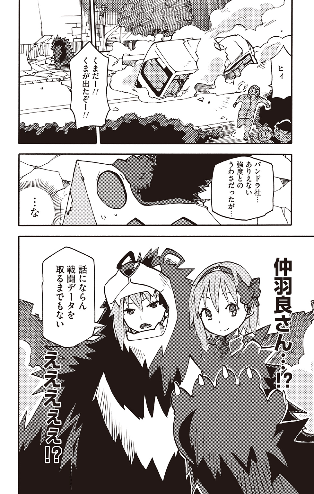
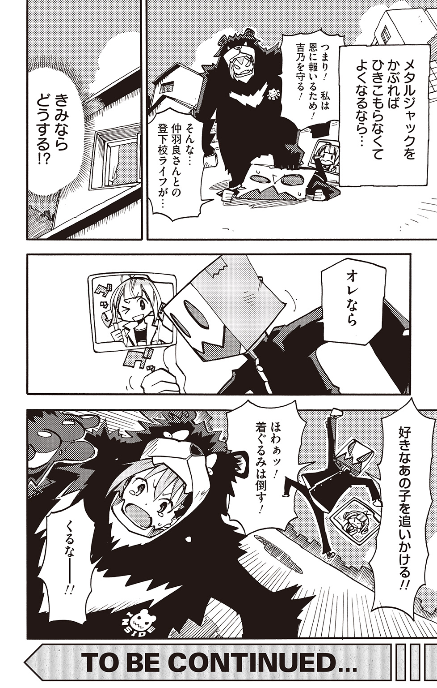
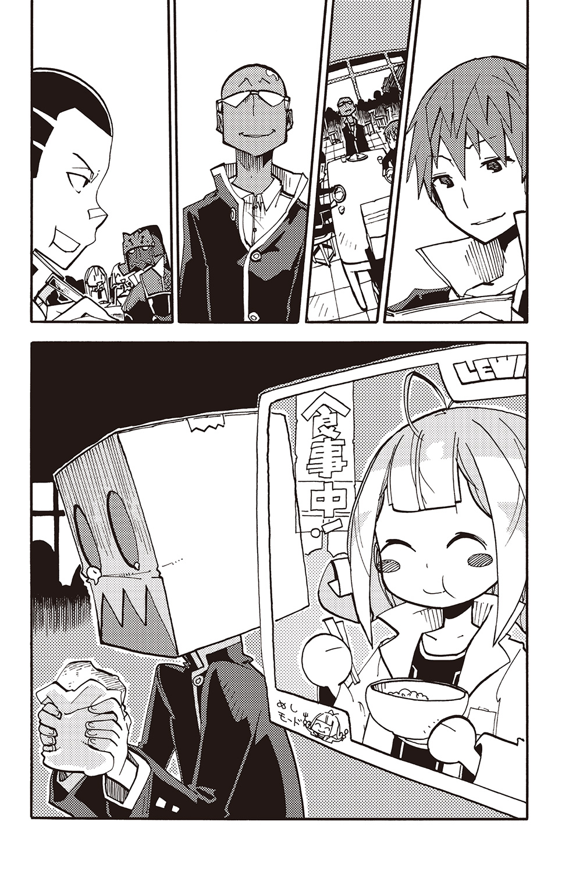
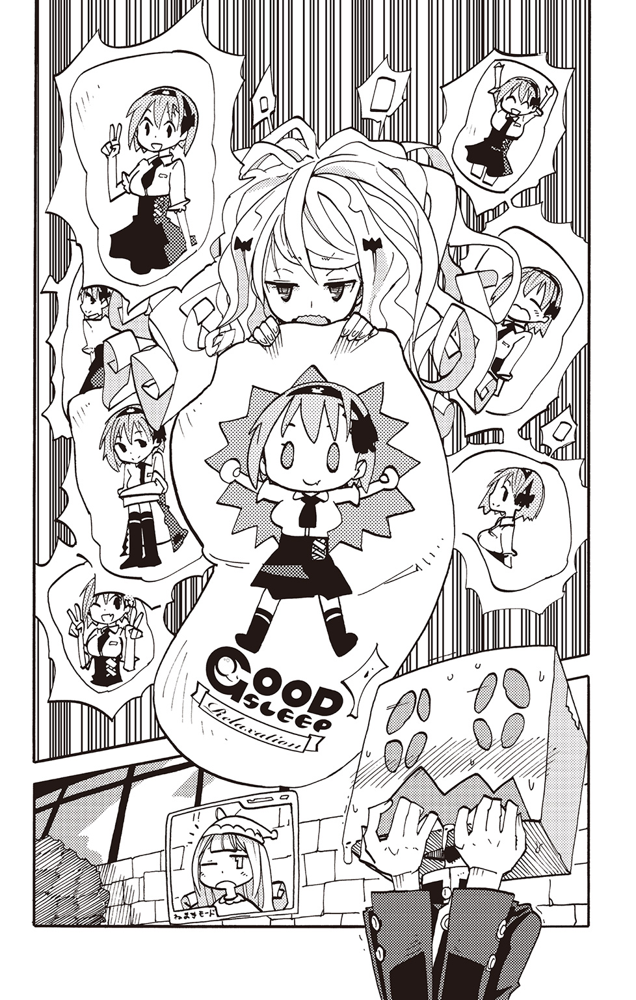

| ハイスクールパワード メタルジャック!!≪立読み用≫ | |
| ひなたしょう | |
この本は縦書きでレイアウトされています。
また、ご覧になる機種により、表示の差が認められることがあります。
ＣＯＮＴＥＮＴＳ
ヒキコモリパワード メタルジャック！
ハイスクールパワード メタルジャック!!
この作品はフィクションです。
実在の人物・団体・事件などには、いっさい関係ありません。


――頭部を覆うは、紛うことなきダンボール。
だがしかし！ その実体は、異世界の一企業パンドラ社によって開発された自立支援用パワードヘッド――その名もメタルジャック！
装着するだけでどんな歴戦のひきこもりでも外に出られるようになるといった超越科学の結晶体である。
万年不登校でひきこもりだった俺こと森内メタルは、ある日突然パンドラ社のテスター（テストパイロットと同義）に選ばれてしまう。クールかつ賢い感じであった俺は、二つ返事でパンドラ社の申し出を承諾。
かくしてここに、ダンボールをかぶらないと外に出られない俺という存在が誕生したのであった......。
そして突然はじまる非日常的な毎日！
メタルジャックを狙う謎の組織との壮絶なる闘い！
現れる好敵手！（←後に仲間に）
ついに明かされる異世界の秘密！
「あ、あなたはまさか......」
「そう、私だ。お前の父だ......！」
怒濤の展開！
物語の鍵を握る謎の言葉「ほあっ！」とは一体......？
そして、すべてを乗り越えた後に――
結ばれる主人公・俺と、ヒロイン・ビューティホー仲羽良さん！
......といったことなど当然、まったくと言っていいほどない。ないのだ。そんなこと常識的に考えてあるはずもない。
ただ、ちょっとパワードＴＶとかいう異世界の企業参加型テレビ番組に二十四時間態勢で出演しなければならないというだけで。
それから、場合によっては他の企業の参加者――テスターが、自身のパワードスーツの優秀さをテレビでアピールしたいがために突然襲いかかってくる可能性も、もしかするとあるかもしれませんよというだけで。
さらには、憧れの仲羽良さんが、異世界からやって来た同じくパワードＴＶに参加している生きた着ぐるみもどきに食べられていたりするだけで。
もう全然非日常的なことなんてないんだからね。うん。ホント。俺は大丈夫だから。うん。ホントに。全然冷静だし。マジで。
「ぬぅあッ！」
放課後の校内で、俺はダンボールに覆われた頭部を、思いっきり廊下の壁に叩きつけていた。このダンボールは硬かった。尋常じゃないほど硬かった。これでもかというくらいに硬かった。ちょっとおかしいのではないかと思うくらいに硬かった。
ぱらぱらと、ひび割れた壁から破片が落ちる。
「くそっ......また壁に頭部を叩きつけてしまった......」
俺は冷静であった。冷静であったがだがしかし！ 仲羽良さんがベヒモス改にずっと食べられたままで一緒に帰りたいのに俺という存在はあああううああああああああああ！
「おのれベヒモス改めぇ......！」
柱の陰に身を潜めながら、前を行くデフォルメされたクマのような着ぐるみの背中を睨みつける。憎しみをこめて睨みつける。仲羽良さんのみを無傷で残して爆発しろと念じながら睨みつける。
俺が睨みつける、その赤茶色の毛に覆われた背中の持ち主こそが、くだんのベヒモス改であった。
平和な学校を闊歩する着ぐるみ生命体。それはそれは異様な光景であった。十人いれば十人が振り返るであろうその姿。浮いていた。浮きまくりであった。
しかし、仲羽良さんは――ベヒモス改は、周囲の生徒にジロジロと見られたりすることはない。不必要なまでに注目を集めることはないのだ。
なぜかと問われてもそれはそういうものだとしか言いようがない。カモフラージュされているのだ。恐るべきは異世界の技術力。そう、ベヒモス改は異世界の一企業インサイド社によって生み出された戦闘用パワードスーツなのだ。
正式名称は、近接格闘型生体兵器パワードアニマル・ベヒモス改。
そんな生きているパワードスーツが、周囲の注目を集めずに日常生活にとけこんでいるのだ。本来ならば浮きまくりの、異世界の塊のような存在であるが、カモフラージュのお陰で誰も気にしない。しかしカモフラージュといっても、姿が見えないわけでも、別の姿に見えているわけでもない。それはさながら、某国民的ドラ的存在。そう考えると、わかりやすいだろう。
周りの生徒たちに気にされることもなく、颯爽と廊下を行くベヒモス改。帰宅するのだ。そそくさと身を潜め、気配を消しながら俺はそのあとを追う。俺のメタルジャックもまた、ベヒモス改と同じように異世界の技術によってカモフラージュされていた。つまり、今の物陰に潜む俺という存在には、不自然さなどという要素は微塵もないのだ。それはまさに廊下に――そして学園生活にとけこんだ存在といえた。それはそれは平凡で、どこにでもおり、全国の学校で毎日のように見られるであろう元不登校児兼ひきこもりかつ頭部をダンボールでガードした存在――それは周囲に対してまったく違和感も不自然さも与えることのない姿であろう。まるで日常の体現者であるかのごときこの俺のカモフラージュは完璧であるといえよう。
「ダンボールがっ、あはっ、ダンボールがっ、物陰に、ひぃひぃ、えひぇいっ！」
すれ違う女子生徒たちがしきりにこちらを指差して笑っていた。こんな日常的な光景の、ともすれば退屈な光景の、一体何が彼女たちのツボにハマったというのか。まったく意味がわからんな。ちょっと最近の子は何を考えているのか全然理解できないな。
そんなことを考える。俺のカモフラージュは完璧であった。
――ああ、それにくらべてやはり仲羽良さんはいいなあ......。
そんなことも考える。そんなことを考えて癒される。俺は何かにつけて仲羽良さんのことを考えていた。二秒に一度くらい考えていた。
ああ、だがしかし、ここにひとつの問題があった。今俺が直面している切実なる問題だ。今ベヒモス改の口の中からその美しい顔を覗かせている仲羽良さん――その表情は、その意識は、実に凶暴かつ野性的なものであった。なぜならば仲羽良さんの肉体と意識は今、現在進行形でベヒモス改に乗っ取られているからだ。
しかし、この街には俺や仲羽良さん以外にも異世界のテクノロジーを身に纏った存在がいるうえに、彼ら彼女らが全員平和主義者かつ事なかれ主義かつ動物に対しては無条件にやさしい（特にクマに似た謎の生物が好き）などという可能性は限りなくゼロに近いわけで、そのことを考えてしまうと俺はもういてもたってもいられない。
なぜならば、ベヒモス改は戦闘用であり、何かと通学中などには一旗揚げようと目論む他の参加者に狙われる心配が俺以上にあるわけで、非戦闘用の俺ですら、メガネを操り偏差値を測るラブメガネ社のパワードメガネ・ギャリベンに襲われたことがあるくらいだし、だからベヒモス改の精神が外出時のみ前面に出てくることは仲羽良さん自身の身の安全のためにはいたしかたないというのが現実であって、現実と妄想の区別も大体はつく俺から言わせればそんなことはわかっているつもりなのだが、わかってはいるのだが、あああああ。
俺は平凡な日常生活を、もっと言えば人並みに楽しい学生生活を、さらに言えば仲羽良さんとのピュアハートラブストーリーを送りたいわけで、そこに奇抜な着ぐるみ装備は必要ないわけで、そもそもまともに仲羽良さんご本人ともお話できていないわけで、仲羽良さんとお友達になりたいのにこれではダンボールをかぶった男がただただウロウロしているだけなわけで、ピュアダンボールウロウロストーリーなわけで、そのことを考えていると胸の奥から沸々と怒りがこみ上げてくるわけでぬぅあッ！
「ぬぅあッ、ぬぅあッ、ぬぅあッ」
廊下の壁から、ぱらぱらと白い砂が落ちる。
『お、落ち着いてくださいメタルさんっ！ ああっ、壁がっ！ 冷静にっ、冷静になってください！』
――と、背後から、そんな声が。声の主もまた、ベヒモス改と同じくらい、そしてそれ以上に浮いていた。というか、リアルに宙に浮いていた。
突如として空中に現れた画面――ふわふわと浮かんだその画面の中に描かれているのはアニメの少女。二重の意味で浮きまくりである。しかし彼女もまた、カモフラージュされていて、周囲の生徒たちは誰も気にしない。
彼女こそ、メタルジャック付属のヘルプＡＩ、つまりしゃべる取扱説明書。名前を、レウイシア２Ｄという。俺は彼女のことをレウと呼んでいた。
そんなレウに冷静になれと諭されるが、何を馬鹿なことを。俺はいつだって冷静沈着、落ち着いていることにかけては右に出る者しかいないとまで言われるほどの男。そう――あらゆる人々が俺の右側からどこかへと行ってしまう。それをただひたすらに、主に部屋にひきこもりながらただただ見守ってきたのだ。このことからも、俺がいかに落ち着き払っている人間であるか、冷静な存在であるかがご理解いただけたことであろう。
そう――だから俺は落ち着いて冷静に考える。壁のことを考える。
「こんな壁砕け散ってしまえばいいんだ......木っ端微塵に......っ」
いや違う。壁のことなど今は関係なかった。仲羽良さんだ。仲羽良さんのこと――そしてベヒモス改のことを考えていたのだ。
「ぐぅぬうわああああベヒモス改がァァァッ、仲羽良さんを食べて口の中にぃぃぃ、中にぃぃ、ああうあああギギギギィ」
メタルジャックのギザギザな口が「ギギギ......」と開く。
『ひぃ!?』
レウの短い悲鳴が。
俺はここ最近やたらと冷静であった。冷静に、けして怒りに我を忘れるなどといったことがないように、しっかりと現状を把握する。
「ふう......なんかここの床汚いな。大量の白い粉みたいなものが......。掃除当番どこのクラスだよ？」
みんな、自分だけの学校じゃないんだ。廊下は綺麗に使おうぜ。普段から自分たちが歩く場所だろうが。自分の足下のことすらしっかりとできない人間に、一体何ができるというのか。
それはそう――まさに、地に足のついた考え。
俺がそんなことを考えているとレウが、
『あ、ほら、仲羽良さん行っちゃいますよ』
廊下の角を曲がったベヒモス改を指差す。
「おおっ、急がなくては。見失ってしまう」
小走りに廊下を進む。
『こんなコソコソとあとをつけてどうするんですか？』
「ふふふ、仲羽良さんの家がどこにあるのか、確かめるのだよ。いつもいつもベヒモス改は、一緒に帰ろうとする俺の首をありえない方向にホォアするからな。今日は見つからないように隠密行動でいこうってわけだ。いやあ、それにしてもあれは驚いた。意識が戻ったら窓の外真っ暗だったからな」
そう――俺はここ最近、常に仲羽良さんとお近づきになろうと積極的に行動していたのだ。積極的に、仲羽良さんと一緒に登下校しようとしたり、先生が皆に配った学校行事案内のプリントを婚姻届にすり替えたりしていたのだが、それらの行為はあの憎きベヒモス改の手によってすべて阻まれた挙げ句、俺の命の炎までもがあわや消されかかるという始末であった。
だから、先日のお見舞いの一件でもそうであったように、俺はまだ仲羽良さんの家がどこにあるのかすら知らないのだ。せめて今日こそは、仲羽良さんの家の場所だけでも確認してから帰りたいものだ。
それゆえの尾行。それゆえの隠密行動。
「だから見つかるわけにはいかないのさ。俺はただのダンボール――通りすがりのただのダンボールだと自分に言い聞かせるのさ。自己暗示ってやつだな。これで少しは見つかりにくくなるハズだ」
『まずダンボールが通りすがるっていう部分が、もはや超常現象の類なんですけど......』
「ふむ、あくまでも自己暗示だからな。まあ、そうだな。もうちょっと具体的に言うのならば『俺はスーパーマーケットのバックヤードに無造作に放置されているしがないただの若干湿ったダンボールに過ぎないんだぜ』って感じかな」
『なぜそんなに卑屈に......っ!?』
そんな調子でレウとの小粋な会話を続けながら、俺は先ほどのベヒモス改と同じように廊下の角を曲がる。
「おぎゃあっ!?」
とそこで、尻餅をついた。
なんと、腕を組んだベヒモス改が、そこで仁王立ちしていたのだ。予想外の出来事であった。
「なぜついてくる？」
とベヒモス改。鋭い目つきで見下ろされる。
『メ、メタルさん......』
ちょうど尻餅をついた俺の顔の位置と同じ高さに浮いた画面の中で、レウが動揺する。
「お、落ち着くんだ。無心だ。無心になるんだ。微動だにせず、念じるんだ。俺はスーパーマーケットのバックヤードに無造作に放置されているしがないただの若干湿ったダンボールに過ぎないんだぜ、と」
相手は野生のクマのようなもの。ここで下手に動いたら命取りになるだろう。自身にダンボールだと言い聞かせ、声を押し殺し、ただひたすらに通り過ぎてくれるのを待つしか――
「なにをしているパンドラ社？」
「なぜバレたしっ！」
『ここがスーパーじゃないからでは......？』
俺とレウがそろってあたふたしていると、ベヒモス改がバキバキとそのいかつい拳を鳴らした。
「まさか、また吉乃におかしな真似をしようとしているのではあるまいな？」
吉乃とは、仲羽良さんの名前である。ベヒモス改は、厚かましくも仲羽良さんのことをこう呼んでいた。本来ならば貴様みたいなクマのような謎生物が軽々しく発音していい名前ではないのだ。ふざけるなよハチミツでも食ってろ。ハニーハントの旅に出てもう帰ってくるな。
そんな言葉をぐっと吞みこみ、俺はダンボールの中でにっこりと微笑んだ。そして、ゆっくりと立ち上がる。そう、平常心だ。あくまでも穏やかに事を進めなくてはならない。こんなところで尾行しようとしていたことがバレるわけにはいかないのだ。
爽やかに、語りかける。
「やあ、こんなところで会うとは奇遇だね。いや、ホント偶然。前世からの縁......なにか運命的なものを感じるよね。あ、ところで今帰りかい？ それもまた奇遇だね！ 俺――いや、ボクも今帰宅しようかと思っていたところなんだよ。いやあ、まさか『帰宅する』などという珍しい現象をふたり同時に思いつくとは、本当に奇遇だねえ。ボクたち考え方が似ているのかも――気が合うのかもしれないねえ。あ、ついでにホントもうひとつ偶然なんだけれど、ボクたちの帰る方向は一緒だね。もうここまで偶然が重なると怖いくらいだね。運命的というか、神様が『ＹＯＵたち、結婚しちゃいなＹＯ！』って言っているようにしか思えないよね。そんなわけでどうだいボクと一緒に帰らないかい？」
「いやだよ」
「ヒィィ」
あまりの即答に俺はうめき声をあげながら再び尻餅をついてしまった。瞬殺である。僅か四文字で。
「な、なぜっ!? なぜだっ!?」
ベヒモス改を見上げながら問うと、
「もうついてくるんじゃないぞ」
そう言いながらベヒモス改が背を向けた。
「待てっ、なんでだ!? いいじゃないか一緒に帰るくらい！ 毎回なんでそんなに嫌がるんだよっ!?」
慌てて立ち上がりその背中を追いかける。
「なんでって、なんか嫌なんだよ。ついてくるな」
ぽんっと階段を全段抜かしで軽々と飛び降りるベヒモス改。やつは俺を撒くつもりなのだ。見失うわけにはいかない。俺も負けじと全段抜かしで「ギィィィ」と叫びながら飛び降りる。
ベヒモス改が、上履きをぎゅむっと鳴らしながら無事着地した俺を見て眉をひそめた。
「しつこいやつめ。だからいやなんだ。お前に吉乃の家を知られると、毎朝やって来るようになるだろう？」
言いながら、ベヒモス改が走り出す。言いながら、俺もまたそのあとを追う。
「いや、それは誤解ですよ。確かに仲羽良さんと毎朝一緒に登校したいとは言っているさ。ああ、言っているさ。でも、だからといって毎朝家の前までやって来るだなんてそんな無粋な真似するわけないでしょう？ この俺が。紳士なこの俺が。ただ、ちょっとお宅の敷地内で野営をさせてもらいたいだけなんだよ！」
「なんで住み着こうとしているんだよっ！」
「いやいやいや、敷地内が無理ならお宅が見える範囲内でいいんですって！ 小型のテントさえ設置できればそれで！」
「やめろっ、ついてくるんじゃない！」
叫びながら、勢いよく昇降口から飛び出していくベヒモス改。俺も下駄箱を素通りして上履きのまま飛び出す。
ガッ。
「あ」
――と、昇降口から出たところで段差に足をもつれさせる。勢いよく走っていた俺は、これまた勢いよく前につんのめった。
「おんぎゃああっ!?」
ふわり、と一瞬身体が浮き、次の瞬間にはガンッ！ ズザザ......！ とコンクリートに顔面を強打し擦りつけていた。無論パワードヘッド・メタルジャックのおかげでダメージはないが、慌てて俺が顔を上げるとすでにベヒモス改の姿は遥か遠く、小さくなっていた。
「ああああぬぅわかはらさあああああああんっ!!」
顔のみを上げたまま、天に向かって絶叫する。仲羽良さんと一緒に楽しく下校するという俺の野望が、今日もまた潰えたのだ。
「うう、今日もひとりだ......。うわあああ仲羽良さん......仲羽良さんんん......」
下駄箱や校門付近にいた生徒たちにチラチラと見られクスクスと笑われながら、俺は倒れ伏したままむせび泣いた。
「勝ったんだ......一度は......っ、一度は勝った......満身創痍だったけれども勝ったんだ......俺はベヒモス改に勝ったのに......！」
泣きながら、そして時に「オエッ」と声を漏らしながら、俺は数日前の出来事を思い出していた。
囚われの仲羽良さんを颯爽と救い出す俺の勇姿。渾身の力をこめて放った頭突きでもって、俺はベヒモス改を気絶させたのだ。
「あの時......あの時仲羽良さんを引っ張り出して、ベヒモス改を海にでも投げ棄てていたらこんなことにはならなかったんだ......ならなかったんだ......」
シクシクと涙を流しながら、俺は拳をコンクリートに叩きつけた。ガンガン叩きつける。
「あああああっ、手がッ......なぜだ、手が痛い......ッ！」
『でしょうね。やめましょうメタルさん。ガンガンするのやめましょう』
苦痛に悶えながら、俺はプルプルと揺れる。小刻みに揺れる。揺れながらうめくように宣言する。
「ううう、明日こそは......！ 明日こそは必ずや仲羽良さんと登下校を......！」
全人類の夢――仲羽良さんとの楽しい登下校をこの胸に誓う。俺が誓っていると、レウが語りかけてきた。
『メタルさん......というか、まず立ちましょうよ......。ほら、周りの皆さんに笑われていますよ？ テレビの前にいる異世界の皆さんからもきっと笑われていますよ？』
やさしい声で、そう諭される。笑えてきた。あまりにもどうでもよくて笑いがこみ上げてくる。
「そんなこともうどーでもいいッ！ ははは、笑え笑えっ！ 笑えばいいだろッ！ 笑えよォォッ！」
俺はその場でメタルジャックを支点にしてめちゃくちゃに身体を回転させはじめた。タタンッと軽快に大地を蹴りながら、ぐりんぐりん回転する。さながら風車のように回転する。近くにいた女子生徒が悲鳴をあげた。
「はーっはっは、見ろよオオオオオ！ これが憐れなピエロの姿だああああああ！」
『ヒィィッ、た、立ってくださいっ！ 先生呼ばれますよッ!?』
「ムシロナカハラサンヲヨベエエエエエ!! ナカハラサンヲオオオオオオオ!!」
『いやもう悪魔ッ!? 誰か、誰か霊媒師――いえ、エクソシストを！』
こうして、今日もまた、いつもと変わらない平凡な一日が終わろうとしていた。
ちなみに、豚の鳴き声を加工したみたいな声をあげはじめた俺の姿は、数年後『放課後の悪魔』として学園の七不思議に参戦することになるのだが、それはまた別の話である。
早朝。
家から出て、伸びをする。両腕を天高く突き上げて、伸びる。爽やかな朝の日射しを浴びながら、伸びる。そして、俺はぽつりと呟いた。
「初心に......かえろうと思うんだ......」
『どうしたんですか急に』
俺の声に反応して、パッと空中に画面が出現した。画面に映るアニメの少女レウが、訝しげな顔をして俺を見つめている。
俺は一晩中考えていたことをレウに告げた。
「俺は今まで、うかれすぎていたのかもしれん......そう思ってな......。思春期のせいか、ここ数年は、特に尋常ではない精神状態だったからな......」
『年単位でその精神状態だったんですね......』
「ここ最近はもっとだ。もっと尋常ではない......。メタルジャックのおかげで学校に行けるようになって、仲羽良さんに毎日逢えるようになって――いや、悔しいがここは認めよう......会えるようになって、だ。会えるようになって俺がとった行動といえばなんだ？ 嬉々としながら俺がくり返した行動はなんだ？ 振り返ってみると、俺はただただ仲羽良さんに求婚していただけ......！ 婚姻届を握りしめて仲羽良さんを追いかけていただけ......！ ああ、なんということだ......」
どう見てもチープなダンボールにしか見えない頭を抱えて、俺は「オォォォ」とうめき声を絞り出す。
『ま、まさかメタルさん......ようやく気がついたんですか!? 己の奇行に！』
気功......レウが何を言っているのかよくわからないが、俺はようやく気がついた忌々しい真実を口にした。
「できないんだ......結婚......」
レウが一瞬フリーズした。そして――
『............はい？』
画面に「？」を表示させながら首を傾げた。俺はもう泣きそうだった。
「だから、できねえんだよ結婚がッ！ 法律でッ！ 年齢的な問題でッ！」
言い放ったその瞬間、あたりに静寂が訪れた。エンジン音を響かせて、家の前を車が走っていった。
『きっ、気がついたことって......もしかして、それ......ですか......？』
「昨日......気がついた......」
『昨日ッ!?』
俺はガクリと大地に手をついた。どうやら俺の年齢では、仲羽良さんと結婚できないらしい。政治だ。すべて政治が悪いんだ。長引く不況、就職できない若者たち、結婚できない俺......。詳しいことはよくわからないが、とりあえず政治が悪いことだけは、俺にも理解できた。
「ううっ、うくぅうう、まだっ、結婚できないなんて......！」
『とりあえず意地でも「まだ」という言葉は使うんですね......』
グググ......と、拳を握りしめ憤る。だがしかし、そんなことで諦める俺ではなかった。だからこその初心！ 初心にかえることへの決意！ 初心忘るべからずとは、まさに今の俺のためにある言葉！
「beautiful......仲羽良さん beautiful」
言いながら、ゆらりと俺は立ち上がった。
『ネガティブだったメタルさんの発音が急にネイティブにッ!?』
ふう～と息を吐きながら俺は答えた。
「仲羽良さんへの愛が、あふれでる無限の愛が、俺をそうさせた......beautiful」
『もしかして、それしか言えない......とか......？』
「beautiful......パァァァドゥン？」
『メタルさん......』
溜息をついて、レウが言う。
『英語の授業中にいつも思うのですが、中学生レベルの単語すらかなり怪しいメタルさんの様子を見ていると、やりきれない気持ちになります......』
そんなレウに、俺は「やれやれ」と首を振る。そうして、静かに答えた。
「それはしかたがないだろう。俺の脳内外国人であるペドロは、英語が母国語じゃないんだから......」
『なんですかそのはじめて聞くタイプの言い訳はッ!?』
――ペドロ、がんばれ。どちらかというとスペイン語の方が得意そうなペドロがんばれ。
驚愕するレウをよそに、俺は脳内外国人ペドロにそっとエールを送る。そして改めて初心を表明した。
「レウよ、俺は今まで――」
そんな俺の初心を遮って、レウがグチグチと文句を言いだした。
『だいたいですよ、メタルさん授業中ほとんど寝ていますよね？ よくビクンと全身を痙攣させますよね？ なんで寝ちゃうんですか！ 起きてましょうよ！』
「だからな、俺は――」
『英語とかできないときついですよ？ 大学行けませんよ？ 他の教科が普通だったとしても、そこで英語さえできればかなり有利になりますよ？ ただでさえ人よりもできないのに寝るってどういうことなんですか？ 何を考えて生きているんですか？ ありえない選択ですよ？ 一体どういう神経を――』
「うるさい黙れ初心を表明させろッ!!」
叫び、ぶわっと思わずレウにつかみかかる。が、しかし――映像なのですり抜けて、俺はそのまま足をもつれさせてすっ転ぶ。置いてあった植木鉢を顔面で叩き割る。
『なにしてるんですか......』
パラパラと顔面から植木鉢の破片と土を撒き散らしながら、むくりと俺は顔を上げる。俺は泣いた。泣きながら初心を表明した。
「仲羽良さんと、楽しく、登下校したい......ッ！ 望むことは、それだけなのにっ......！ それだけなのにぃぃぃっ！」
それなのに、なんで俺は顔面で植木鉢を木っ端微塵にしているのだろうか。一寸先は闇......人生とは、何があるのかわからないものだ......。気をつけねばならぬ......気をつけねば、ならぬのだ......！
「だから俺は待つ！ 自宅の前で仲羽良さんを待つ！ どうだレウ？」
『それ、いつもやっていますよね？』
「だからな、今までが贅沢すぎたのだよ。俺は調子にのって仲羽良さんに話しかけようなどとしていただろ？ まったく......おこがましいにもほどがあるよね。もっと謙虚にいかなきゃダメだったんだ。だからそう、初心にかえって俺は電信柱の陰に隠れながら仲羽良さんのあとをついていくことにするんだ。まずは、そこからだよな」
『初心の時点ですでにアウトじゃないですかっ！』
「なにがアウトなものか。ツーアウトくらいだろ？」
『増えてますけどッ!?』
「おい一体どうすればアウトじゃなくなるんだ？ アウトの逆ってなんだ？」
アウトでなくなる方法を模索する俺。そして俺は気づく。その間わずか二秒。ポン、と手を叩いて俺は声を張りあげた。
「ああ、そうか！ スリーアウトにすれば――」
『チェンジになりますね......』
レウに遮られる。
『というか、それじゃ野球じゃないですか......』
ヤキュウ......レウが何を言っているのかよくわからないが、俺はとにかく初心を貫くことにする。門前――表札の下に体育座りをして、仲羽良さんを待つことに。
「うへへ......もうすぐ来るぞ仲羽良さん」
ウキウキしながら体育座りをする俺。気分はもう門松だ。ゆっさゆっさと頭を前後に振りながら、俺は口ずさむ。
「仲羽良さんを待つ、俺という存在」
『妙なテンションで何よりです......』
あきれ果てた顔をしながら、ちょうど俺の目線と同じ位置にふわふわと浮かぶレウ。
爽やかな朝の一コマであった。だがしかし、待てど暮らせど、仲羽良さんがその姿を現すことはなかった。
ダダダダダ！ と駆ける。怒りをこめて駆ける。
怒りのままに昇降口を突破。靴を脱ぎ捨てながら下駄箱前のすのこに着地。左手で、下駄箱の中にある上履きをつかみ、引き出すと同時に体勢を低くし脱ぎ捨てた靴をもつかみ取る。
そして――上履きと履いてきた靴とを、入れ替える！
俺は「オオォ」と叫びながら鬼神の如く上履きをすのこに叩きつけ、そして履いた。そのまま気分は全段抜かしで階段を駆け上がっていく。実際は二段、もしくは勢いをつけて三段なのだが、とにかくすさまじい勢いで階段を駆け上がっていく。目指す場所はただひとつ――俺の教室一年Ｂ組......！
「てめえええええっ!!」
スパァァァン！ と勢いよく教室のドアを開け放ち、俺は叫んだ。
何事かとクラス中の視線を集めながら、俺は怒りの対象を発見した。叫びスパァァァン！ とドアを開け放ったこの俺の姿を、やつもまたチラリと確認していた。チラリどころか俺を見て、ニヤリと口もとを歪めたような気さえする。これは由々しき事態であった。
「きっさまああああ......！ わざとか？ わざとなのか......？」
俺はぶるぶると拳を握りしめながらやつに近づいていく。一歩一歩、怒りをこめてゆっくりと。
「わざと登校時間をズラしやがったなベヒモス改ッ！」
俺は目の前に座る存在――クマに似た謎生物・ベヒモス改を睨みつける。
「くそっ、なんてことを！ 人間のすることじゃねえっ！」
そう言って、俺は頭を抱えながら悲鳴をあげた。すると、ベヒモス改の、そのあんぐりと開けた口の中から顔を覗かせている仲羽良さんが、犬歯を見せながら笑った。
「残念ながら、私は人間ではないがな」
ああっ、あああ、いいっ......。意地悪そうな顔をして笑う仲羽良さんもイイィーッ！ イヒィィッ！ あ、いやいや、ちょっと待てこれはベヒモス改。仲羽良さんの口を借りて語りやがって。ゆ、許せねえな......。許せねえぜこれは。あぶねー危うくプロポーズするところだった......。
「やはり倒すしかないようだ......今、この場でっ！」
ベヒモス改を気絶させ、その口の中から仲羽良さんを引っ張り出すのだ。コキコキと首の体操をしていると、空中に画面が現れた。
『ちょ、ちょっとメタルさんっ！ 初心にかえるんじゃなかったんですか!?』
あたふたとするレウに、俺は言う。
「かえったが？」
『じゃあなんで......。電信柱の陰に隠れてついていく件は一体どうなったんですか......？』
「なにそれ超気持ち悪りぃじゃん。意味わからんし......」
『ええ～......』
「とにかくベヒモス改！ 今日というこの日が、貴様の命日となる！ ホォォォ......！」
俺は体勢を低くして、教室の床に指をついた。短距離走の選手がスタートするときの体勢――クラウチングスタートのようなポーズのまま停止した。
「私はもう戦うつもりはないんだがな......。あーっと、なんだ、やめておいた方がいいぞ......？」
困ったような表情で仲羽良さん――否、ベヒモス改が。ぐはあああ!? いちいち美しすぎる！ 待っていてください仲羽良さんっ！ 今、その着ぐるみ生命体の魔の手から......いや、魔の腹の中から、あなたを救い出してみせる！
万感の想いをこめて今、俺は床を蹴った。
「ホォォォ......俺ミサイルッ！（技名）」
『技名ダサッ!?』
一直線にベヒモス改へと突っこむ俺。
ひょいとよけるベヒモス改。
窓ガラスを割りながら外へ飛び出していく俺。お母さん、俺......飛んでるよ......。
『メ、メタルさ――――んっ!?』
真横にレウの叫び声を聞きながら、落ちていく俺。「なるほどなるほど」と呟きながら落ちていく俺。なぜこんなことになったのだろうかと冷静に分析する俺。こういうときにこそ焦らずに対処しなければならないと考える俺。対処のしようがないと気づく俺。冷静に分析――あたりですでに一階昇降口前にある茂みに激突していた俺。
全身をクモの巣と葉っぱまみれにしながら、俺はむくりと起き上がった。
「そうか、そもそも前を見ずに頭突きをしながら飛んだのが間違いだったのか......よけられたら空中ではもはや為す術がない......追尾機能か......俺に追尾機能さえあれば......」
知的なことを呟きながら、俺はガサガサと茂みから這い出した。
『メタルさんっ、だ、大丈夫なんですか？』
「レウよ......ホーミングが必要だ......！」
『ああっ、大丈夫......じゃない？ というか、ケガとかは？』
「ん？ え、なに？」
本気でよくわからないことを言いだしたレウに、俺は思わず二度見して聞き返してしまう。
『ここ最近人間じゃないような気が......』
「あーなんかしらねえけど肩がすげえ痛ぇわ」
『明らかに今のでッ!? でも肩だけ!?』
俺は自分の指で肩の凝りをほぐしながら、おもむろに昇降口へ向かう。そして、叫びながら気分は全段抜かしで階段を（以下略）
「クマの化物めッ!!」
スパァァァン！ と勢いよく教室のドアを開け放ち、俺は叫んだ。
何事かとクラス中の視線を集めながら、そして「なんで無傷なの......」とひそひそと気味悪がられながら、俺は怒りの対象に食ってかかった。
「吐け今すぐ、仲羽良さんをっ！」
進路調査票にマタギになりたいと記入する勢いで食ってかかる。食われている仲羽良さんを食われていないようにするためにも食ってかかる。
「私はクマではない」
「じゃあなんだ......カバか？ カバの化物めッ!!」
「それは私ではなくムー○ンだろう？」
「ムー○ンはカバじゃねえッ！ ふざけやがって、俺がス○フキン大好きっ子と知っての狼藉かァ！」
俺は再び体勢を低くして構えると、そのまま床を蹴った。
一直線にベヒモス改へと突っこむ俺再び。
ひょいとよけるベヒモス改再び。
馬鹿め、追尾機能発動！ と声を大にして叫ぶ俺。
割れた窓から外へ飛び出していく俺。
「俺、子供の頃テレビで観ていて、将来はあの人のようになりたいと憧れていたんだ......」
『ああ、なんとなくわかります......。メタルさんが好みそうなキャラですよね......』
宙を舞いながら、昔話に花を咲かせる。そして花の咲かない茂みに着地。激突という名の着地を果たす。同時に、チャイムが鳴り、ホームルームの時間となった。のそのそと茂みから這い出た俺は、うなり声をあげながら気分は全段抜かしどころかリアル全段抜かし（以下略）
「ギィィィッ!!」
スパァァァン！ と勢いよく教室のドアを開け放ち、俺は叫んだ。
何事かとクラス中の視線を集めながら、そして「だからなんで無傷なの......」「悪魔だ......」「たけのこ......」などとひそひそと気味悪がられ時には崇拝の対象にさえなりながら、俺はベヒモス改に食ってかかった。
「なんで二度落とした!? なんで二度も落とした!? 痛えだろうがァァァッ！」
「勝手に二度も落ちていったんだろ」
ナメたことをほざく着ぐるみ生命体。
「えーっと森内は......遅刻な」
出席簿に遅刻と記入する担任。
「ああっ、ちょ、待ってください！ 俺いましたよ！」
両手を広げ、俺は先生に抗議した。俺はいた。むしろあんたはいつからいたんだ。そんな思いもこめて抗議する。
「でもな森内、チャイムが鳴ったあとでは遅刻なんだ」
「いや、ですからチャイムが鳴る前からいたんですって！ ただ、ちょっと二回ほどそこの窓から飛び降りていただけなんです」
「二回もっ!?」
「ええ。見てくださいよこの割れた――」
――窓。そう言いかけて、俺は驚きに目を見開いた。さっきまで割れていた窓が、きれいさっぱりすっかり元に戻っていたのだ。
「うえええ!? なっ、なんじゃこりゃああああっ！ なんじゃこりゃあああああ!?」
慌てて窓に駆け寄り、ガラスをぺたぺたと触る。確かに頭突きで砕け散ったはずの窓ガラス――だがしかし、今では新品同様。割れた形跡など皆無。消え失せていた。
『割れたままですと騒ぎになりますので、パワードＴＶが適切な処置を施してくれたのでしょう。よかったですねメタルさん』
「よくねえええっ！ 証拠がなくなっただろうがァァァッ！」
俺はクラスメイトに助けを求めることにした。茶髪やオシャレ坊主をはじめとするクラスの仲間に、援護射撃の依頼をする。
「なあ、割れてたよなあ？ 窓ガラス割って俺外に飛び出していったよな？」
しかし、皆の表情は、俺の期待とは裏腹にさえないものであった。首を傾げながら、茶髪が答えた。
「いや、落ちていったような気もするけど......割れてたっけ？ なあ？」
そう言うと、茶髪はオシャレ坊主と顔を見合わせた。ふたりして「よくわからんな」と首をひねる。他のクラスメイトも皆、似たり寄ったりの反応であった。俺は驚愕した。つい今しがたの出来事だというのに、クラスメイトの記憶が曖昧になっている。
「お、おかしいだろうが！ 割ったから落ちていったんだろう？ ああ、先生噓じゃないんです本当なんです」
「しかし、クラスのみんなはよくわからないと言っている。現にガラスも割れていないし......」
「いやあああああ、なんで割れてねえんだっ！ なんで割れてねえんだああああ！」
あまりの異常事態に俺は頭部を窓ガラスに叩きつけた。割れる窓ガラス。突き刺さる頭部。ガラス片を撒き散らしながら引き抜く。
ハアハアと息を切らしながら、俺は言った。
「割れてたんです......さっきまで......こうして......」
先生が教卓に肘をついて頭を抱えていた。
「教員生活十一年目にして、校舎のガラスを叩き割る生徒に遭遇してしまうとは......一体どうすればいいんだ......」
ぶつぶつとそんなことを。なんてことだ。パワードＴＶが余計なことをしたばかりに、先生の心労が重なっていく。俺は同情した。教職とは、かくもつらく苦しい仕事なのか、と。
「大丈夫です先生。すべて異世界の仕業です」
「もうダメだ......自信がない......十二年目を迎える自信がない......」
そう呟くと、先生は泣きだしてしまった。何かつらいことでもあったのだろうかと俺が考えていると、
「よしっ、じゃあホームルーム続けるぞ」
突如として泣きやんだ先生が、真顔でそんなことを。
「えっ？」
俺は焦った。おろおろとあたりを見回す。嫌な予感がしたので、ぱっと振り返ると、先ほど叩き割ったはずの窓ガラスが再びきれいさっぱりすっかり元に戻っていた。
「えええっ!? また割れてねえっ!? また割れてねえっ!?」
床に散らばったはずの破片もすべて消えている。
「あああ、怖いっ！ パワードＴＶ怖いっ！ いつの間に直ったッ!?」
「おい森内なにやってる席つけ」
先生にそう言われる。
「先生ッ！ 割れていたんですッ！」
「......はあ？」
なんのこっちゃと首をひねる先生。
「割れてたんだよっ！ 信じてくれよっ！」
クラス中を見回しながら、俺は叫んだ。茶髪もオシャレ坊主も、そしてクラスの皆もまた首をひねるだけだった。ラブメガネ社のパワードメガネ・ギャリベンの所有者である委員長顔に関しては、涎を垂らしながら恍惚の表情でメガネを拭いていて、さっきから俺の話すら聞いてないし。
「えーっと、そうそう、森内は遅刻な」
「いやあああああああっ!?」
両腕でメタルジャックを抱えて、俺はその場に崩れ落ちた。「くくく......」とベヒモス改が声を押し殺して笑っていた。ああもう、可愛いなあ仲羽良さん。
ホームルームが終わり、まもなく一時限目がはじまろうとしていた。俺はベヒモス改をなんとかしなくてはならないなと考えていた。机に突っ伏したまま目を閉じて考えていた。ああ、木の香りがする......落ち着く......。机はいい......教室で寝たふりをするために必要な相棒――それが机だ。俺は机のことを考える。教室の備品たる机は、縦横高さすべてが寝たふりをするのに適したサイズになっている。机を使用し寝たふりさえしていれば万事うまくいくと言っても過言ではない。休み時間にすることがないときなどには寝たふりをするといいだろう。超至近距離で机との無言の会話を楽しむといいだろう。机はいつだって我々人類をあたたかく迎え入れてくれることだろう。そして俺はなぜ机のことを考えているのだろう......。
そうだ仲羽良さんだ。ベヒモス改をなんとかしなくてはならないのだ。
俺はベヒモス改を――
『――さんっ！』
ベヒモス改をなんとかしなくては――
『起きてくださいメタルさーんっ!!』
「ほんぎゃああああっ!?」
耳もとで何かが破裂したかのような爆音。悲鳴をあげて、俺は椅子から転がり落ちた。
「なっ、なんだ......!? つ、机......机はどうした？」
混乱しながら、俺は呆然と床にへたりこむ。
『ああ、よかった......』
ふわふわと、レウが俺の目線の位置に降りてきて、
『ようやく起きてくれましたねメタルさん』
そんなことを言う。見るとその手に、拡声器を持っているではないか。先ほどの爆音はこいつの仕業だったのだ。
メタルジャックのギザギザの口から手を入れて、未だキーンとなっている耳に指を突っこみいたわりながら、俺は言う。
「なんちゅーことをするんだ......」
『だってメタルさんいくら呼んでも起きないじゃないですか』
ぷんすかと怒るレウ。
「おおい、ちょっと待て。噓だろ？ 俺寝てないじゃん。ちょっと目をつぶって考え事してただけじゃん」
『いえ、確実に寝ていました』
「はあ？ いやちょっとありえねーし」
ありえねーありえねー言いながら、俺はのそりと立ち上がる。
教室内には、俺以外の生徒がひとりもいなかった。
「あ、ありえねー......」
あまりのことに愕然としてしまう。人っ子ひとりいなくなった教室に、俺は立ち尽くす。
「なんてことだ......また異世界――パワードＴＶの仕業か......っ!?」
『一時限目は教室移動ですよ』
「なんで誰も起こしてくれねーんだッ！ ああっ、俺寝てたわ!?」
声をあげて、自ら気づく。目を閉じて考え事をしていたつもりが、いつの間にか寝てしまっていたのだ。朝も早かったしな......。早くから起きて家の前で門松気分を味わいながら首ぶんぶん振ってたしな......。結局あの憎きベヒモス改に登校時間をズラされて仲羽良さんと一緒に登校できなかったしな......。
「ああっ、くそう！ また仲羽良さんいねえっ！ どこだ！」
『視聴覚室かと......』
「遠いじゃねーか！ 遠いじゃねーかァァァッ！」
言いながら、俺は教室から飛び出した。すでに一時限目がはじまっているため誰もいない廊下を急ぎ走る。廊下にまで聞こえてくる教師の声を聞きながら、次々と教室前を通過する。
「誰ひとり、起こしてはくれない......しょせん人はひとりなのか......ッ！」
リズミカルに階段を駆け下りながら、俺はうめくように呟いた。
『茶髪さんやオシャレ坊主さんや委員長顔さんも起こしてくれてはいたんですけどねえ......。メタルさんが薄ら笑いを浮かべながら「ＴＳＵＫＵＥ――かくも素晴らしき戦友――」などと言いだしたあたりでみんな呆れ果てて先に行ってしまいました......』
「そんな意味不明なことをっ!? 恐るべし深層心理！ あなどりがたし無意識の領域！」
階段を駆け下り、空き教室の前を通過して、俺は視聴覚室へと向かう。中庭を突っ切り、異次元空間へと引きずりこまれそうになっている委員長顔の前を通過して、俺は視聴覚室へと向かう。
「委員長顔がッ!?」
急ブレーキをかけて、慌てて俺は振り返る。
何もない空中に突如として出現した穴に、委員長顔が吸いこまれかけていた。空中に、まるでＣＧを貼りつけたかのような、今度こそ正真正銘ありえない光景。異世界のチカラが働いているとしか思えぬその光景。
「一体なんだこれは......」
目の前で繰り広げられるただならぬ光景を訝しみながら、俺は穴に近づいていく。穴といってもそれは、突如として空中に出現する画面の少女レウに近しい何かであった。丸く円を描いたその縁をよくわからないがＳＦチックな文字、あるいは数式のようなものの羅列が取り囲み回転している。なので穴というよりかは、魔法陣と表現した方がわかりやすいだろうか。とにかく、ＳＦチックな魔法陣に似た何かに、委員長顔が吸いこまれかけていた。
「もっ、森内くん......っ！ いっ、いいところに来てくれた......っ！」
ぷるぷると必死に踏ん張りながら、委員長顔がうめいた。
「もうっ、ダメかと思った......っ！ お、思わず死を覚悟したよ......っ！」
風もないのに、委員長顔の髪の毛が後方に引っ張られている。制服が、ばたばたとはためく。委員長顔が仰け反る。すさまじい吸引力。穴は、まるで巨大な掃除機のようでさえあった。
顔を引きつらせながら、というか、顔面の肉を引っ張られながら、委員長顔が耐える。
「ふぐうっ、こっ、ここで死ぬわけにはいかないっ......！ わたしにはまだ、かけ残したメガネたちが......ッ！」
髪の毛を引っ張られて、お笑い芸人がストッキングを装着したみたいな顔になっている委員長顔を眺めながら、俺はレウに訊ねた。
「これは、明らかにパワードＴＶだよな......」
『転送用のゲートですね』
レウにとっては、あまりにも当たり前の光景だったのであろう。まるで驚いた様子もなく、のほほんと答える。
『なにかの番組にゲストとして呼ばれているのではないでしょうか？』
「だとよ委員長顔」
そう言うと、委員長顔はブンブンとその引きつらせた顔を横に振った。吸引力により、唇がめくり上がる。
「ふぐっ、しっ、知らないっ......！ そんなのわたしは知らない......っ！」
「ほう......」
叫びながら藻搔く委員長顔を、俺は至近距離からしみじみと眺めた。そして――
「よしっ、それじゃあ俺は先に視聴覚室へ行ってるわ」
状況は理解できたことだし、急ぎ仲羽良さんが待つ視聴覚室へ向かうことにする。すでに授業ははじまってしまっていることだし......。
しかし、委員長顔がそれを許さない。
「ええっ、ちょっ、うっそっだっろッ!?」
悲鳴をあげて、立ち去ろうとした俺の制服を鷲づかみにする。
「なっ、なにをする!? は、放せ委員長顔！」
ぐぐぐ......と委員長顔が力をこめる。逃れようと、俺は身をよじる。
「まっ、待って森内くん！ 怖いっ！ 怖い怖い！ 置いてかないでッ！」
「怖くないっ！ なんかの番組だって言ってんだろうが！ いいから早くゲストとして出演してこい！ ラブメガネ社とパワードメガネ・ギャリベンのＣＭをしてこい！ 俺は仲羽良さんと一緒に視聴覚室でネットリテラシーについて睡眠学習しなくてはならないんだ！ だから放せっ！」
『寝ることは確定してるんですね......』
呟くレウの声を搔き消すかのように、鬼のような形相で委員長顔が叫ぶ。
「放さない！ 決して放さない！ 新春特売セールで超薄型遠近両用レンズがお値打ち価格で手に入るクーポン券が付いていたメガネ屋のチラシをつかんだときくらい放さない！」
「お前にしかわからんたとえヤメロッ！ そして放せェェェッ！」
俺は委員長顔の腕をつかんでガクガクと揺すった。しかし、委員長顔は手を放さない。
「脅威の屈折率ッ！」などと意味不明なことを口走りながら歯を食い縛って耐えやがる。
ずるずると、俺の身体が引きずりこまれそうになる。心なしか段々と吸引力が強くなっているような気がする。
「うあ、うあああ、放せ！ 話せばわかる！ だから落ち着いて放せ！ 平気だって！ な、レウ？」
靴底が悲鳴をあげる。ちらりと、俺はレウに助言を求めた。
『えーっと、まあどんな番組かわからないのでなんとも言えませんが......』
ぐぬぬ、と画面上にそんな文字を出し考えこみながら、
『まあ、死にはしないでしょう。たぶん......』
「『たぶん』て!?」
あまりの物言いに驚愕し、開いた口がふさがらなくなってしまう。するとそれを聞いていた委員長顔が、髪の毛ごと顔面の肉を後ろに引っ張られストッキングをかぶったときのように顔を引きつらせながらさらにはバタバタと唇がめくり上がったまま鬼のような形相で歯を食い縛るというもはや形容しがたい表情で泣き叫んだ。
「いやだああああ行きたくないッ！ ひとりで行くのはいやだあああっ！」
「くそっ、泣き叫ぶ顔が面白くて力が入らねえ！」
委員長顔の顔面が異常なほどに迫力があって面白いことになっているので、直視できない。このまま笑ってしまったら、力が抜けて一気にあの吸引力の変わらないどころか徐々に吸引力を強めていく転送用ゲートとやらに俺もまた引きずりこまれてしまうだろう。
「ああああ仲羽良さああああん俺にチカラをおおおおッ！」
視聴覚室に向かって手を伸ばす。手を伸ばして叫ぶ。しかし悲しいかな、この手は空を切る。制服の端をがっちりつかまれて、俺はずるずると後ろに引っ張られていく。
「飛べえええええ！ ギャリベン!!」
暴れる俺の背後で、委員長顔が叫ぶ。委員長顔の顔面からパワードメガネ・ギャリベンが射出される。猛スピードでじたばたする俺の真横を通過していったかと思ったら、くるりとブーメランのように回ってこちらに向かってくるではないか。委員長顔のもとに戻ってくるのだ。その様はまさに忠犬――いや、忠メガといえた。
「てめっ、マジふっざけんなよォォォッ！」
俺は悲鳴をあげた。すさまじい速さで委員長顔のもとに戻るギャリベン――その射線上に立つ俺。パワードなチカラによって空を飛び尋常ではないほどに硬く強化されたメガネが迫る。頭突きだ。頭突くしかない。一瞬にして俺はギャリベンを叩き落とすことを決意する。呼吸を整えながら、落ち着いて、冷静に計算を行う。一瞬にして俺は脳内で計算式を思い描いていた。飛んでくるギャリベンをｘとして、メタルジャックの攻撃力をｙとする。すると導き出される公式は【速さ×スピード】だ。勝てるッ！ 速さ×スピード......速さ×スピード......速さかけるアァッセェイ!?（訳・痛い!?）
「くっそ！ やめろやめろッ！ ローメガネやめろッ！」
頭突きをしようとスタンバっていると、突如として目の前でギャリベンが急降下。まるで降りそそぐ流星がごとく俺の向こう脛にヒット＆アウェイ。賢い犬リリエ......ＮＯ！ 賢い眼鏡ギャリベンが執拗にローを攻めてくる。俺はバタバタと脚を上げ下げして逃れようとする。しかし、一撃、二撃と、ギャリベンは確実に俺の脛にぶつかっては引いていく。
「ガッハアァァッ!?」
ガクン、と体勢を崩す。向こう脛に限界が訪れた。あまりの痛さにもう、耐えられない。限界であった。――瞬間、委員長顔に引っ張られながら転送用ゲートに引きずりこまれる。
ともに吸いこまれながら、背後で委員長顔が高らかに笑った。スチャリとギャリベンをかけ直して「メ～ガメガメガ」と声をあげて笑った。笑い声怖っ!? てかもうキャラ違う！
「チックショオォなんて邪悪な笑い声だ！ ヤッメロォ！」
引きずりこまれながら、俺は「ぎょぉぉぉ」と悲鳴をあげた。
気がつくとそこは、真っ暗な空間だった。真っ暗なはずなのになぜか自分の姿だけは見える不思議な空間であった。澄んだ空気が、少し肌寒い。痛みに声を漏らしながら、俺はのそりと起き上がる。
「うあ、いてて......」
『大丈夫ですかメタルさん』
「大丈夫なわけあるかっ！ なんてこった、また、仲羽良さんとの距離が広がった......っ！」
どこかピリピリとした、張り詰めた空気を全身に感じながら、俺は苦々しくそう呟いた。風はない。しかし淀んでいない澄んだ空気。どこか広い空間のようだった。淀んではいないが、大きな声を出してはいけないようなそんな雰囲気が充満している空間。
目を凝らし、俺が辺りの様子を窺っていると――
バン！ と音がして、スポットライトが点いた。俺は反射的に音のした方向に目を向ける。真っ暗な空から降りそそぐ一筋の光――その下には少し大きめの革張りの椅子と、そこに拘束された委員長顔の姿があった。
「い、委員長顔......っ!?」
何が起きているのかまるで意味がわからない光景。委員長顔が腰かける椅子は、よく見ると理容室に置かれているものに似ていた。似ていたというよりは、そのものズバリな理容椅子に見える。
気がついたのか、委員長顔が騒ぎだした。
「なっ、なんだこれはッ!? う、動けない......っ！ 一体どういう状況なんだ!?」
身をよじりながら叫び、助けを求める委員長顔。なにが『一体どういう状況なんだ』だ。それは脛にメガネをくらわされ道連れにされた俺の台詞だ。ああ、だがしかし、しかたがない。助けてやることにする。無論、後でメガネは叩き割るがな！ そう思いながら、俺が一歩踏み出そうとしたその瞬間――
突然の大音量。張り詰めていた空気が一気に弾けた。明るいテンポの音楽がどこからともなく聞こえてくる。驚いた俺が足を止めると、音楽にのせてＤＪ調で男の声が流れ出した。
《美容室ＳＡＬＯＮテレビショッピング！》
「............え？」
ノリノリな声とともに空中に巨大なモニターが現れる。画面内では『美容室ＳＡＬＯＮ』という文字がネオンの光に彩られ、キラキラと輝いていた。俺はポカンと口を開けたまま立ち尽くしてしまう。
『美容室ＳＡＬＯＮ――大手美容系通販会社のショッピングチャンネルみたいです』
陽気な音楽に搔き消されないように、レウが少し大きめの声で俺に教えてくれる。
「なぜ委員長顔は呼ばれたんだ......」
呟きながら、委員長顔の様子を見やる。委員長顔もまた、突如としてはじまったこのノリについていけないらしく、巨大なモニターを見上げたままポカンとしていた。
《さあ、はじまりました美容室ＳＡＬＯＮテレビショッピング！ それではさっそく本日のお客様をご紹介いたしましょうっ！》
巨大なモニターに、委員長顔がアップで映し出された。「え？ え？」ときょろきょろしながら不安げな表情の委員長顔。
《ＯＫ！ ラブメガネ社所属、パワードメガネ・ギャリベン！ テレビの前の皆様にひと言どうぞ！》
「え......？ えっと......」
巨大なモニターの中で困惑の表情を見せる委員長顔であったが、すぐに正面を見据えニコッと微笑んだかと思ったら、
「やあみんな！ かけてるかい？」
そんなことを言いだした。なにをだよ。メガネかよ。怖いよ。第一声がそれって。
《グッドなコメントありがとう！ それじゃあ商品の紹介にいってみよう！ 本日最初の商品は......これだ！》
バン！ と音がして、左右からライトが。光が交差するその中心に、何者かが立っていた。光が、照らす。すらりと伸びた長い脚と、学校指定のスカート、そしてホルスターというか、いかついベルトというか、腰に巻きつけたメカニカルな何かの姿を。何者かの顔は、まだ見えない。ＤＪ調の男の声が、新たな登場人物を歓待した。
《我が美容室ＳＡＬＯＮが誇るオススメ商品！ パワードヘアドレッサー・エドワードの登場だ！》
男の声に呼応するかのように、白く細い指先がホルスターに見える何かから次々とハサミやカミソリを取り出した。取り出しては、器用に指を使って回していく。よく見ると、その腕には腰に巻きつけた何かと似たデザインのガントレットのようなものまで装着されていた。
たくさんのハサミやカミソリを両手で弄ぶ、刃物を使用したパフォーマンス。なんとも派手な通販番組だ。パワードヘアドレッサー・エドワード――どうやら、腕に装着されたガントレットのようなものと、腰に巻いたメカニカルなベルトの総称。ハサミやカミソリ、クシなどの理容師、もしくは美容師が使用するあらゆる道具を取り出すことのできる製品らしい。あのベルトのようなものは、さしずめ異世界のシザーケースといったところか。
ヒュンヒュンと風を切るようにハサミを回して、何者かはその両手に無数のハサミとカミソリ、そしてクシを携えた。指と指の間にそれぞれ刃物を挟み、一歩前へ。左右のライトが踊り、スポットライトがその全身を照らし出す。
光を浴びて現れたのは、俺と同じ高校の制服を着た髪の長い少女であった。前髪をぱっつんと切りそろえた細身の少女が、一歩また一歩と委員長顔の腰かける椅子へと歩いていく。
「おおっ、同じクラスの錐咲さんではないか！」
椅子に固定されているため首だけを動かして、委員長顔がそう言った。その様子を眺めながら、俺は呟く。
「なるほど。知らねえな......」
『メタルさんほんとに人の顔と名前覚えませんよね......』
「違うよ、覚えるんだけど忘れるんだよ。３ページくらいで」
俺がレウとそんな話をしていると、
《パワードヘアドレッサー・エドワード！ これさえ身に着ければどんな髪型も思いのまま！ 自宅での散髪はお任せください！》
巨大なモニターに宣伝映像が映し出される。パワードヘアドレッサー・エドワードを装着した主婦が、ハサミを振り上げて両腕を高速で動かす。するとみるみるうちに夫と子供の髪が整えられていくではないか。髪の毛がバラバラと宙を舞い、一瞬にしてふたりの散髪は終了する。エドワードから取り出した鏡を見せられて微笑む夫に、飛び跳ねて喜ぶ子供。なんとも通販番組らしい映像が流される。
「おお......おおっ......！」
気がつくと、俺はうなり声をあげていた。全身に電流が走ったかのような、そんな感覚を味わう。おそらく俺の瞳は今、おもちゃ売り場にいる少年のように輝いていることだろう。
「これだ......！」
確信をもって、うなる。
巨大なモニターに映し出されたＣＭが、今まさに俺のハートにジャストヒット。心躍るものが、このＣＭにはある。そもそもＣＭとは何か？ センチメートルではない。だからといってセンチメンタルでもない。ここでいうＣＭとは、コマーシャルだ。コマーシャルメッセージのことだ。宣伝、広告のことだ。ちなみに今気づいたんだがセンチメンタルの頭文字はおそらく「Ｓ」だ......。間違いねえ......。俺の beautiful な英語力がそう言っている。脳内外国人ペドロも、さすがにここは「Ｓ」だろとしきりに言っている。
さて、とにもかくにも、ＣＭである。このＣＭは、その役割を大いに果たしたのだ。少なくとも、この俺に対して。
「こ......これ欲しいっ！」
ぷるぷるしながら、俺は声をあげた。
『えっ？』
レウもぷるぷるした。
『なぜ急に......？』
疑問に思うのも無理はあるまい。俺の脳内には今、このパワードヘアドレッサー・エドワードを手に入れることによって実行可能となる壮大な作戦の全容が思い描かれていた。こんなにもすばらしい作戦を思いつく人間が果たしてこの世の中にどれほどいるのだろうかいやいない。
頷いて、俺はレウによくわかる解説をはじめた。腕をブンブンしながら解説する。
「こっ、これでなっ、俺がっ、散髪するっ、ぃひひっ、仲羽良さんっ！」
『メ、メタルさん落ち着いてください。何を言っているのか全然わからないです』
おっと、いかんいかん。思わず笑いがこみあげてきた。だがしかし、これはそれほどまでにナイスなアイディーアなのだ。
コホン、と咳払いをして、俺は理路整然と今一度レウに解説する。
「だからな......いいか？ これを使って俺が散髪するだろ？ そうすれば仲羽良さんにお近づきになれるだろ？」
『.........？』
レウがきょとんとする。伝わらんか。俺はひとつひとつ確認しながらレウに解説することにした。
「つまりな、教室で俺が颯爽と散髪しますよ的なノリで仲羽良さんに近づくところまでは大丈夫だな？」
『もうダメです......』
「なんでだよっ!?」
『スタート地点から思考が異次元すぎて意味がよく......』
「ええっ!? おかしいな、だからさ、クラスメイトたる俺が散髪をしますよって好意的な感じなら近づけると思わんか？」
『まず「散髪をしてくれるクラスメイト」という言葉を聞いたことがないです。それにそんなことをしたらまたベヒモス改から激しいつっこみが入ると思うのですが......主に拳の......』
俺は、ちっちっちと指を振って見せた。
「時としてトリマー的な感じで近づけば平気だ。ベヒモス改もきっと喜ぶだろう......」
ぐっと拳を握りしめ、明るい未来を想像しながら俺はほくそ笑む。「仲羽良さん、この俺が髪を切りますよ？」自然だ。いける！ これはいける！ この流れならば確実にすっと入っていける。ベヒモス改なんかも「そういえば私もそろそろ毛を刈る季節だったな......」なんて言いだしちゃったりして「おいおい、お前は羊か」という俺の小粋なジョークに一同大爆笑ですわ。こんな感じで和やかにハートフルな会話を繰り広げられること間違いなし！ ＣＭの親子のように、皆が笑顔になること間違いなし！ おおう、鏡を見て笑顔になる仲羽良さん＆ベヒモス改の様子が目に浮かぶようだ......。
「パワードヘアドレッサー・エドワードさえ使えば、仲羽良さんは髪を切って今以上にオシャレかつ美しくなる。ベヒモス改も毛を刈ってさっぱりできる。そして俺も仲羽良さんの髪の毛を手に入れることができるしこれはもうＷＩＮ‐ＷＩＮどころか、ＷＩＮ‐ＷＩＮ‐ＷＩＮの関係！ 誰も不幸になる人がいない。まさに三方よしとはこのこと！」
『ああっ、最後にＷＩＮした人が気持ち悪いです』
どうよこの作戦？ 散髪作戦は？ 俺は全身を天に向かって伸ばしながら「ウィィィン」と声をあげた。勝利と歓喜の雄叫びだ。
――と、繰り返しＣＭが流されていたモニターの映像が、再び委員長顔に切り替わった。委員長顔は首にタオルを巻かれていた。
「髪、切るから......」
同じクラスだという少女（名前は忘れた）が、そう言って大きな布を取り出した。理容室などで、髪の毛が服につかないようにするために使用されるカットクロスである。少女は、たくさんのハサミやカミソリを持ちながらも器用にバサリとそれを広げると、委員長顔にかぶせる。
「なるほどなるほど。ゲスト――もといモデルとしてこのわたしが呼ばれたのか。いやあ、同じクラスのよしみかな？ ちょうどそろそろ散髪にでも行こうかと思っていたところだったんだ。そうだな、七三で頼むよグェ!?」
ようやく番組の趣旨がわかった安堵感からか、ぺらぺらとしゃべりだした委員長顔の首がマジックテープでギュッと絞められる。すでに七三分けのメガネてるてる坊主がここに誕生した。
《それじゃあいってみよう！ 我が美容室ＳＡＬＯＮのパワードヘアドレッサー・エドワード！ 実演販売スタート！》
委員長顔の背後で、少女がまるでかぎ爪でも振り上げるかのように両手に装備したハサミとカミソリを高々とかざす。そして――
手を振り下ろすその刹那、少女はニヤリと口もとを歪めた。
ジョキン！ とハサミが大きな音を立てる。大量の髪の毛がバサリと落ちる。一瞬、あたりが静寂に包まれた。
「ほぉぉぉ!?」
モニターに映った自分の姿を見て、委員長顔が悲鳴をあげた。そこに映っていたものは、前髪から頭頂部にかけて毛がキレイさっぱりなくなったつるつるの頭皮。思わず殿中でござると叫び出したくなるような武家スタイル。もとからない髷。そして今では髷どころか髪がない。青ざめた表情で茫然自失な委員長顔。少女が、再び両手を振り上げる。それに気づいた委員長顔が、ぶんぶんと首を振って逃れようとする。
「はあああん!? 待ってッ！ やめてッ！ やめッ――」
悲鳴があがった。同時に、ジョキンジョキンジョリジョリ果てはヴィィィンなどという音が鳴り響く。髪の毛が、散っていく。無惨にも、散っていく。
《ご覧くださいこの切れ味！ このスピード！ このようにスキンヘッドも思いのまま！ それが我が美容室ＳＡＬＯＮのパワードヘアドレッサー・エドワード！》
「ああっ、委員長顔の髪の毛がッ！ バリカンまで使われて！」
瞬く間に、すべての髪の毛を失う委員長顔。七三どころか零。望まぬ悟りを開かされ、真っ白に燃え尽きた毛のないメガネが、そこにいた。
椅子の拘束が解かれ、どさりと前に崩れ落ちた委員長顔に、俺は駆け寄った。
「いっ、委員長顔......いや、もはや僧！ しっかりしろ！」
委員長顔は、震える手で自分の頭を触り毛の有無を確かめていた。
「毛が、ないよ。メガネは、あるよ。でも、毛が、ないよ。メガネは――」
仏のような微笑――アルカイックスマイルをたたえながら、委員長顔が頭皮をぺたぺたと触り現実逃避をはじめる。
「委員長顔がなにか可哀想なことにッ!? おのれ、貴っ様ァ！ なぜこんなむごいことを！」
思わず躍り出て、流れるように、びしっと指を差して俺は抗議の声をあげた。床に散った髪の毛を丁寧に箒で掃き集めていた少女が、動きを止めて振り返る。じっと俺の顔を見つめ、そして小首を傾げながら答えた。
「......誰？」
「俺だろうがッ！」
指差したその手を引き戻し、流れるように今度は親指でびしっと己を指し示し叫ぶ。
少女がふるふると首を振った。
「知らない。呼んでいない」
「なんだと!? いや、確かにな......」
しばし思考する。そういえば俺は委員長顔に引きずりこまれてここに来たのだった。そんなことを思い出す。思い出したらムカムカしてきた。
「ねえどこ？ 髪の毛どこ？ 髪の――」
「やかましいっ！」
すがりついてきた委員長顔に頭突きをくらわせる。メガネが割れ、レンズの破片が飛び散った。委員長顔は「毛ェッ」と叫んだかと思ったら、目を閉じてバターンと倒れた。
「ふう......まったく、妖怪のような男だ......」
言いながら、俺は再び少女に向き直った。宙に浮いた巨大なモニターの中で、【ご注文お待ちしております】といった文字が躍っている。
「番組も、もう終わりのようだな......とりあえず、これくださいッ......！」
魂こめて、俺はご注文する。【今なら送料無料！】のパワードヘアドレッサー・エドワードをご注文する。
「そして送料無料ついでに俺も送り届けてください。またあの転送用ゲートってので。あ、それはできれば視聴覚室の前で。あーっと......えっと、名前なんだったか......」
目の前の少女――同じクラスであるということは覚えているのだが、名前が思い出せない。思い出せないというか、これは一度も名前を聞いたことがないのではないだろうか？ なるほど、それならばしかたないな。そんなことを思いながら俺が言葉尻を濁していると、レウが出席簿を取り出し開いて、すかさず耳打ちしてくれた。駄々漏れの個人情報。
『錐咲スズメさんです』
「マジか......。変わった名前だな......」
『メタルさんがそれを言いますか......』
レウとそんな話をしていると、少女――錐咲が静かに口を開く。
「同じクラスの森内メタル......」
「そう、俺の名はメタル。仲羽良さんを好きなことで有名なあのメタルだ」
「帰すわけにはいかない......！」
錐咲が、淡々と、しかし力強くそう口にしたかと思ったら、パワードヘアドレッサー・エドワードから素早くハサミを引き抜いた。両手にハサミを構えて、ゆっくりとこちらにやってくるではないか。
「おいっ、なんだ!? ちょっと待て！ どうした......!?」
ただならぬ様子に、思わず俺は後退る。なにが彼女をそうさせるのか、意味がわからない。
ライトを反射して、ハサミが怪しく光った。
「い、いや、ちょっ、待てって！ ば、番組はもう終わったんだろ!? 俺はただ、そのパワードヘアドレッサー・エドワードが欲しいだけで......ていうか、ぶっちゃけ俺は引きずりこまれただけで、そもそも呼ばれてすらいないよね？ 部外者だよね？ 委員長顔が巨大モニターに映ったのを外野で眺めながら、本音を言うと少しだけ寂しい気持ちでいたわけだよね？ 『いつもこうだ......。こういうとき俺はなぜかいつもひとりだ......』とか思いながら眺めていたわけだよね？ 『俺主人公なのにな......』とか思いながら眺めていたわけだよね？ 『ヒキコモリパワード』の表紙でも俺の顔だけ背表紙で折れ曲がっていて『しょせん俺はこの程度か......』とか思って落ちこんでいたわけだよね？ 表紙カバーをはずしても、結局は仲羽良さんに会えずに落ちこんでいたわけだよね？」
『メタルさん、それ以上言ってはダメですっ！』
レウに止められる。あたふたとしながら、俺は何かよくわからないことまで口走っていたようだ。
しかし、錐咲は止まらない。まるで双剣のようにハサミを携えて、迫る。慌てた俺の瞳が、ぐったりと倒れた委員長顔を捉えた。
「ほら見ろ！ かわいそうに、髪の毛を失ったショックで気絶してる！」
『いや、それ明らかにメタルさん......』
「もういいだろ？ ひとりスキンヘッドになればそれで充分だろ？ これ以上一体何をしようっていうんだ！」
意志の強そうな瞳で俺を睨みながら、錐咲は答えた。
「番組の収録を見られたからには、生かして帰すわけにはいかない......っ！」
「そんなノリだったのッ!?」
次の瞬間、錐咲が腕を振るった。びゅん、と空気を切り裂いて、ハサミが飛んでくる。驚いた俺は腰を抜かすように倒れこみ、すんでのところでそれを躱した。パワードヘアドレッサー・エドワードから新たなハサミとカミソリを引き抜いて、じりじりと錐咲が迫る。
「ヒィ、殺されるっ!?」
ぶわっと全身から冷や汗が。俺は脱兎の如く逃げ出した。背後からびゅんびゅんハサミやカミソリが飛んでくる。
「なんだってんだ一体ィィィッ!?」
全速力で逃げる。ついにはワックスの容器やスプレー缶までもが飛んできた。それらをガンガン後頭部にぶつけられながら逃げる。背後から、錐咲のうなり声が聞こえてくる。
「森内メタル、止まれ！ 命までは取らないから止まれェェェ！」
「嫌だあああ！ 止まったら殺されるノリだろうがァァァッ！」
「ホント！ 殺さない！ ただ、ちょっとジョリジョリするだけ！」
「どっちも嫌だあああああっ！」
捕まったら、ジョリジョリされる。委員長顔のように、髪の毛をジョリジョリされてしまう。なぜこんな目に遭うのかすらわからずに、俺は泣きながら走った。
――と、前方に、何やら見覚えのあるものが。ぐったりと倒れるあれは......
「僧......いや、委員長顔ッ!? なんでっ!?」
まっすぐ走ってきたはずなのに、目の前には髪の毛を散らし気絶した委員長顔の姿が。
「この空間、一体どうなっていやがるッ！」
パワードＴＶによって生み出されたスタジオ空間。出口はないのか......!?
「森内ぃぃぃメタルゥゥゥッ！」
次の瞬間、声とともに前から無数のハサミが飛来する。
「ハサミ女キタァァァッ!?」
猟奇的なクラスメイト登場。キャアと悲鳴をあげて、俺が来た道を引き返そうとしたその刹那、ガクンと仰け反ってしまう。
「うおっ、理容椅子っ!?」
いつの間にか背後にあった理容椅子に足を取られ、そのまま座りこんでしまう。すぐに錐咲が飛びかかってくる。鋭利なハサミが目前に迫る。もはや逃げ場はない。
「こなくそぉぉぉ！」
叫び、俺は迫る錐咲の手首をつかんだ。ピタリ、と眼前でハサミを止める。ぶるぶるとハサミの先端が震える。そして、振り下ろされたもう一方の腕もまた、つかんで押さえる。ぐぐぐ......！ 無言の攻防が続く。
錐咲は、歯茎を剝き出しにしながら、獣のように「ふーっふーっ」と息をついた。そして、うめくように声をあげた。
「は、放せ......！」
「い、嫌だッ！ だって放したらあんた俺の髪切るだろうがァァァッ！」
泣きながら必死に抵抗を続ける。錐咲は力一杯ハサミを突きつける。俺はその腕を全力で押さえつける。お互い無言のまま、膠着状態が続いていた。俺にはもはや為す術がない。
そんな膠着状態を打ち破ったのはレウであった。俺の真横に画面を出現させて、こう訊ねてきた。
『メタルさん、なにをやっているんですか？』
「なにって、スキンヘッドになるかならないかの瀬戸際に立たされているんだろうがッ！ 見ろこのハサミ！ 目の前に迫るこのハサミをッ！」
『そんなの、いつものように頭突けばいいじゃないですか』
「い、いけるのか!?」
レウがグッと拳を握り締め、
『大丈夫です！ メタルジャックは硬いんです！ いけます！』
力強くそう答えた。
「確かに、このメタルジャックならばいけるかもしれん......。どうして今の今まで気がつかなかったのだろうか......。いや、ハサミを投げつけ、さらにはそれを振り回しながら向かってくる女子生徒に対して『頭突きをする』という選択肢は、通常ならばありえない......！ どう考えても逃げるだろそこは......！」
ぐぐぐ......！ と、力をこめて。腕をぷるぷるさせながら、俺はうめく。
「通常ならば、ありえない選択肢――そう、通常ならば......！」
『でも、今のメタルさんの頭部は――』
「――通常どころか、もはやパワードの領域に！ 勝てるッ！」
ニヤリと笑みを浮かべて、俺は闘志をみなぎらせた。
『さあ、メタルさん！ 砕きましょう......すべてを！ 我がパンドラ社の、パワードヘッド・メタルジャックで！』
「おうよっ！ 見せてやろう。ひきこもりは己ひとりのチカラで散髪するということを。突きつけられたハサミなんぞ、お呼びではないということを。ぬぅおおおおお......っ！」
仰け反り、勢いをつけて、このパワードヘッド・メタルジャックを、叩きつける！ 迫るパワードヘアドレッサー・エドワードのハサミに、くらわせる！
「ホォオッ！」
ドスッ！ と鈍い音がした。
メタルジャックに、ハサミが深々と突き刺さった。内部の顔面すれすれで、ハサミが止まる。鼻先に冷たい刃先を感じる。いっきに噴き出した汗が、だらだらと流れ落ちていく。
一瞬の間――そして、俺は立ち上がって叫んだ。
「ううああああああ刺さったじゃねえええかああああ！ 刺さったじゃねええかァァァッ！ なんじゃこりゃあああああっ!?」
頭をブンブンと振って叫ぶ。が、しかし、深々と刃を立てたハサミは容易には抜けない。
「ぐわあああああ、なにが『いけます！』だ！ なにが『砕きましょう......すべてを！』だ！ 刺さったじゃねええかッ！ ああああっ！ あっぶねええええお前殺す気かァァァッ！」
刺さったハサミを握りしめ、引き抜――けない！ ぐいぐいと力をこめて藻搔く俺。
『でも、結果的に膠着状態は脱せましたし......』
「結果オーライかァァァッ!? だが抜けんッ！ 抜けんぞォォォッ!?」
レウの言う通り、結果的にハサミを奪われるカタチとなった錐咲が、警戒心剝き出しといった様子で飛び退る。
「ありえない......向けられたハサミに自ら突っこんで刺さるなんて......！」
ていうかドン引きされていた。
「そう、俺はありえるかありえないかで言ったら、ありえない方の男！ あ、抜けた」
メタルジャックから引っこ抜いて、俺は両手にハサミを装備する。それらをチョキチョキさせながら、じりじりと前へ。
「どうしようかな......運良くハサミが手に入ったぜ......。あとは――」
ちらり、と錐咲が装着しているベルト部分を見やる。
「くっ、来るな......！」
先ほどまでとは攻守逆転。ドン引きついでとばかりに狼狽えながら、錐咲が後退る。
「散々好き放題やってくれたな......委員長顔だけでは飽きたらず、俺の毛まで刈り取ろうとしやがって......！」
ハサミをシャキンシャキンやりながら迫る。
「仲羽良さんとベヒモス改の前に、お前でカットの練習をしてやるゥゥ!!」
「来るなァァァッ！」
声とともに、ハサミとカミソリがばらまかれた。まるで散弾銃でも撃っているかのごとく、パワードヘアドレッサー・エドワードから次々とリロードしては投げつけてくる。
「ホッホォアァアアアアッ！」
ぶん、と首を振って、俺は飛んできたそれらをはたき落とした。腕をつかみ固定したハサミに勢いをつけて頭突きするのとは違って、この程度ではハサミやカミソリは刺さらない。メタルジャックが見事に弾いていく。
「やはりメタルジャック！ 硬い！ 硬いぞおおっ！ アァッ痛っ!? すいません生身の部分は狙わないでっ！」
ガン！ と膝のあたりにスプレー缶をぶつけられて、俺はうめく。と、ここで、錐咲の攻撃がピタリと止んだ。はあはあと息を切らしながら、錐咲が悔しそうにその顔を歪ませた。
「弾切れか......？ いいだろう、次は俺の番だ......」
ハサミを構えて、俺はゆらりと歩み出る。床に散らばったハサミやカミソリを越えて、接近する。
「ちょうどいい、お前髪長いな？ それを切って、委員長顔に貼りつけてやろうっ！ なにがジョリジョリだ！ お前をジョリジョリしてやろうかああああああッ？」
ギィィと声をあげ、俺はハサミを振り上げ走り出す。
「カミヲヨコセエエエエエエエ！ ベルトモヨコセエエエエエエエ！」
「ひぃぃ化物っ!?」
涙目になりながら脱兎の如く逃げる錐咲。逃がさないけどな。
「カミィィィジョッリィィヒッヒイイイインッ！」
すかさず回りこむ。俺は掲げたハサミを蟹のようにチョキチョキさせながら高速で錐咲の周囲を回った。「カバディ」ならぬ「ジョッリィィヒッヒイイイインッ！」の連呼でぐるぐる回る。右見て「ジョッリィィヒッヒイイイインッ！」左見て「ジョッリィィヒッヒイイイインッ！」前から後ろから「ジョッリィィヒッヒイイイインッ！」貴様にもはや逃げ場などない。
「あ、ああ......あああ......」
錐咲が絶望する。ようやく逃げ場はないと悟ったのか、その場にへたりこんでしまう。
「シャアアアアアッ」
叫び、俺は回転の速度を速めた。渦を描くようにして、錐咲に迫る。そして、ハサミを振りかざしその背後に立った。
「断髪式のはじまりじゃああああっ！ ギィギィィ！」
「いやっ、たっ、助けてっ！ ヒィィ!?」
なおもじたばたと暴れる錐咲の頭を鷲づかみにする。
『しかし、ライトを浴びながらハサミを持って佇むメタルさんの絵面が、ふつーにホラーの領域なんですが、大丈夫でしょうか......』
画面の中で腕を組んだままレウがうなる。
「とりあえず転送用ゲートを出してもらおうかァァァッ！ シャアアアッ！」
『というか、ますます人間離れしてきましたよねメタルさん......』
涙目のままぷるぷると頷く錐咲。直後、目の前に転送用ゲートが出現する。
「視聴覚室だ！ 視聴覚室の前に繫げ！ 仲羽良さんはそこにいるッ！」
パチン！ パチン！ と力をこめてハサミを鳴らしながら、要求を告げる。錐咲がブンブンと頷いた。
ぐるぐると、数式のようなものや読めない文字が円を描いている転送用ゲートを見つめ、俺は頷く。
「さあ、エドワードわたせ。送料無料どころかこの場でわたせ。これ以上俺を怒らせたら、メタルジャックのこのギザギザの口がもっとギギギすることになるぞ？ それでもいいのか？」
とりあえず脅す。自分でも何を言っているのか意味がわからないが、とりあえず言ってみる。俺はこれ以上怒ると果たして一体どうなってしまうのだろう......。
ギギギこわい！ となぜか怯えた錐咲が、パワードヘアドレッサー・エドワードのベルト部分を慌てて外す。俺はそれを受け取った。
エドワードを装着しながら、横目で見ると、目を覚ました委員長顔が、よろよろと床を這っていた。錐咲が箒で掃き集めた髪の毛を見つけるとそれをぺたぺたと自らの頭皮に乗せ始める。どうしよう......なんも言えねー。
あまりに凄惨なその光景に、絶句する。絶句しながらも、気持ちを落ち着かせ、俺はパワードヘアドレッサー・エドワードを起動させた。
「おおっ、なんてことだ......動くっ！ 動くぞ！ ハサミが勝手にうご――」
一瞬の出来事であった。手にしたハサミに引っ張られ、全身が宙に。俺は腕を前に突き出したまま悲鳴をあげた。まるでジェットコースターだ。ハサミが猛スピードで委員長顔に突っこんでいく。かき集めた髪の毛を頭の上にのせた委員長顔が穏やかな顔をして振り返る。ミサイルのように一直線に、俺の身体は委員長顔の頭上を通過。すべての毛が吹き飛んで、委員長顔が再び泡を吹いて気絶するのと同時に、俺はハサミから手を放す。床に叩きつけられ一回転。
「ひぃぃ......!?」
ぴーんと腕を伸ばしたまま、一直線に彼方へと飛んでいくハサミを見つめる。
「一体何が......なぜ......？」
なにもかもが、わからない。なぜエドワードを制御できなかったのか。なぜ俺は仲羽良さんと結婚できないのか。真相は闇の中であった。
『腕の部分のパーツをつけ忘れたからでは？』
「それだ」
闇に光が。俺はベルトを外して叫んだ。巨大モニターにアップで映りながら叫んだ。
「危なっかしくて使えんわっ！ 仲羽良さんにもしものことがあったらどうするんだ！」
床にベルトを置いて、ぷんすかと怒りながら、俺は泡を吹いて気絶した委員長顔の足首をつかんで引きずった。どうやら俺は、これ以上怒ると毛のない友を引きずるようになるらしい。新発見であった。
「帰るわ」
はあ、と溜息をつきながら、俺はそう呟いた。もはやこの場所にはなんの用もなかった。委員長顔をずるずると引きずりながら、俺は転送用ゲートに向かう。
「えっ、あっ......」
腰を抜かして立ち上がれないのか、へたりこんだままでいる錐咲が声を漏らした。
「私の髪、切らないの......？」
おどおどと俺を見上げ、そんなことを。
「はぁ、切るわけねえだろ？ 切っても委員長顔の髪が生えるわけでもあるまいし」
俺は答える。散髪作戦という壮大なる計画が頓挫した今、俺としては、転送用ゲートさえあればもうどうでもいいしな。
「髪は女の命と、なにかのＣＭでもそう言っていたような気がする......。それに、そんなに長く伸ばした髪を切るのは、もったいないだろう？」
そう言って、俺は頷いた。そして、ぐっと拳を握りしめ、叫ぶ。
「あーあ、仲羽良さんの髪の毛欲しかったなあッ！」
『ああっ、割と紳士的だと思ったら最後の最後で心の声が駄々漏れに......っ！』
レウが、がっくりと肩を落とす。毛のない委員長顔を引きずって、俺は転送用ゲートに飛びこんだ。そして叫ぶ。「ぎょぉぉぉ」と。
ダダダダダ！ と駆ける。怒りをこめて駆ける。誰もいない静まりかえった視聴覚室をあとにして、俺は教室へ向かう。
「なんてことだ......まさか授業が終わっていたなんて......っ！」
階段を駆け上がりながら、うめく。
「ネットリテラシーについて睡眠学習するというこの俺の完璧なる予定が......っ！」
『起きましょうよ......先生が可哀想です......。というか、はじめから寝るつもりなら、そこまで嘆くこともないのでは？』
「いや違うんだよ。仲羽良さんと一緒の空間にいる――ただそれだけのことで、俺の心は癒されるんだよ。そこで寝るとな、夢の中で仲羽良さんとお話ができるんだ......」
ウフフと俺はほくそ笑む。遠くを見つめながらほくそ笑む。
『ああっ、先生もだけど、メタルさんもなんか可哀想です！』
「とにかく待っていてください仲羽良すわああん！ 今俺が、この俺が行きますよおおおおおっ！」
叫び、一年Ｂ組の教室前で急ブレーキ。上履きの底がギュムム......！ っと音を立てる。
「ほぉぉぉいっ!!」
スパァァァン！ と勢いよく教室のドアを開け放ち、
「仲羽良さんいねえっ!?」
俺は叫ぶ。
教室内は、閑散としていた。机の上には、ワイシャツやスラックスが無造作に散らばって置かれていた。
「そ、そんな......まさかこれは......！」
まだ教室内に残っていた茶髪とオシャレ坊主が声をかけてくる。
「ダンボール先輩、どこ行ってたんだ？」
「つぎ体育っスよ」
ジャージに身を包んだふたりが、そんなことを言う。
「たっ!? たたたたっ!? 体育ッ!?」
「すげえ......。『体育』って単語だけでそこまで驚愕した人はじめて見たわ......」
気怠げな様子で、茶髪が続ける。
「あーっと、男子は、体育館でバスケだな」
「くそっ、俺は女子の方に行く！ どこだっ!?」
「いや無理だから」
ものすごく普通に、止められる。
「うわあああ嫌だッ！ バスケは男女合同じゃねえだろ！」
「別っスね」
オシャレ坊主が答える。それにしても、今日もオシャレな坊主だ......。なんでお前はそんなにオシャレな坊主をしているんだ。ナメてんのか。いや、待てよ......坊主といえば......。
ひとつ、忘れていたことを思い出す。俺の背後に、ぬーんと立つ男の存在を。
茶髪とオシャレ坊主が、気づく。俺の背後に立つ男に。
「だ、ダンボール先輩っ！ 一体誰なんだその僧侶はッ!?」
アルカイックスマイルを浮かべつつ、オシャレな坊主どころかすべてが無になった委員長顔がそこにいた。委員長顔は、ただただ微笑んでいるのみでもう何も言わなくなってしまっていた。どうしよう......。
――まずいな......。
とっさに俺は誤魔化した。
「僧侶？ 一体なんの話だ？ ここはル○ーダの酒場かっ！」
「いや、後ろっ！ 後ろに！」
ふたりが指差して騒ぎ立てるが、俺は努めて冷静に受け流す。
「なにを言っているんだ君たちは？ どう見ても委員長顔しかいないだろう？ ははは、まったく、おかしなことを言う」
「でっ、でも、今朝見たときはそんなに僧侶っぽくなかったというか、もっと委員長に近い顔をしていたような......」
「おいおい、馬鹿なことを言うなヨ。委員長顔は、ずっとこんな感じダヨ？ 昨日も一昨日も、こんな感じだったヨ？」
こんな俺の懸命な説得が功を奏したのか、はたまたパワードＴＶのなんらかのチカラが働いたのか、
「うん、まあ、言われてみれば、前からそうだった気もするわ......」
「僧だけに......」
茶髪とオシャレ坊主――ふたりしてそんなことを言いだした。というか、明らかにパワードＴＶの仕業だ......。すごいぞパワードＴＶ！ もうなんでもありだな。
当の委員長顔本人は、依然として微笑みを浮かべたまま窓際に佇むと青い空を見上げはじめた。どうしよう。なんかひと言もしゃべらなくなっちゃったんだが......。
俺が委員長顔を憐れんでいると、スコーン！ と側頭部に衝撃が。
「うおおっ、なんじゃこりゃあああっ!?」
慌てて手を持っていく。指先に触れるハサミの柄。見事に突き刺さったハサミが、そこにあった。嫌な予感とともにそれを引き抜き、飛んできた方向――廊下に目を向けると、
「森内メタル......」
「ヒィィッ!? 錐咲スズメ!?」
思わず俺は悲鳴をあげた。体操着に着替えた錐咲が、隠れるようにしてじっと教室内を覗きこんでいるではないか。
『すごい！ あのメタルさんがフルネームで覚えるほどのインパクト！』
パッと空中に現れたレウが驚きの声をあげる。
錐咲は、腰に装着したパワードヘアドレッサー・エドワードから素早くハサミを引き抜いて呟く。
「森内メタル......いい......」
『これは珍しいですね。メタルさんが異性に好意を持たれるとは』
レウがしみじみとそんなことを。
シャキシャキとハサミを鳴らしながら、うっとりとした表情で錐咲が続ける。
「森内メタル......いい、硬くてすごくいい......」
ぶん、とその手からハサミが放たれる。
「うぉうっ!?」
尻餅をつきながら、俺は飛んできたハサミをまさに間一髪のところでよける。
「ち、違う......っ！ レウ違う......！ 間違ってもこれは好意じゃねえ......！」
ぷるぷると俺は首を横に振る。
「森内メタル......切り刻みたい......！」
直後、無数のハサミが俺に向かって一直線に飛んできた。
「好意どころか殺意！ 殺意じゃねーかァァッ！」
叫び、慌てて立ち上がる俺。ハサミを投げながら嬉々として教室内に飛びこんでくる錐咲。その様子を啞然とした表情で見つめる茶髪とオシャレ坊主。そして、微笑みの僧・委員長顔。
迫るハサミ。床や机に突き刺さるハサミ。教室の出入り口は錐咲によって押さえられている。一見すると、もう逃げ場はどこにもない状況に追い詰められていた。
いや、だがしかし、ある！ あるのだ！ 少なくとも、この俺には！
――生き残る方法はただひとつ！
その後、俺の悲鳴とともに教室の窓が盛大に割られることになるのだが、本日通算三度目で割られることになるのだが、それはもはや言うまでもないだろう。
男女別の体育が終わって、三時限目の授業中のことである。朝から一度もまともに仲羽良さんと出会えていないような気がする今日この頃であるが、だがしかし、こうして通常の授業さえはじまってしまえば俺の席は仲羽良さんの隣！ この世でもっとも恵まれた場所に位置していたりするわけだ。
が、果たして俺はその恵みを十二分に活かせているのだろうか。自問してしまう。いや、残念ながら活かせてはいないこの現実。瞬時に自答してしまう。現実を見ろ現実を。
――なぜ、活かせないのか。
なぜなら、今俺の隣に座っているのは、仲羽良さんでありながら仲羽良さんではないから。そんな複雑怪奇な状況ができあがってしまっているから。謎の着ぐるみ生命体ベヒモス改が仲羽良さんを吞みこんでいるから。なんということだ。思わずジーザスと呟きたくなるぜ。意味はよくわからんけどな。
この状況を、いかにして打破するか。それが今の俺のもっぱらの課題であった。『颯爽と散髪をする俺』作戦が潰えた今、俺は一体どうしたらいいのだろう......。悩むぜ......。ベヒモス改――ヤツの口の中から顔を出している仲羽良さんは、すなわち、仲羽良さんであって仲羽良さんにあらず。なんなんだよこれは。なぜ俺は授業中にこんな禅問答みたいなことを考えなけりゃあならないんだよ。おかしいだろ。このひょうたんでナマズを捕まえるにはどうしたらいいとか、知らねぇよそんなもん。網を使え網を。そして噂の着ぐるみ生命体であるところのベヒモス改、お前はどうやって筆記用具を持っているんだよ。おかしいだろ。なんで肉球に張りついているんだよ。なに何気ない顔しながら黒板の字をノートに写してんだよ。どうなってるんだよそれ。てめーはド○えもんか。
そんなことを考えながら、俺はベヒモス改を凝視していた。
肉球になぜかくっついているシャープペンシルが、さらさらとノートに丸っこい文字を記していく。信じられるか？ あの手は岩をも砕くんだぜ？ ていうか、戦闘用パワードスーツが真面目に授業を受けるこの光景――えらくシュールである。まあ、しかたがない。ちゃんとノートをとらないと、仲羽良さんが困ってしまうものな。
真剣なまなざしが、仲羽良さんの美しい宝石のような瞳が、黒板とノートを交互に往復する。無心になってひとつのことに集中する仲羽良さん。おお仲羽良さん仲羽良さん。その魅惑の往復に、俺などを加えてみてはいかがですか？ 見つめられたいこの想い......。叶わないのか......叶わないのか......。黒板・ノート・俺！ この夢、叶わないのか......。
「じゃあ次の問題を......え～、森内」
しかしベヒモス改め、やたらと可愛らしい文字を書きやがる。あの拳に何度殺されかけたことか。大きくて肉球があって、もふっとしていて不器用そうなのに、それを感じさせないな。女の子特有の文字だ。あれは雌なのか？ いや、仲羽良さんに取り憑いているようなものだからか？ 謎だ......わからんなこれは......。
「おい森内。森内メタル。早く答えなさい」
いや、何か引っかかるな。なんだろう......何か重要なことを、とてもとても重要な何かを見落としているような気がここ最近......。なんだ？ たいしたことじゃないからピンとこないパターンか？ いや違うなこれは......。
「森内！ おいっ！ 何やってんだ！ え、お前寝てるのか？ どうなってんだ!?」
依然として、ベヒモス改は板書の書き写しに余念がない。書くスピードは、お世辞にも速いとはいえない。丁寧に丁寧に、そしてカラーペンなどに持ち替えながら、カラフルなノートを作成している。仲羽良さんのために、本来は戦闘用であるはずのベヒモス改が、ここまでファンシーなノートを書いているというのがなんとも。いや、平和な証拠であるのだが......。
そこだ！ そこがどうも引っかかるのだ。
外に出ている間は、他の戦闘用パワードスーツに襲われる危険性があるわけで、ベヒモス改は仲羽良さんの身の安全を護るという名目で一時的に、そのときだけ人格をも支配しているという話であった。
それは確かにそうだろう。非戦闘用の俺ですら空飛ぶメガネに襲われたのだから、戦闘用のパワードスーツであるところのベヒモス改は、いつ他の参加者から勝負を挑まれるとも限らない。不意打ちなんてされたら美しいことで有名な仲羽良さんがたいへんだ。
だから、登下校中にベヒモス改が出てくることは、まあしかたのないことだろう。
「寝てるのかッ！ おいっ！ そんでなんで椅子ごと横向いてんだお前はっ！ 聞く気ゼロか!? こっち向きなさいッ！ おい森内っ！」
だが、授業中はどうか？ こうしてベヒモス改が仲羽良さんのためにせっせとノートをとって、家に帰ってから仲羽良さんはそのノートを見るのか？ あえてそんなことするのか？ おかしくないか？ なにか......。そこのところが......。
......あれ？
仲羽良さんじゃね？
今俺の目の前にいるの仲羽良さんじゃね？
ピシャシャーン！ と、マンガならば俺の後ろで雷鳴が轟いたことだろう。そのくらいに、衝撃的な発見であった。俺は思わず「ウィヒヒィッ」と歓喜の声をあげていた。
「起きてんじゃねーかッ！ そんで怖っ！ なんだ今の声ッ!?」
そうだ。そうなのだ。わざわざ今この瞬間にベヒモス改である必要性はまったくないわけで、つまり、授業中にベヒモス改が出ている可能性は――
「ナァァァイっ!!」
ばん、と机を叩き立ち上がる。なるほどな。いつも寝ていたからこの素晴らしい時間に気がつかなかったぜ。俺は一緒に登下校という甘い言葉の響きに惑わされていたのかもしれん。
「オイ！ なぜ急に叫びだして立ち上がる!? そんで『ウィヒヒナーイ』ってなんだっ!? 呪文かッ！ 教員の精神状態を不安定にさせる呪文かっ!?」
そう。授業中だ。授業中なんだ。俺の隣にはいつだって仲羽良さんがいたんだ。
俺は、丁寧に可愛らしい文字を書いている仲羽良さんを見つめた。神様、ああ神様。俺は今すぐ山羊になりたい。山羊になって、仲羽良さんが文字を記したあの素晴らしいノートをハムハムしたい。
「ハァァムハァァム！ ハムハァァム！ ハフッ、ハムハァァァッ！」
「どうした!? おい誰か！ 近くの席ッ！ 森内を止めろ！ なんでみんな目をそらして下を向くッ!?」
そうとわかれば話は早い。仲羽良さんと仲良くなる――そのことだけが俺がこの場所にいる reason（理由）。
話しかけるのだ。毎日毎日授業はたくさんある。すなわち話しかける時間も同じだけある。今まで気がつかなくて失ってしまった分も含めて、今俺は仲羽良さんに話しかけるッ！
「あっ、あのぼぼボクはッ、も、もっもっもも森内メタルという存在でッ」
「なんで自己紹介がはじまるんだっ!? なんでだッ！ どうなってんだッ！ なんなんだお前はっ!? 桜舞う季節じゃねーんだぞバカヤロー！ ええいっ、存在そのものが学級崩壊みたいなやつめッ！ 静かにしろよッ！ いい加減先生の話聞けよッ！」
「うるせぇなッ！ 授業中だろうがッ！」
仲羽良さんへの自己紹介を邪魔された俺は、教室の前の方で騒いでいる存在に注意をした。授業中に、騒いでいる輩に注意をする。たとえ思っていたとしても、なかなかできることではない。なかなかどうして、実に模範的な行動である。こうした誠実さが、世の中の女性――そして、この世の頂点である仲羽良さんへのアピールとなるのである。
「そ、それでですね、ボ、ボクは森内メタルといいましてフヒィン」
「ちくしょう！ 教師ナメるのも大概にしろよ！ 大人がリアルにブチギレたときの恐ろしさ思い知らせてやろうかァァァっ！ これを見ろ森内ッ！ いいかよく見ろ！ このチョークは愛だ！ これは決して暴力などではないッ！ 今から先生は、お前に愛の遠距離攻撃を行うッ！ 苦しみのたうち回りながら愛で死ねええいっ！」
「ごちゃごちゃうるせえ！ ホオォッ！」
俺は――なぜだか理由はわからないが――飛んできたチョークを顔面ではたき落とす。粉微塵になったチョークが、ぱらぱらと散っていく。
「バッ、馬鹿な！ なんて硬い頭部！ 効いていないだと......？ 聞いていない上に効いていない......だと......!?」
教室の前の方にいる存在がそんなことを言いながら膝をついた。「教育委員会よ、私にもっとチカラを......っ！」とかなんとかうめきながらうなだれる。
と、ここで、美しすぎる女子高生・仲羽良さんが、その手をぴたりと止めた。飛来するチョーク（おそらくは超常現象の類）を見事迎撃した俺に、ゆっくりとその目が向けられた。全身に緊張が走る。仲羽良さんが、俺を見上げてひと言。
「さっきから何を騒いでいるのだパンドラ社？」
ま さ か の ベ ヒ モ ス 改 。
「おごふっ」
くらり、と目眩が。
だって、仲羽良さんは俺のことを「パンドラ社」だなんてそんな素っ気ない呼び方しないもの。仲羽良さんは......仲羽良さんは......あれ、そういえば俺仲羽良さんに呼ばれたことすらねえ......。
――神様、さっきの山羊の件......やっぱり取り消しといてください。
「う、うう......、あ、うぁあぁあああぁああっ！」
全身の力が抜けていく。ふらふらと床にへたりこんだ俺は、世の中のあまりの不条理さに涙した。強く強く拳を握りしめる。
「うあ、あ、ぬうう......。なんでだよ......なんでなんだよ......ううううう」
「どうした？ おなか痛いのか？」
額を床につけ、うずくまる俺に、ベヒモス改がそんなことを言う。
なぜだ......なぜなんだっ!? 一体いつになったら俺は仲羽良さんと楽しくおしゃべりができる!? 普通の学園生活が送れるようになるんだ!? もっと言えばベヒモス改でなく水着を着た仲羽良さんと海やプールに行くイベントはいつになったら発生するのか？ さらに言えばベヒモス改でなく浴衣を着た仲羽良さんと夏祭りに行くイベントはどうすれば発生条件を満たすのか？ 夏休みにそれらのイベントを出現させるために今俺は何をしなければならないのか？ 俺と仲羽良さんが住むこの惑星の未来のために今何ができるのか？
うなだれたまま、しばし無言で考える。
そして――
「あーあ......もうみんな死ねばいいのにな。仲羽良さん以外......」
「どうしたんだよ急に......」
そんな声に俺が顔を上げると、きょとんとした顔の仲羽良さん――そんな仲羽良さんの身体を丸吞みにして精神を支配しているベヒモス改の姿がそこにはあった。
そもそもすべての元凶はこいつなのだ。このベヒモス改をなんとかしなくてはならないんだ。この邪悪なる着ぐるみ生命体からなんとか隙を見て仲羽良さんを救い出さないことには、俺の望む世界は決して、永遠に手に入らないのだ。すなわち夏休みに海へ行ったり山へ行ったりお祭りに行ったり結婚式場の下見に行ったりするためには、なんとしてでもベヒモス改の排除を行う必要があるのだ。ふふっ、そうだ、やはりベヒモス改は海にでも棄てることにしよう。俺と仲羽良さんの出会いの記念として、ベヒモス改を海へ流すことにしよう。毎年ベヒモス改を流そう。豊作を祈願して流そう。だからそれらは豊作を祈願する村人達の祭りになるだろう。夏祭りが開かれるから浴衣姿の仲羽良さんとそこへ行こう。ふう、すべては繫がったな。そんな繫がった記念に今俺がするべきことは何か？
――ベヒモス改を葬り去ればそれでいいんだ！ 今、この場で！
それですべては、丸く収まる......！ ほぉぉ死ねえええいっ！
おもむろにゆらりと立ち上がって、俺はベヒモス改をロックオン。再びカラーペンでノートに可愛らしいクマのイラストを描きはじめたベヒモス改に、頭突きを食らわせることにする。いや待て......クマのイラスト......だと......!? む、無駄に可愛いっ！
俺は戦慄を覚えた。
そんな一瞬のためらいが、俺に隙を生んだ。普段から隙だらけという説は聞かなかったことにして、とにもかくにも隙が生じた俺の額に、すこーんというマヌケな音とともにハサミが突き刺さった。
「ゥヒイっ!?」
情けない声をあげながら見ると、教室の端――廊下側の席に座っている錐咲を発見。やばい、今気づいたが同じクラスじゃねえか......。俺は戦慄を覚えたパート２。
両手で持ち上げた教科書で顔を隠すようにしながら、こちらの様子を窺う錐咲。め、目が合った......！ 錐咲が小さく手を振る。
「な、なにあれ......!? どういうこと？」
『気に入られたのではないでしょうか？』
「勘弁してくれ......またそこから飛び降りる羽目になるぞ......」
空中に出現したレウと、ひそひそと話し合う。ちなみに本日三回ほど割られた窓も、体育が終わって戻ってみると全快。キレイさっぱり元に戻っていた。
「なにがしたいんだあいつは......」
ああ、そんでなんかまたハサミ取り出してこっち見てる。ネズミを見つけたときのネコみたいな目でこっち見てる。とにかく、目を合わせないようにしましょう......。それが最善の策ですぞ！ 目をそらしながら俺は額からハサミを抜はうっ!?
額からハサミを抜いた途端、すこーんと側頭部に刺さる新たなハサミ。マジかよと俺が振り向くと、錐咲がどこか嬉しそうな様子で手を振ってくる。こ、怖えー。超怖えー。誰か助けて！
俺は教室の前の方にいる存在に助けを求めた。
「せっ、先生っ、錐咲さんがさっきから僕の頭部を狙ってハサミ投げてくるんですけど！ 刺さるんですけど！」
しかし教室の前の方にいる存在こと先生は、教壇の上で膝をつきうなだれながら、「ダメだ......このチョークじゃ、やつの頭部は貫けない......！」などと意味不明な供述を繰り返すのみ。授業中だってのに、あんた一体なにやってるんだ！ それでも教師かっ！
側頭部に刺さったパワードヘアドレッサー・エドワードのハサミを引き抜いて俺は憤る。すこーんとマヌケな音が三度響き渡る。
「ウゥアッ助けてッ！ 助けてェェェッ！ ギィィキィイイイイイ！」
あまりの事態に俺は悲鳴をあげた。超音波よろしく「キィィィ」と高音の悲鳴をあげ続けた。おごふっ、の、喉が痛い!? 二度とやらないことを決意するほど痛いっ！
そんな一連のやり取りを見ていたのか、同じクラスの金髪イケメン留学生ハワードが俺の様子を眺めながらニヤニヤとしていた。あぁ？ おいイケメン。なあハワード。エドワードのハサミが刺さった俺がそんなにおもしろいか？ お前なんか委員長顔がぶん投げたメガネかけて気絶していたくせに......。パワードメガネ・ギャリベン入手直後の暴走した委員長顔にメガネかけさせられて気絶していたくせに......。階段から転げ落ちて気絶していたくせに......。
ちなみに、余談ではあるが、俺はこの事件を『メガネの変』と名づけている。歴史には残らないので皆忘れるように。
しかし、エドワードのハサミが刺さった俺を見て笑うハワードの図とか、グローバルにもほどがあるぜ。エドワードはハサミ。ハワードはクラスメイト。モノとヒトとの違いはあれど、俺の周囲がにわかにワールドワイドな兆しを見せはじめていた。そんな特に快晴というわけでもない、曇りがちな午前中の出来事であった。
――ひきこもりを脱出して、俺の周囲も一気に国際化か......。
こうして考えてみると感慨深いものがあるな。家から一歩も出ないで、部屋に閉じこもりただいたずらに毎日が過ぎ去っていったあの頃とくらべると、俺の世界もだいぶ広がったものだ......。ああ、感慨深い感慨深い......。
――金髪イケメン留学生ハワード......メガネをかけて気絶してなおイケメンとか、許せねぇぜっ！
イケメンに対する憎しみが、俺の中の感慨深い想いを今まさに凌駕した瞬間であった。
俺はイケメンに対して少しばかり――いやかなり！ 無条件に厳しい人類である。ハワードよ、この俺を笑うとは、覚悟は出来ているのだろうな？ お前、多少かっこいいからって調子に乗っているんじゃないだろうな？ クラスでひとりだけお洒落なブレザーを着ているからって調子に乗っているんじゃないだろうな？
金髪で、イケメンで、留学生で、青い目をしていて、ちょっとばかり背が高くて、モデルのような体型をしていて、スポーツ万能で、クラスの女子からめちゃくちゃ人気があるからって、調子に乗ってもうダメだ勝てんッ！
「ううわああああああ!? 勝てんッ！」
『ど、どうしたんですか急に......』
「レ、レウ......俺は勝てない......」
俺は泣いた。精神的に完膚無きまでに打ちのめされて泣いた。『何にっ!?』と困惑するレウを見ながら泣いた。
「......あ......年齢なら、勝ってる......」
窓の外からパァーと明るい日射しが。雲間に隠れていたお日様が姿を現した。
「年齢......俺の方が一歳上だ......。いつまで経っても親は親、子は子であるように、兄と弟の関係が入れ替わることがないように、年齢だけは、やつも俺には勝てないっ......！ これはもはや、永久に変わることのない普遍的事実！ そうだろ、レウ？」
『さっきから一体なんの話を......？』
教室の前の方では、先ほどから膝をついてうなだれたままの先生を、近くの席の生徒たちが寄り添い励まし始めていた。「大丈夫です先生、あなたならきっとやれる！」「ダ、ダメだ......私はもうダメだ......ウゴゴゴ!!」「せっ、先生っ!? 闇に負けないでっ！ 打ち勝って！ 己の内のもうひとりの自分に！」そんなやり取りが繰り広げられていた。このクラス......まさかとは思うが学級崩壊しているんじゃないか......？ まったく、とんでもないクラスだぜ。
現代の教育事情に疑問を投げかけながらも、俺は万歳して宣言する。何を？ 無論、勝利を。
「何者にも覆せないこの事実！ それは俺が一歳年上であるということ！」
『留年してますからね』
テンション駄々下がりですわ。万歳していた手をゆっくりと下ろして、俺はじっと虚空を見つめ続けた。喜怒哀楽――そのどれもが一切含まれていない表情のまま、ただただ黙って虚空を見つめ続けた。
『あ、あの......メタルさん？』
無とは何か......。俺は虚空を見つめ続ける。俺は学ランなのに、なぜハワードだけブレザーの着用を許されているのだろうか......。俺は虚空を見つめ続ける。イケメンだから許されているのだろうか......。俺は虚空を見つめ続ける。教室の前の方では、先生がついに「うごごご......我が名は――」とか言いだした。おそらく、内なる何かに負けたのだろう。
『メ、メタルさん......っ』
ふと視線を落とすと、ベヒモス改が、それはそれは可愛らしいイラストを描きあげていた。岩をも砕く拳がファンシーなイラストを生み出していた。クマさんと森の仲間たちが紙の上に生み出されていた。
じっと立ち尽くしながら、俺は思考する。イラスト、ハサミ、イケメン、教室の前の方の存在......無機物有機物問わず、あらゆるものが俺の恋路の邪魔をする。一体なぜだ......。俺はただ、仲羽良さんと海へ行きたいとかそういうことを考えていただけ。そんな俺に、一体なんの罪があるというのか......。
『ひぃひぃぃ、メ、メタルさん......っ！』
画面の中で、レウがガタガタ震えだした。
「なんだ、急にどうした？」
涙目になりながら、なにか恐ろしいものでも目撃してしまったかのようにガタガタと震えるレウ。ついにバグってしまったかと俺がそんなことを考えていると、
『う、浮いています......っ！』
そんなことを言う。
「お前は、もとから浮いているだろう？」
『わ、私じゃなくて、その、委員長顔さんが......！』
「ああなるほど、そういうことか。そりゃあ浮くよお前。だって委員長顔だぞ？ どう見ても委員長にしか見えない顔で、エリートエリート叫びながらメガネぶん投げてくるんだぞ？ こんなやつクラス内で浮くなというほうが無理がある」
『い、いや、そういう意味ではなくてですね......。あ、あの、後ろ......っ！』
ぷるぷると震える指先でレウが指し示す。俺の背後を。振り返る俺。若干浮いている委員長顔。
「リアルに浮いてるッ!?」
後ろの席で、すべての毛を失って微笑むだけとなってしまった委員長顔が、相も変わらぬ微笑を浮かべたまま、その全身をリアルに浮遊させていた。
「い、委員長顔、ついに髪の――否、神の領域へ!? いや違う......これは――」
俺の視線の先で、くるくると円を描くＳＦチックな魔法陣。教室備えつけのエアコンの下に、あの転送用ゲートが出現していた。
音もなくゆっくりと浮き上がっていく委員長顔。まるで見えないワイヤーに釣り上げられでもしたみたいに、上へと引っ張られていく。異常な光景――しかしクラスメイトは誰ひとりとして気にしない。またなにかの番組に呼ばれたというのか？ どんだけ人気者なんだお前は？ あまりのことに俺は驚愕する。
ぽかんと口を開けたまま、俺が立ち尽くしていると、委員長顔の腕がおもむろに伸びてきた。ぬーん、がしっ。そんな具合につかまれる。それはもうがっちりとつかまれる。
「アァッ!? は、放せ委員長顔っ！ そして笑顔が怖いっ！」
髪もなく物も言わぬ委員長顔が、ただただ微笑む。万力のようにがっちりと俺をつかんだまま微笑む。
「ヤメテ！ あっあぁ......っ！ た、助けてっ！」
必死に抵抗する。じたばたと暴れる。暴れながら周囲に助けを求める。しかし、パワードＴＶの転送用ゲートが出現した今、クラスメイトには俺の叫びは届かない。どこからどう見てもチープなダンボールにしか見えないパワードヘッド・メタルジャックを装着している俺が、平然と教室内にいても誰も気にしないのと同じように。空中に現れる画面の少女レウの存在を、誰も気にしないのと同じように。着ぐるみ生命体ベヒモス改に喰われながら仲羽良さんが登校してきても、誰も気にしないのと同じように。
これが――カモフラージュ機能。きっとこの転送用ゲートも、そうなのだ。
――一般人ではダメだ......っ！
茶髪とオシャレ坊主が、教科書を盾にしてマンガを読んでいた。なんとごくごくありふれた、日常的な光景だろうか。彼らは俺の危機に気づいてはくれない。いや違うマンガではない。茶髪......『宇治拾遺物語』......だと......!? 古典の授業時間でもないのにそれを読むとは、なんという不良！
ささやかな非日常体験を嚙みしめて、俺は錐咲に視線を移す。錐咲は軽快にハサミを動かしながら、切り絵を作っていた。俺の視線に気づくと、錐咲は【森内メタル】と書かれた完成品をビシッと掲げた。
「すげえッ!?」
ハサミだけであの細かい切り絵を作ったというのか......。あまりのクオリティーに感心を通り越して感動してしまう。
錐咲がもう一枚紙を広げた。すると今度は、「いってらっしゃい」という文字が現れる。やかましいわ！
「アッアアアッ!? やばいっ！ 浮いてきたッ！」
ついに俺の身体まで浮きはじめた。レウがおろおろする。レウはいつもただおろおろするだけ。二次元は無力なのだ。
「ぐぅわああっ！ や、やべえっ、ぎょっ、ぎょっ、ヒィィ嫌だあああああっ!!」
ついには「ぎょ」が出始めた。もはや委員長顔の毛のない頭部は、完全に転送用ゲートに吸いこまれていた。鼻のあたりまで吸いこまれていた。ゲートの中で渦を描きながら広がる闇。ぐるぐると、見たことのない数式が委員長顔の、ちょうど耳がある位置で回転している。その下で、彫刻のような微笑みをたたえる口もと。メキメキという音が聞こえてきそうなくらい俺をつかんで放さない腕。もうなんか、別の生き物であった。委員長顔が、ラスボスみたいなビジュアルになりつつあった。
「おっ、俺は、ただっ！ ぎょっ、仲羽良さんと、ぎょっ、海に、ぎょっぎょっ、行きたかった、ぎょぉぉっ、だけなのにッ!!」
転送用ゲートの吸引力が増す。藻搔き、俺は全身で自分の席にしがみついた。両手両脚を使ってがっちりとしがみつく。ガタガタと机が揺れ、ノートや教科書がドサドサと床に。同じようにして落下した筆箱が、衝撃でその中身をぶちまける。教室の前の方の存在が「ついに手に入れた......これが『無』のチカラ......」などと呟き浮きはじめた。前の席の生徒たちが悲鳴をあげる。俺の様子を見て、金髪イケメン留学生ハワードがニヤニヤする。もうダメだ......このクラスはもうダメだ......！ これは、学級崩壊だっ！
俺は手を伸ばす。唯一無二の希望に。救いの女神に。
「ぎょっ、ぎょっ、ぎょぉぉっ！ 海ィィィぎょっ、仲羽良さんぎょぉぉぉ」
「友達だろ？ 一緒に行ってやれ」
トン、とベヒモス改が。一瞬何が起こったのかすらわからなかった。あっと思ったときにはもう遅い。押されたのだ。俺は。あの憎き着ぐるみ生命体に。気がついた瞬間、バランスを崩し、俺の指先が机から剝がれた。そのまま音を立て盛大にひっくり返る机。
「ＴＳＵＫＵＥがァァァッ!?」
俺の両手が、むなしく空を切った。仲羽良さんと海へ行きたかった......。そんな俺の無念とともに、この身体は闇に吞みこまれていく。すさまじい勢いで、転送用ゲートに吞みこまれていく。来たよね。ああ、「ぎょぉぉぉ」の時間だ......！
一面に広がるコバルトブルー。海であった。
「帰りてえええっ！」
穏やかな波の音を聞きながら、俺はそう叫んだ。
気がつくと、俺と委員長顔は、浜辺にいた。前回のスタジオ空間をイメージしていた俺は、あまりの日射しの強さに目を細めた。
「信じられねえ......言ったさ......ああ、言った......確かに......。海へ行きたいと......」
目の前には、テレビでしか見たことのないような、どこか南の方を思わせるキレイな海が。遠浅の、珊瑚礁であふれる豊かな海が。足下には、波に洗われた石ころひとつないパウダー状の砂浜。振り返れば切り立った崖。断崖絶壁に囲まれた、小型船などを使わなければ上陸できないような浜辺。誰も人のいない、緩やかな時間が流れるプライベートビーチとでも言おうか、そんな楽園のような場所に、楽園とはかけ離れた、ひどく現実的な、不釣り合いな格好をした学生服姿の男がふたり。
「なんだこの状況......どうしてこうなる......」
頭を抱えながら、俺は嘆いた。そして――
「海へ来たって、これじゃあ意味がないんだよ！」
抜けるような青空を貫く大絶叫。一体なぜ俺はこんなところにいるのか......。こんなことになっているのか......。朝からまともに仲羽良さんと会っていないような気がするのだがどういうことなのか......。おかしくねえか......同じ学校で同じ学年で同じクラスでそのうえ隣の席だというのに、おかしくねえか......？
「どうなってんだッ！ なんだこれ!? この驚異のすれ違い率は！」
誰もがうらやむようなプライベートビーチ。だがしかし、俺の隣にいるのは水着姿の仲羽良さん――ではなく、毛を失い心を閉ざした委員長のような顔をした男。そんな男とふたりっきり。悪夢のようだ。
委員長顔は、変わらぬ微笑みをたたえたまま、体育座りをして水平線の彼方を見つめていた。その丸まった背中のなんと切ないことか。哀愁がすさまじい！ そして空気が重い！ マジで帰りてえ！
「仲羽良さんがいない海、そんなもん、醬油のない寿司のようなもの！ ふざけてんのかッ！ ふざけてんのかァァァッ！」
うおおっ、と叫びながら、俺は断崖絶壁に駆け寄ってしがみついた。岩の裂け目に指をかけ、己の身体を持ち上げる。
『メタルさん何をっ!?』
「俺は帰るっ！ 仲羽良さんのいるあの教室へ！」
岩をつかみ、よじ登る。命綱なしのフリークライミングに挑む。『あぶないですって！』と心配するレウをよそに、俺はすいすいと登ってゆく。
「ふっざけやがってッ！ ぐぬぅ、ベヒモス改がァァァッ！ この俺を怒らせたことを、後悔するがいいッ！ ギィィッ！」
絶壁にへばりつき、わしゃわしゃと登っていく。ある日突然、スパイダーに嚙まれてしまった男のように登っていく。
瞬間――大気を震わす大音量。
聞いたことのある明るいテンポの音楽がどこからともなく聞こえてきた。そんな、耳に残る音楽にのせてＤＪ調で男の声が流れ出した。
《美容室ＳＡＬＯＮテレビショッピング！》
「またこの番組ッ!?」
思わず振り返る俺。手を滑らせる俺。落下する俺。仲羽良さんのことを思い出す俺。ズドンと頭から砂浜に突っこむ俺。「おぁふっ!?」とうめき声をあげる俺。ぱたんと脚を下ろす俺。そのままぐったりとする俺。
落下の際、俺の悲鳴を搔き消した音楽が、ここで鳴りやんだ。
再び、さらさらとした波の音が聞こえはじめた。俺は仰向けになったまま、画面上に現れた会社名を見上げていた。
「び、美容室ＳＡＬＯＮ......」
何とはなしに、読みあげる。心臓をバクバクさせながら読みあげる。一瞬走馬灯が見えたような気がするが読みあげる。
「ひぃぃ......」
『だ、大丈夫ですかメタルさん......』
レウの声を聞きながら、よろよろと立ち上がる。
「大丈夫だ......だが、このまま仲羽良さんに会えないようだと、大丈夫じゃなくなるかもしれん......」
やはり転送用ゲートがなければ、この空間からは出られないのか......。
歯をギリギリとさせながら、俺はそびえ立つ断崖絶壁に拳を叩きつけた。ナカハラサンッ！ と音を立て、岩の表面がボンッと剝がれ落ちる。
『す、すごい......ついに擬音まで......』
愛の成せる技が今ここに誕生した。しいて欠点を挙げるとすれば、まったく役に立たないことか......。
《さあ、はじまりました美容室ＳＡＬＯＮテレビショッピング！ さっそく、商品をご紹介いたしましょう！》
ぽっかりと宙に浮いた巨大モニターから例のＤＪ調の声が流れ出す。
《本日ふたつ目の商品は......これだ！》
ジャジャン！ という音とともに、画面に【パワードサンベッド・アーノルド】という文字が。サンベッド――見慣れない単語に俺は思わず首を傾げた。
商品名が消え、ＣＭが流れ出す。画面の中に現れたのは、なぜか黒い海パン一丁のモデルと思しき男。ああ、困った。これは困ったぞ。一体どうすればいいんだ。いっそのこと死のうかな。そんなことをぶつぶつと呟きながら、男がしきりに困っていた。
しかしこの男、ガリッガリやないか。色白――といっても健康的なものではなく、病的に白い。頰は瘦けており、わざと腹を凹ましたわけでもないのにあばらも浮き出ている。そんなひょろひょろな男がしきりに困る。横に【ひょろ男さん（仮名）】という字幕まで浮き出てきた。すげえ......。俺はその驚異のネーミングセンスに衝撃を受けた。
「な、なんなんだこれは......!?」
逆に気になってしかたがなくなるという一点においては、このＣＭは成功していると言えなくもないのだが......。
画面の中で、ひょろ男が困る。瘦けた頰に手を置いてやたらと困る。一体何に困っているというのかあの男は。
固唾を吞んで画面を見つめる。そして、ついにひょろ男がひと言。
《明日までにこんがりと日焼けをしないとならない......。どうしよう、困ったなあ......》
意味が、わからなかった。俺には理解不能な悩みであった。世の中にはいろいろな人がいるものだと親父も言っていた。自分の常識が、相手の常識であるとは限らない。そう親父も言っていた。悪魔のメイクをして全裸でギターを舐め回しながらそう言っていた。俺には理解不能な行為であった。この世には、俺には理解不能なことがいささか多すぎやしないだろうか。真剣にそう思ったあの夏の日――。なぜかギターの弦を咥えた親父が、にょーんにょーんとそれを伸ばす。次いでビィィィンとなって、盛大に口から血を吐き出していた。飛び散る鮮血。吹き出る血の泡。蟬が、鳴きやんだ。「ゴポポポ、お母さんには、ごぽぉっ、ナイショだぞ......？」血まみれの歯茎を、にやっと見せて薄ら笑うあの悪魔の顔を、俺は今でも忘れない。
《あああっ、どうしようどうしよう。日焼けしなきゃ。どうしようやっぱりもう死ぬしか......》
画面の中で、ひょろ男が死を覚悟しだす。日焼けの何が、彼をそこまで追い詰めるのか。
《――こんな経験、ありませんか？》
ＤＪ調の男が、爽やかな声で――ねーよ。そんな経験これっぽっちもねーよ。
呆気にとられていると、画面の中についに商品――パワードサンベッド・アーノルドが姿を現した。
未来的なデザインの、冷蔵庫のような物体がひょろ男の前に現れる。わざとらしく驚くひょろ男。どうやらこれが、パワードサンベッド・アーノルド。
《我が美容室ＳＡＬＯＮが誇る最新技術によって開発されたパワードサンベッド・アーノルド。これさえあれば、お肌へのダメージを最小限に抑えながら、自宅で手軽に日光浴が楽しめます！ 夢だった小麦色の肌も思いのまま！》
ひょろ男が、いそいそと扉を開きアーノルド内部へ入っていく。
しばらくして――
バァァァン！ と扉を開いて現れた海パン一丁の男。真っ黒に日焼けしたマッチョな外国人が、ボディービルダーさながらのポーズを決めた。はち切れんばかりの筋肉をムキムキと強調させる男の横に【ひょろ男さん（仮名）】という字幕が出現する。
「噓だッ!!」
俺は思わず声をあげていた。
「日に焼けたとかの次元を超えているッ！」
画面の中で、真っ白い歯を見せて笑いながら、ひょろ男（？）が感想を述べだした。
《コレ、スゴク、イイヨォ！》
「しゃべり方違うッ！ さっきと全然違うッ！」
画面の隅に【あくまでも個人の感想です】と小さな文字で書かれた字幕がうっすらと。
「個人どころか別人！ 詐欺だろうがッ！ 日本広告審査機構、早く来てくれ――っ!!」
《さあ、それではパワードサンベッド・アーノルド......実演販売スタート！》
俺の魂の叫びとともに、巨大モニターが実演販売の開始を宣言する。
「く、くそっ、またわけのわからんやつが出てくるぞ......っ！ うおうっ!?」
後退りした俺は、何かに足を取られ転倒した。体育座りをして背中を丸めている障害物であった。いや違う、人だ。委員長顔だった。
「あー......っていうか、ちょっと疑問に思うんだがな......」
あたたかい砂浜に手をついて身体を起こした俺は、ただただ水平線の彼方を見つめて微笑む委員長顔に、とある疑問をぶつけてみた。
「お前......なんかしたか......？」
さらさらと砂を洗う波音が。委員長顔は、ただ前だけを見つめて微笑んでいた。
二度も転送用ゲートに吞みこまれ、そして二度も同じ会社の番組に呼び出された委員長顔。なぜこのさえない委員長のような顔をした男が、再びこの会社にゲストとして呼ばれたのか。一体何を考えているんだ美容室ＳＡＬＯＮ。どうするんだ美容室ＳＡＬＯＮ。もう毛はないぞ。そして儲けはあるのか。
思えば、実演販売だというのに、ハサミを振り回し投げつけてくるクラスメイトこと錐咲は、ずいぶんとパワードヘアドレッサー・エドワードで無茶をしたような気もするのだが......。いきなりゲストをスキンヘッドにしてどうするのか......。この時点でもう何かおかしくないか......？
俺は思考する。そして思いついたのだ。ある可能性を。
「例えば、嫌がる錐咲を押さえつけ、無理矢理メガネをかけさせたとか、そういう恨みを買うような何かをしたんじゃないだろうな？」
ありそうで困る。ていうかあった。実際に錐咲が被害に遭ったかどうかは定かではないにしろ、そんな事件は確かにあった。
い、いかん。このままでは『メガネの変』が歴史に残ってしまう。
「それから......この会社――美容室ＳＡＬＯＮか。ここの関係者に毎日のようにメガネを送りつけたとか、コートの中に潜ませたメガネをしきりにちらつかせながらあとをつけていったりとか、メガネ業者を装い家に上がりこんで隠しメガネを設置したりとか、お前なにかそういうことをやったんじゃないだろうな？」
怨恨による犯行――否、怨恨によるショッピングチャンネルの線が見えてきた。
『メタルさん、さすがにそれは委員長顔さんに失礼ですよ』
「いいや、委員長顔とはそういう男。一度拳を交えた――というほどでもないが、俺にはそれがわかる......。委員長顔ならばやりそう......いいや、やる。確実に......！ 絶対......！ 日曜日の次の日が月曜日になるくらいの確率でやるに決まっている！」
『そこまで決めつけたら可哀想ですよ』
レウとそんなやり取りをしていると、それまでぴくりとも動かなかった委員長顔が、ゆっくりとした動きで俺を見上げた。
「で、どうなんだ委員長顔？」
そう訊ねると、委員長顔がニコッと今まで以上に微笑んだ。
「てめえっ」
気がつくと、俺は委員長顔につかみかかっていた。肩を揺さぶりながら、激しく問い詰める。
「お前がやったんだろう！ おぉ!? 吐けぇっ！ ハケェエエエエッ！」
委員長顔の首が、縦置きした赤べこ状態でカクンカクンと前後する。
『ああっ!? メタルさん、上から何か来ますッ！』
瞬間、レウが声を張りあげた。
「アァッウェエエッ!?」
怒りをこめて叫びながら見上げると――
物体が、そこにあった。まるで、ひゅるるるるといった音が聞こえてきそうな勢いで、落ちてくる。砂浜目がけて降ってくる。むしろ俺目がけて降ってくる。ぬっとした黒い影が俺の周囲を包みこんだ。
「や、やべぇ！ アッやべアアアッアァァッ!?」
体育座り状態の委員長顔を抱え上げ、走る。見るがいい、これが火事場の馬鹿力よ。同時に、背後で爆音。一瞬にして舞い上がった砂があたりに飛び散る。衝撃で、俺はそのまま前のめりに倒れ伏した。すっぽ抜けた委員長顔が、体育座りのまま空中で三回転半してすとん！ 元の状態に戻る。
「ひぃぃ......ぅおえっ、ジャリジャリする......」
メタルジャック内部に入った砂をざばーっと吐き出す。ブルドーザーにでもなった気分で立ち上がり振り返る。委員長顔もまた、笑みを絶やさずに遥か海の向こうを見つめ続けた。
砂煙の向こうに、二メートルはあろうかという縦長の物体が鎮座していた。これが、異世界の日焼けマシン。美容室ＳＡＬＯＮの開発したパワードサンベッド・アーノルド。映像で見たときは冷蔵庫のようなイメージを覚えたが、こうして近くで見ると未来的な棺桶のように見えなくもない。流れるように描かれた、青白い光のラインがどこか不気味であった。
土煙が収まると、今度はアーノルドが音を立て始めた。うなり声のような低い音が、あたりに響き渡る。そして、プシューという音とともに、その扉が開かれた。青白いライトの光を背に浴びて、小柄な人影が姿を現す。中の人は、少女であった。ひょろ男さん（アフター）じゃなくて本当によかったと俺は心の底からそう思った。
学生服でプライベートビーチのような場所に立っている俺と違って、少女の服装は、まさにザ・海。南国の海が似合うビキニ姿であった。しかし、こんがりと小麦色に日焼けしているのは顔と両手脚のみで、身体の中心はまだ真っ白であった。くっきりと身体にスクール水着のあとが残っていることから、ビキニを着たのはつい先ほどなのだろう。
そんな少女が、一歩前へ。そして――
「あっつ～い!!」
悲鳴をあげた。次いで、まくし立てるように一気に愚痴を言いだした。
「あついあつい！ ねえ、待機時間長すぎなんだけど!? ありえないんだけど！ ずっと中で待ってたんだけど！ あついあついあついあついいっ！」
ひとしきり叫んで、はぁはぁと息を切らす少女。と思ったら、乱暴にアーノルドの扉を閉めた。そのままぐったりとした様子でアーノルドの側面に立つ。もたれかかるようにして側面を叩く。シュコン、と側面からトレーらしきものが飛び出してきた。トレーの上に載っていたもの、あれは、まさかとは思うが――
「アイスでも食べなきゃ脱水症状で死ぬぅ！」
市販の棒付きアイスであった。アーノルド......冷蔵庫のイメージも、あながち間違いではなかったらしい。
少女がバリバリと包みを剝がして、ガリガリと一気にアイスを喰らう。俺は呆気にとられたままその光景を見つめていた。少女がガツガツとアイスを食べるたび、左右で結んだ肩まである髪の毛がゆらゆらと揺れた。
ぺろりと、すぐにアイスを食べ終えてしまった少女は、アイスの棒を口にくわえ揺らしながら、鼻歌交じりに再びアーノルドを叩く。シュコン、とアイスを載せたトレーが飛び出してくる。
「まだ食うのかよっ!?」
思わず声をあげた俺を見て、少女が目を丸くした。次いで、アイスの棒をかじりながらニヤリと笑みを浮かべてひと言。
「森内メタルか」
知らない人にフルネームで呼ばれる。俺は臆せずそれに答えた。
「そう、俺の名はメタル。今度仲羽良さんについての研究と考察を一冊にまとめたマンガを出版する予定でいるあのメタルだ」
『そんな予定がっ!? 初耳ですっ！』
「タイトルは『今日の仲羽良さん』。ちなみに俺は絵が描けない」
『ダメじゃないですかッ！』
「同じクラスに絵がうまい高山くんという存在がいる。この俺が名前を覚えるほどの存在だ。彼に描いてもらうとしよう......。ええっと、毎日六十ページくらい描けば二年......いや、卒業までには終わるかな......？」
『高山くん逃げてッ！ 早くッ！』
俺とレウがそんなやり取りを繰り広げていると、再びアーノルドがシュコンと音を立てた。アーノルドには、どうやら洋服を収納できるスペースもあるらしい。中から学校指定の白いブラウスを取り出して水着の上に羽織る少女。
「同じクラスだけど、一度も話したことないね」
少女が、言いながら、トレーの上にアイスの棒を吐き捨て、包みを剝がした新しいアイスを口にくわえた。
「ほう、またクラスメイトか......知らんな」
「まあ、あたしはよく保健室で寝てるからね。サボリで」
アイスをかじりながら悪びれずにそんなことを言う。なんという不良。仲羽良さんがいるのに教室に来ないなんて、考えられない。常軌を逸している。グレすぎだろうが。
レウが、どこからともなく取り出した出席簿をめくって、
『ええっと、夏色ヒバナさんです』
少女の名前を教えてくれる。なるほど。そして相も変わらず個人情報は駄々漏れなんだな。
しかし、クラスメイトであるのならば話は早い。俺は再び巻きこまれただけ。委員長顔によって強制的に連れてこられただけなのだ。美容室ＳＡＬＯＮの狙いは委員長顔。ならば俺は早々に帰らせてもらうとしよう。
「なあ。すまんが、先に転送用ゲートを出してくれ。俺は早く教室に戻り『今日の仲羽良さん』の制作を開始しなければならないんだ」
俺は目の前の日焼け少女――夏色にそうお願いする。しかし、夏色の反応は俺の予想に反したものであった。
「は？ 帰らすわけないじゃん」
見るからに不機嫌そうな顔をして、そんなことを言う。
「なぜだっ!? 俺は関係ないだろ！」
すると、一際強くアイスをガリッと嚙み砕いて、夏色がぷるぷると震えだした。お腹が冷えてきた――のではない。明らかに怒りに震えている様子であった。
そして――
「森内メタル......よくも関係がないなんてぬけぬけと......っ！」
憎々しげにそう呟かれる。
「だって実際無関係だもの！」
無論、俺も負けてはいない。早く帰らせろや。今行くよ高山くん。
「コレを見ろ！」
夏色が叫び、空中の巨大モニターに向かって手を振り上げた。手の動きにつられて、俺は画面に視線を移す。
そこに映し出されたのは――
《危なっかしくて使えんわっ！ 仲羽良さんにもしものことがあったらどうするんだ！》
パワードヘアドレッサー・エドワードのベルトを掲げてそんなことを叫ぶ俺の姿。
「......あ」
俺は思わずそう口にしていた。なんとなく、嫌な予感がする......。
夏色が怒りに打ち震えながら俺を睨む。
「よくもこんな......っ、堂々と......全異世界に向けて......っ！ うちの会社のネガティブキャンペーンを......ッ！」
「い、いや、だってあれ......なあ？ 悪かったとは思うけど、しょうがない......」
おたおたと弁解する俺の言葉は、しかし届かない。
「こんなナメた真似されてすんなり帰すわけにはいかないっ！」
二個目のアイスも、すでに棒だけになっていた。夏色はそれをギリギリと嚙みしめながら、眉間に皺を寄せ、目をつり上げていた。要するに、めちゃくちゃブチギレていた。
「......足りない」
――と、背後から突然声が。えっ、と声をあげ、俺は驚きのあまり振り返る。
体育座りをしながら水平線を見つめ続けていた委員長顔が、首だけを横に動かして、なんと夏色を見つめているではないか。
「......足りない」
再び委員長顔が呟いた。その目からは、一筋の涙が。
「しゃ、しゃべった!? 委員長顔がしゃべった！」
おお、毛を失い心を閉ざした我が友委員長顔よ。メガネをスチャリと上げながら、委員長顔がゆっくりと立ち上がる。
「なんだ!? 一体なにが足りないんだ委員長顔？」
俺は問う。夏色が、怪訝な顔をしてこの様子を見つめていた。
「足りない......。ツインテールにどこか幼さを残した顔だち......。チラリと覗く八重歯に小麦色に日焼けした肌......。そして肉づきのいい身体に大胆なビキニ......。ビキニを着る前にスクール水着を着て焼いていたのだろう......くっきりと肩に残る白い肌のラインに、まだ焼けていない真っ白なお腹も素晴らしい......。汗で濡れたブラウスが、しっとりと肌に張りついて透けている様もグレイトだ......。だが足りない......圧倒的に足りない......」
委員長顔は、やれやれと首を振りながら饒舌に語った。その顔に、もはやかつての微笑みはなかった。
「......委員長顔って、普通に怖いよな」
『「普通に怖い」っていうのも、よくよく考えたらスゴイ言われようですよね......』
俺とレウは、呆気にとられながら委員長顔を眺めていた。堰を切ったように語りだした委員長顔を見ながら、彼とは今後距離を置いてつきあおうと、俺はそんなことを決意する。
普通に怖いと評判の委員長顔が、すうっとひと息。
「足りないのだ......メガネが......っ！」
吐き捨てるように呟いたその顔を見て、俺は思わず息を吞んだ。目の前の男の表情を形作っている感情はただひとつ。それは憤怒。圧倒的な憤怒。激しい怒りが委員長のような顔を、さながら悪鬼羅刹が乗り移ったが如く歪ませていた。
委員長顔が、白目を剝いてガチガチと音を立てて歯を鳴らした。獣のようなうなり声をあげ、だらだらと涎を垂らしながら、そして――
「メガネを......メガネをかけろおおおっ!!」
天高く、咆吼した。大気がビリビリと音を立てて震える。あれほどまでに穏やかだった海が突如として荒れ狂い、大波が岩場に叩きつけられては散っていく。その様子に、俺は喜びの声をあげた。
「やった、委員長顔だ！ ようやくいつもの、普段の委員長顔が戻ってきた！」
今ここに、パワードメガネ・ギャリベンの所有者委員長顔が完全復活を果たした。
『「普段」の定義おかしくないですか......』
呆れ返りながら、レウが俺の横で呟いていた。
いつの間にか両手にメガネを装備していた委員長顔が、「うおお」と雄叫びをあげたかと思ったら走り出した。まさに二刀流――いや、二メガ流で駆けていく。
「かけろおおっ、メガネかけろおおおっ！」
砂を蹴散らしながら、夏色に向かって一直線に向かっていく委員長顔。ゆけ、委員長顔。今こそ。メガネその手に。お前はやれば、メガる子だ。
無言で頷いて、俺は委員長顔を見守る。
「なにが日焼けマシンだァァァッ！ お前に必要なのはメガネッ！ メガネさえかければパーフェクト！ かけろメガネェ！ このメガネかけろおおおおっ！ エッリィィィトなメッガァァァネッ！」
しかし、夏色も負けていなかった。腕をブンブン振りながら子供のように喚き散らす。
「『マシン』じゃない『マッシ～ン』だ！」
「なにそのこだわり!?」
思わずそう叫んでしまった俺の目の前で、今まさにエッリィィィトＶＳマッシ～ンの戦いがはじまろうとしていた。
「焼いちゃえアーノルド！」
夏色がメガネを振りかざしながら向かってくる委員長顔を指し示す。すると、アーノルドの扉が音を立てて開いた。中に並んだ長細い無数の蛍光灯のようなものが、光り輝く。あまりの眩しさに俺は両手で顔を覆った。次の瞬間――
「バァアアアアアアアア!?」
悲鳴があがった。委員長顔である。見ると、巨大なレーザー光線が、一直線に委員長顔を包みこんで貫いていた。いや違う。レーザー光線というよりか、ソーラービームと言った方が適切だろうか。光の帯が、砂浜を焦がしながら真っ直ぐ放たれていた。
「オッオアアァッ！ メッメガァアアッ!?」
外から見ているだけでも眩しいというのに、正面からそれを浴びては、もはや委員長顔は眩しくて眩しくて何が何だかもうわからない状態であろう。真っ白な光に包まれながら、委員長顔――黒い影がその中で藻搔いている。
しかし、すぐに黒い影が前進しはじめた。
「ギャリベン・サングラスモード！」
そんなことを叫びながら進みはじめる。
「確かに眩しい......だが、それがどうした？ ハハハ見えるッ！ 見えるぞぉぉぉ！」
光の中を、メガネを持った黒い影が歩いていく。薄気味悪い声で笑いながらゆっくりと夏色に迫っていく。しかし夏色は動じない。涼しい顔をしながら（アイス食べたし）そんな委員長顔を見つめていた。
異変は、すぐに起こった。
「アッアァァ服がッ!? 服がァァァッ!?」
光の中で黒い影が「フクガコゲェル」という奇妙な呪文を発したかと思ったら、
「ヒィギャアアアアッ!? アッツゥゥゥアァッツゥウウウウウッ！」
悲鳴をあげはじめた。
「どっ、どうした委員長顔ッ!?」
しかし返事はない。光の中からメガネが割れる音が断続的に聞こえてきた。あまりにもおそろしく意味のわからない光景に、俺の身体がガタガタと震えだす。
光の中で、黒い影がそれこそ邪悪が滅びるときみたいに悲鳴をあげながら搔き消えていく。委員長顔が絶叫した。
「ああうあああああっ、生まれ変わるならハーレムアニメの主人公がイイィィィッ！ もうこんな作品いやだあああああ！」
「断末魔がリアルすぎるッ！」
僕は風になりたい 誰よりも早く 君のもとにたどり着けるから
参考文献 森内メタル著『今日の仲羽良さん』高山出版
『な、なんですか今の謎ポエムは!?』
レウが叫ぶのと同時に、黒い影が切実な断末魔をあげながら消し飛んだ。
「委員長顔ォォォッ!?」
遥か水平線の彼方に、親指を立てながら「メガネ？ かけたまえよ」と微笑む委員長顔の在りし日の姿――幻影を見る。髪の毛も在りし日の姿であった。
パワードサンベッド・アーノルドから放出されていたソーラービームが、段々と細くなり、やがて収まった。
「あっ、ああっ......」
うめき声をあげながら、俺はよろよろとそれに近づいていく。全身からプスプスと白煙を立ちのぼらせている人のカタチをした真っ黒い何かに近づいていく。あたりには、焦げ臭いにおいがたちこめていた。
焦げた人型――その手にしっかりと握りしめられていたもの。それはメガネ。レンズが砕け散り、真っ黒に焼け焦げたメガネのフレーム。
風が吹いて、メガネが塵となって舞い上がる。かつて、委員長顔と呼ばれた男が愛したそのカタチさえも、風が何事もなかったかのように吹き飛ばしていく。海風が、たちこめる焦げ臭さとともにメガネを吹き飛ばしていく。自然は無情で、それでいて平等だった。
「メガネを愛した......男だった......っ！ ただ、それだけだったのに......！」
目を閉じて、俺はゆっくりと首を振った。
「メガネをかけてもらいたかった......その、たったひとつの願いすら......っ！」
俺は夏色を睨みつけた。夏色が困惑する。
「ええっ!? いや、だって、なんか気持ち悪かったから......」
夏色が言い訳をする。気持ち悪いだと？ そんな理由で――
「まあ、そこは同意せざるをえない......」
言いながら、俺は立ち上がった。がしっと、足首をつかまれる。
「ヒィッ!?」
真っ黒に日焼けした委員長顔が俺を見上げていた。
「生きていたのか......」
呟くと、委員長顔が白い歯を見せてニィッと笑った。
「コレ、スゴク、イイヨォ！」
「た、たいへんだ......っ！ 委員長顔がおもしろ、いや、たいへんなことに......っ！」
レンズが粉々に砕け散ったギャリベンから覗く裸眼が血走っていた。ひとしきり「コレ、スゴク、イイヨォ！」と呟くと、委員長顔はその場で気を失った。
パワードヘアドレッサー・エドワードによって毛を失い、パワードサンベッド・アーノルドによって日焼けさせられた委員長顔。もはや朝見たときとは別人。一体なぜこんなことに......。委員長顔が、一体なにをしたというのか......。やはりメガネを使用してなんらかの行為に手を染めていたとしか考えられない。
「次はお前の番だ森内メタル！」
夏色の声に、はっと現実に引き戻される。扉を開けたアーノルドが光り輝いていた。すでに第二撃目のエネルギーが充塡されていたのだ。
「や、やべえっ！」
慌てて俺は走り出した。しかし、海とそびえ立つ断崖絶壁に囲まれたプライベートビーチに逃げ場などない。というか、一直線に放たれる光線から逃れられるはずもなく――
「おんぎゃあああああっ!?」
背後から焼かれる。のたうち回りながら俺はなんとかソーラービームの帯から抜け出そうとする。しかし、アーノルドが角度を調整しているのだろうか、動いても動いても光の中から抜け出せない。
制服がブスブスと音を立てはじめた。つんとした独特の臭いが鼻の奥に届く。
「あああ!? 焦げるッ！ フクガコゲェルッ！」
『メタルさん大丈夫です。メタルジャックなら熱を防いでくれます』
「ほ、ほんとだ！ でもフクガコゲェルッ！」
悲鳴をあげながらソーラービームを浴び続ける俺。大丈夫な顔。大丈夫じゃないその他生身の部分。逃れられぬ日焼け地獄。こうなったらもうやるしかねえ......殺意が、いや、アーノルドぶっ壊すしかねえ......！
瞬時にそう決意する。ソーラービームを放つアーノルド。すなわちこの光線をたどればアーノルド本体にぶつかるというわけだ。意を決し、俺は真っ直ぐ前へと進みはじめた。
ふふん、と夏色が鼻で笑う。
「ムダだよ。たどり着く前に日焼けるし」
そんな台詞が聞こえてくる。俺は眩しさに目を細めながら前を見据えた。一歩一歩進んでいく。メタルジャックが熱を遮断する。光の向こうに、三個目のアイスに手をかけた夏色の姿を捉えた。だがしかし、肌が焼けるようにというか焼けていて熱い。全身から煙が立ちのぼりはじめる。近づけば近づくほど熱さが増していく。くそう、石を、石を投げてやりたい！ 俺は本来ならば喜ぶべきサラサラな砂浜を呪った。
『しかし、おかしいですね......』
うむうと眉をひそめるレウ。
『この威力――意図的に戦闘用として改造しているとしか思えません』
ソーラービームの中にいても、映像であるレウはまるで熱さを感じていない。にもかかわらずご丁寧に汗のエフェクトを出しながらそんなことを言う。
「せっ、戦闘用......ッ!? どうなってる......」
ふらふらになりながら、俺はうめく。だがしかし、熱さのせいで思考することもままならない。
「くそっ......レウ、栄養ドリンク出せ......っ！」
あまりの熱さに半ば無意識でそう呟いてから、思いつく。閃いたぞ......熱からこの身を守る究極の防御法......。
「連打しろよぉ......！」
訝しみながらも栄養ドリンクのボタンを手にしたレウにそう指示して、俺は口をあんぐりと開けた。ぬるくなった栄養ドリンクが大量に口の中に流しこまれる。だが飲まない。飲みこまない。俺は口を開けたまま流しこまれる栄養ドリンクを滝のように垂れ流しにした。首の隙間から下に向かってドバドバと溢れ出す栄養ドリンク。栄養ドリンクが制服に染みこみ、ワイシャツに染みこんでいく。
「あっ......あぁあ......あぁぁぁ......」
安堵の声をあげ、俺はぷるぷるとその身を震わせた。メタルジャックから漏れ出した栄養ドリンクが、俺の制服を濡らしていく。熱せられた肌を覆い潤していく。制服から上がっていた煙がなくなった。指先からポタポタと栄養ドリンクを滴らせながら、俺は夏色を指差した。
「転送用ゲート出せや......ッ！」
ギィギィィとほくそ笑む。
しかしそれでも夏色は動じなかった。
「アーノルド、出力全開で！」
声を張りあげると同時、アーノルドが放つソーラービームが、さらに強力になる。
「ああああっ、また熱いィィィッ!?」
洗濯物が一瞬にして乾くどころか一瞬にして消し飛ぶほどの熱さが俺を襲う。全身を覆う水分が一瞬にして乾燥する。それどころかいくら栄養ドリンクを垂れ流しにしても濡れるそばからどんどん蒸発していってしまう。ついには再び、制服が焦げだした。
目の前でソーラービームを放ち続けるアーノルド。そこにあるのに、もはやこれ以上近づけない。くそっ、できることなら石を、石を投げつけてやりたい......。あのびっしりと並んだ蛍光灯のような細長い物体に石を投げてやりたい。あれさえ割れば、このソーラービームも止むはずなのに......。しかし、飛び道具のない俺は、無力であった。あまりの熱さに立っていられなくなった俺は、ついにその場に膝をついてしまう。仲羽良さん......熱いんです仲羽良さん......。最後に俺は、ビキニを着た仲羽良さんと楽しく海で遊んだ思い出を......そんな思い出ない！
俺は砂の上に倒れ伏した。
『指が、指が限界ですメタルさんっ！ メ、メタルさんっ!?』
泣きながら栄養ドリンクのボタンを押し続けていたレウが、俺を呼んだ。だがしかし、あまりの熱さに俺はもう立ち上がることすらできなくなっていた。
ふと、ベヒモス改のことを思い出す。仲羽良さんにつられてどうでもいいやつまで顔を出してきやがった......。
倒れ伏したまま俺は考える。
そうだ、ベヒモス改にだって飛び道具はない。近接格闘戦に特化した戦闘用パワードスーツだから飛び道具はないのだ。だがしかし、ベヒモス改が誇るべきはそのパワーとスピード......やつならば瞬時にアーノルドに近づいて叩き壊していただろう......。そんなことを考える。考えただけでもムカムカしてくる。「私にはできる。だがお前にはできない。そうだろう？」とか、そんなことを言うベヒモス改の顔が目に浮かぶようだ。イライラが頂点に達した。
――くっそ！
両手で頭を抱え――ようとした瞬間、耳もとで鉄板焼きハンバーグみたいな音がした。
「アァァッツゥッ!?」
慌てて俺は手を振った。そうして、手のひらをまじまじと眺めた。朦朧としていた意識が痛みによって引き戻される。何かが手に触れた......。いや、側頭部に刺さっているこの熱せられた金属は――
「さて......と、もういいかな」
夏色の声とともに、アーノルドのソーラービームが止んでいく。ぺろぺろと三個目になるアイスを嘗めながら、夏色が高らかに宣言した。
「ラブメガネ社にもパンドラ社にも負けない美容室ＳＡＬＯＮの製品をみなさまどうぞよろしくお願いしまーす！」
びしっと人差し指を空に向かって立てながら、そんなことを。アイスを嘗めながら、そんなナメたことを。
俺は勢いよく起き上がると、側頭部から引き抜いたパワードヘアドレッサー・エドワードのハサミを気合いとともにぶん投げた。先生、錐咲さんが投げてきたハサミ、役に立ちました。
「死にさらせえええっ!!」
つい本音が。だがしかし、相手の注意をひくために投げたハサミであったが、運良く夏色が手にするアイスにスコーンと突き刺さった。熱を帯びたハサミがアイスを溶かし、ジュウウウと鉄板焼きハンバーグみたいな音を立てた。俺はアーノルドに向かって一直線に走る。
短い悲鳴を漏らした夏色であったが、すぐに俺の狙いに勘づいたようだ。
「とっ、扉をっ！ 閉めろアーノルドッ！」
「遅いわあああああッ！」
叫び、俺は大地を蹴った。扉を開け放したままのアーノルドに頭から突っこんでいく。
攻撃するときに内部が剝き出しになるアーノルド。
だがしかし、すさまじいソーラービームを前にして突っこんでくる者など誰ひとりとしていない。攻撃は最大の防御とは、よく言ったものだ。
もっとも――
防御をしていたのでは攻撃ができないのだからしかたがない。そこがアーノルドの弱点だ！
怒髪天を衝くというか、怒髪天で頭突く。ガラスが割れた音が響き渡ると同時に、アーノルドが光りはじめた。そして――
大爆発！ 炎上するアーノルド。
「ほんぎゃああああああっ!?」
一緒に炎上する俺。俺は今燃えている！ リアルに！
『メタルさん燃えてます！ 燃えてますよっ！』
レウが慌てて栄養ドリンクのボタンを連打する。首の隙間から栄養ドリンクが溢れ出した。
だが火は消えない。燃えながら俺はゆっくりと夏色に近づいていった。アーノルドから少し離れたところで尻餅をついて固まっていた夏色に、今一度要求する。
「だせ......転送用ゲートォォォ......ッ！」
俺の背後で再び爆発が。アーノルドの破片が宙を舞い次々と砂浜に突き刺さっていく。制服が燃え上がる。足下に落ちていた砂まみれになった溶けかけのアイスを何気なく拾うと、俺の身体を包みこんだ炎によってアイスが一気に蒸発し、当たり棒が消し炭になった。
俺は無言で夏色を見下ろす。
栄養ドリンクがようやく火を消し止めたのとほぼ同時に、夏色が、泣きそうな顔をしながら首を高速で縦に振った。
「ぎょっ、ぎょぉぉぉ......ぎょぉぉ、あ、あれ......？」
目の前に広がるのは、見慣れた景色。ずらりと並ぶ机。教卓に黒板。教室であった。気がつくと、俺は教室で自分の席に座っていた。
「戻ってきたのか......」
転送用ゲートを抜けて、ようやく常夏のプライベートビーチから解放された俺は、きょろきょろとあたりを見回した。
すでに授業は終わっているようで、人はまばらであった。仲羽良さん――ベヒモス改の姿もない。
――トイレかもしれんな......。
俺は紳士であった。野暮なことは言わずに、待つ。
すると、机の上に雑誌を広げながら談笑する茶髪とオシャレ坊主の声が。
「今年は海行きてーよなー」
「プライベートビーチか......いいなあ......」
俺がその様子をじっと見つめていると、ふたりがその視線に気づいた。
「あっれ？ ダンボール先輩いつの間に!? てか焦げてね!?」
「今までどこ行ってたんスか？ てか焦げてね!?」
ふたりして驚愕する。俺は全体的に若干焦げていた。
「ちょっと全身が炎上してな......」
言いながら、俺は立ち上がり「炎上したんスか!? なぜっ!?」と驚くふたりの席へ向かう。広げられた雑誌には、【プライベートビーチで夏をひとりじめ】などというキャッチコピーとともに、元気よく飛び跳ねているグラビアアイドルの姿が。
「プライベートビーチ......海......か......」
写真を見下ろして、俺は溜息をついた。
「山にしろ山に」
まったく、プライベートビーチなんてろくなものじゃない。熱いし、服燃えるし、ソーラービームから逃げられないし、熱いし、あと服燃えるし、そしてなにより、仲羽良さんいないし......。
俺は人生の先輩として、ふたりに強く山を勧めた。
「山はいいぞお......。人里離れた山奥で俗世との関わりを完全に断ち、自然とともにひっそりと生きていくんだ」
「それ定住する話じゃないっスかッ!?」
オシャレ坊主に続いて、茶髪もまたうだうだと言う。
「せっかくの夏休みだし、水着の女の子――」
「なにィ水着ッ!?」
茶髪が言い終わらないうちに、俺は大声をあげていた。動揺するふたりの前で俺は「やれやれ」と首を振った。
「もし俺が水着を着ていたとしたら、ここでこうしてお前たちと会話をすることもなかっただろう......」
遠い目をしてしみじみと語る。水着を着ていたら、焼け死んでいたかもしれん......。生きてここに帰ってこられなかったかもしれん......と。
「一体なにがあったんだ......人体発火現象......？」
啞然とする茶髪の隣で、雑誌をめくっていたオシャレ坊主が「おっ」と声をあげた。
「日サロの割引券ついてる」
そんなことを言いながら、器用にもそれを切り離しはじめた。折り目を数度つけて、破れないように慎重に手で切り取っていく。なんでこいつらは見た目と違ってところどころ繊細なのか......。いや、それにしても日焼けサロン......だと......？
俺は今、『日焼け』だとか『サロン』だとかいう単語に対して、非常に敏感になっていた。拒絶反応を起こしてもおかしくないようなお年頃であった。
「おお、せっかくだしコレ使おうぜ」
「プライベートビーチは無理だけど、気分だけでもせめて南国っつーことで」
そんなことを言いながら勝手に盛り上がるふたりのその手から、俺は勢いよく割引券を引ったくり、くしゃくしゃに丸めて、食べた。
「ああっ!?」
ふたりがそろって声をあげる。
『メタルさん、当たり前のようにパワードヘッドをくず入れのように扱わないでください......』
レウが呆れ返る。俺はメタルジャックでむしゃりと割引券をすり潰しながらふたりの若人に忠告した。
「やめておけ......俺のようになりたいのか？ フクガコゲェルッ、ぜ？」
「制服のまま入ったんスかっ!?」
「てか授業中日サロ行ってたんだ......なんでだ......なんでなんだ......」
パネェパネェ言いながら騒ぎだしたふたりであったが、突然、俺の背後を見つめたままぴたりと動かなくなった。と思ったら、だらだらと冷や汗を流しながら、がくがくと震えはじめた。
「どうした？」
俺が首を傾げると、震える指で茶髪が指差した。
「なっ、なんだあれっ......」
振り返ると、そこには――
髪の毛を失い、全身を真っ黒に日焼けさせ、割れたメガネから白目を覗かせ、涎を垂らしながらぐったりと首を傾けて椅子に座る委員長顔の姿が。どうやら、まだ気絶しているようだ。
「あれは山の精......お前たちが海へ行きたい日サロに行きたいなどとたわごとをぬかすからやって来たんだ......！」
ごくり、と俺は固唾を吞んだ。
「そ、そんな......オレたちは一体どうすれば......」
素直に怯えるオシャレ坊主。わりとピュア。しかし茶髪はそうもいかない。それなりに冷静で『宇治拾遺物語』をも読みこなすこの男は疑り深かった。
「いや、でもあれ......人間じゃね？」
そんなことを言う。そういえば、これと似たようなやりとりをパワードヘアドレッサー・エドワード戦のあとにもやった。途端に面倒になった俺は、にっこりと微笑みながらふたりに言った。
「何も気にしなくていい。どうせすぐに、何も感じなくなるよ」
あとはパワードＴＶに任せておけばいいでしょう。なんとかしてくれるはず。洗脳的ななにかをしてくれるはず。だから何も心配することはない。
「オ、オレたちは一体このあとどうなるんだッ!?」
なぜか手を取り合って怯えだした茶髪とオシャレ坊主を眺めながら、俺は思う。
――仲羽良さん遅いな......。
うむぅ？ と俺は考える。目の前の光景――その意味を。
人もまばらになった教室。数人で机をくっつけて弁当箱を広げる者たち。食堂で買ったパンを食べながら漫画雑誌を読みふける者。早弁をしたのだろうか、食事は摂らずに飲み物だけを片手にカードゲームで盛り上がる者たち。「キィエエエエッ」と声を発しながら割れたメガネを気合いで再生させる委員長顔。ビキビキと音を立てながらレンズを再生させるパワードメガネ・ギャリベン。
ひとしきり教室の様子を見回して、俺は茶髪とオシャレ坊主に訊ねた。
「なぜみんな昼休みみたいなことしてる？」
茶髪とオシャレ坊主が顔を見合わせた。
そして――
「え？」
ふたりして疑問の声をあげる。その瞬間、俺は悟った。しかし、現実をうまく受け入れられない。わなわなと震えながら、どうか違ってくれと願いながら、静かに訊ねる。
「まさかとは思うけど、今、昼休み......？」
すぐに、ふたりがそろって頷いた。
「......な、仲羽良さんは？」
「食堂じゃないっスか？」
オシャレ坊主が答える。
今一度、俺は訊ねる。
「今は？」
「昼休みだけど？」
茶髪が答える。
「いやそんな馬鹿な......。だって、お、おかしいだろ......お前らなんで学食に行かない？ そうだろ？ 昼休みなのに！ そうだ、きっとみんなで昼休みごっこを――なんて不毛な遊び！」
ガタンッ！ と音を立てて、委員長顔が立ち上がった。再生させたギャリベンを手にしたまま、血走った目で俺を見てくる。どうやら、『不毛』という単語に反応したようだ。肩をすくめて、俺は思考を続けた。
そう、昼休みごっこ。ダメだ......。いくらなんでも無理がある。自分自身でつっこみを入れてしまったくらいに無理がある。現実を受け入れなくては......。
つまりは、三時限目の途中で例のプライベートビーチに転送されて、そのまま休み時間を経て四時限目も終わり昼休みになったときに帰ってきたと......。その瞬間ちょうど茶髪とオシャレ坊主は雑誌を広げながら海の話をしていたというわけで......。それを見た俺は三時限目のあとの普通の休み時間だと勘違いしていたということで......。
「お前らなんで食堂行かないッ！ 紛らわしいんだよッ！ ふっざけんなよ！」
激昂した俺はふたりに詰め寄る。
「待ってくれダンボール先輩......まず、なにについてキレられているのかすらわからねえ......」
さすがに『宇治拾遺物語』は冷静だった。否、茶髪は冷静だった。
「まあ、とりあえず、学食には今から行くけどな。昼休み開始直後は並ぶから、教室で少し時間を潰していたんだ」
茶髪の返答に、俺は愕然とした。なんでこいつらは見た目に似合わずたびたび知略に富んでいるのか。おかしいだろうが。なんで並ばねえんだ。ただただ黙って馬鹿みたいにポカンと口を半開きにしながら並んでいればいいものを......。
はっと我に返った俺は、オシャレ坊主に訊ねる。
「お前今、仲羽良さんが食堂にいるとか言わなかったか？」
「え？ いや今というか、ちょっと前に......」
狼狽えながらも、そんな返事が。
「仲羽良さんが食堂にいる......だと......？」
『ようやく現実を受け入れたんですね......』
レウにそんなことを言われながらも、俺はすぐさまストレッチを開始した。屈伸や伸脚を念入りに行う。すると、みるみるうちにストレッチパワーがみなぎってきた。
そして――
「ぬぅっわっかはっらっすわあああああああん!!」
俺はすかさず走り出した。勢いよく教室を飛び出して直角に曲がる。上履きで廊下をこすりながら最短距離を行く。
「速っ!?」
背後から、茶髪のそんな声が聞こえてきた。全力で廊下を走りながら、俺は思う。俺が速いのではない。お前たちが遅いのだ――と。
一体なぜ、やつらはこんなにも遅いのか。俺は常々そう感じていた。やる気がないというか、テンションがやたらと低いというか、常にダルそうにしている。茶髪とオシャレ坊主は、いつもだいたいそういう感じだ。
そのくせやつらは、流行だけは最速で最先端を求めたがる。だがしかし、こと仲羽良さんに関してのやつらの反応の薄さといったら、まったく嘆かわしいにもほどがある。
あの仲羽良さんが食堂にいる――いや、食堂に御降臨してくださっていらっしゃいまする（スーパー尊敬語――最大級の愛と尊敬の気持ちを表現した仲羽良さんにのみ使用される特殊な用法）ことがどれほどのことか、やつらはちっとも理解していない。
だって、仲羽良さんだぞ？ あの仲羽良さんだぞ？ 普段食堂を利用しないあの仲羽良さんが！ いつも可愛らしいお弁当箱を持参しているあの仲羽良さんが！ 赤いタコさんウインナーをもきゅもきゅと食べているあの仲羽良さんが！ 今まさに食堂を利用しているんだぞ？ あの薄汚れた、ただ広いだけの洋画に出てくる刑務所みたいな雰囲気のあの食堂で食事をしているんだぞ？ なんという奇跡！ これぞまさに奇跡！ 今世紀最大の奇跡！ そんなもん、ダッシュで行かなくてどうするんだ！
次の瞬間、俺は茶髪とオシャレ坊主の背中を見ていた。一瞬にして、両サイドから追い抜かされたのだ。
「なにぃぃぃ!?」
俺の前で、必死に腕を振って走りながら、茶髪が悲鳴をあげた。
「後ろから、真っ黒に、日焼けした、男がッ！」
走りながらオシャレ坊主が振り返る。その目に映っているのは、しかし俺ではない。視線の先は俺の後ろ。泣きそうな顔で、オシャレ坊主が叫ぶ。
「アアァッ!? めっちゃ追ってくるッ！ めっちゃ追ってくるッ！」
俺もまた、その視線を追って振り返る。
真っ黒に日焼けしたスキンヘッドの男が、白い歯を剝き出しにして、そこにいた。体勢を低くし、腕を大きく前に突き出しながら、陸の上であるにもかかわらず泳ぐようにして走ってくる。どこか甲殻類じみた動きで追いかけてくる。委員長顔だった。
「腹が減っているのかァァァッ!?」
委員長顔もまた、俺たちとともに食堂へ向かうようだ。ならば、俺も負けてはいられない。誰よりも速く、そして早く。一番乗りは俺だ。仲羽良さんと温かい家庭もとい温かい食事をォォォッ！ 俺は走った。メロスではないが走った。むしろメロスどころではないほどに走った。さらばセリヌンティウス！ メロスは今ランナーズハイ！ 行けるところまで走る所存！
茶髪とオシャレ坊主を追い抜かし、重いガラス戸を押し開ける。一番乗りで食堂に到着した俺は、激しくむせながら、そしてハァハァと息をつきながら、そしてせり上がってきた胃液によって食欲を失いながら、そして心臓をバクバクとさせて死にそうになりながら仲羽良さん――ベヒモス改の姿を捜した。
ベヒモス改は目立つ。そして、パワードＴＶに関わる俺にカモフラージュは通じない。果たして、すぐにその全身もふもふ生命体の姿を捉えることに成功した。
腕を組んで券売機の前に立つクマに似た謎生物。どうやら、まだ食券を買っていなかったようだ。間に合ったのだ。
すぐに俺は券売機の前に立っているベヒモス改のもとに向かう。
「お悩みですかな？」
努めて紳士的に、しかしマッハで横に立つ。
じっと券売機のボタンを見つめる仲羽良さんの横顔を見つめる俺という存在。至福のひとときであった。
仲羽良さんが、口を開く。艶やかな唇から、ベヒモス改の呟きが溢れ出す。
「定食が......」
「なにっ、定食がッ!?」
その呟きをリフレイン。じっと見つめる視線のその先――そこにあったのは『Ａ定食』と『Ｂ定食』のボタン。
勝った......！ その瞬間、俺は勝利を確信した。さりげなくオススメする予定であったが、なんたる好都合。いよいよ俺が役に立つときが来たようだ。俺はすかさず財布を取り出した。バリバリと音を立てながら財布を開ける。中には、小銭とともに二枚の食券が。それを見て、俺はメタルジャックの下でほくそ笑んだ。仲羽良さんをお食事に誘うために用意しておいた食券よ......今こそ君の出番だ！
「この、Ａ定食というのは買えないのか？」
ベヒモス改が、俺に訊ねてきた。そう、この俺に。ベヒモス改、お前は知らないだろう。俺に訊ねることしかできないのだろう。馬鹿めが。そんな優越感に浸る。
そして同時に、仲羽良さんもこのことについて知らなかったようだ。それは仕方のないことである。なぜならば仲羽良さんは普段学食を利用しないからだ。
だがしかし、Ａ定食が気になる仲羽良さん。お昼休みなのに食券が買えないことに疑問を覚える仲羽良さん。ああ、なんて可愛らしいのだろう。女神だ。
「うぅぅわぁあああ、好きだァァァッ！」
気がつくと、券売機の隣に置いてある食品サンプルに向かって叫んでいた。
「そんなに食品サンプルが好きなのか......」
ベヒモス改がドン引きしていた。なんてことだ......このままでは仲羽良さんにも食品サンプルの揚げ物に告白するよくわからない存在と認識されてしまう可能性大！ しかし、意外とシャイなことで有名な俺。こんなわいわいがやがやした人の多い場所で仲羽良さんに向かって「世俗に疎い俺よりも世俗に疎い君が好き！」とは言えない。
「いや違うよ。『隙だらけだ』って言ったんだよ？」
笑いながら必死に誤魔化す。俺は置いてあったサンプルのから揚げをひょいと持ち上げて見せた。
「ほら、隙だらけだろう？ ははははヴォエッ!?」
流れで何気なく口の中に投げ入れて、すぐに吐き出す。なんてこった、このから揚げ、人間の食い物じゃねえ......！
「なにやってんだ......」
ますますドン引きするベヒモス改。いかんな......。早急にこの汚名、返上させてもらうとするか。俺は財布から取り出した二枚の食券をぎゅっと握りしめた。
「Ａ定食が気になる感じだろう？」
冷静に、俺は切りだした。
「昼休みに買えるのはＢ定食のみ。Ａ定食は、事前に予約していないと注文できないんだ。残念だったなベヒモス改」
「そうか、買えないのか......」
ベヒモス改が名残惜しそうにＡ定食のボタンを見つめたのを俺は見逃さない。気がついているかベヒモス改よ。これが作戦だということに。そう、俺はあえてこんな意地悪な台詞を言うことによって、飢餓感を煽っているのだ。
「せっかく食堂に来たのにＡ定食が食べられないとは非常に残念なことだ......。今日のＡ定食は三か月に一度のスペシャルメニューらしいぞ？ たいへんに人気があって事前予約だって抽選になるほどの代物なんだぜ？」
茶髪やオシャレ坊主から聞いた情報を活かしつつ、己の博識ぶりをアピールしつつ、さらに飢餓感を煽る。限定品なんだぜ？ この肉丼は、滅多に食べることができないんだぜ？ 半熟玉子もついてくるんだぜ？ そして漬け物を見てみろ。柴漬けだろう？ 素晴らしいだろう？
食べたい。けれども食べることができない。目の前にあるのに、手に入らない。みんなが食べているのに、自分だけ食べることができない。なぜか？ 予約していないから！ さあ、想像を絶する空腹感に満たされるがいい。胃液よ満たせ。女神の飢餓を。そこでようやく、こいつの出番が訪れるってわけだ。
俺はババ抜きで最後の一枚とジョーカーを持つ者のように、親指と人差し指で二枚の食券を広げて見せた。ようやくこの俺がお役に立てるときが来ましたよ仲羽良さん！
「ところが、この俺、森内メタルの手にはなんと偶然にも、Ａ定食の食券が二枚もあるんです！ ああっ、どうしようこれは困った......ひとりでは食べきれないなあ。誰か、一緒に温かい家庭――じゃなくて温かい食事をともにしてくれる人はいないものか......！ あえて具体的に言うのならば、名字が『な』ではじまる美しい女性がいいな......」
芝居がかった口調でそんなことを言いながら、俺は仲羽良さんの様子をチラッと見る。同時に、電子音がしたと思ったら、券売機がぺっと食券を吐き出していた。
『蕎麦』と書かれた食券を手にしてベヒモス改がいなくなる。
「そんな......ばかな......」
略して『そば』。ではなく、麵類の蕎麦。俺は二枚の食券を持ったまま、その場で固まっていた。
不意に、肩を叩かれる。
「ね。あたし名字『な』ではじまるんだけど」
「なんだテメェはッ！」
怒りのあまり、俺は思わず声をあげていた。そこには、期待をこめたまなざしで食券を見つめる夏色の姿が。プライベートビーチで対峙したときとは違って、当然ビキニではなく制服を着ていた。着こなしは言わずもがな、相当だらしないが。
物欲しそうな目で見つめてくる夏色。夏色――確かに名字は『な』ではじまる......。だが、なぜ俺が無償でお前に食券を提供しなくてはならないのか。
「ろくに授業にも出ないくせしてメシだけは食うのかッ！ とんでもねーやつだ！」
『該当してますよメタルさん......』
しかし、Ａ定食は予約制。すでに数は用意されている。二枚の食券を手に入れた以上、定食二人前を受け取らなければならぬ宿命を背負っているのだ。だが、ただでさえ一日二食くらいで満足する俺としては、二人前もの定食を完食することは不可能。茶髪、オシャレ坊主、そして委員長顔は、食券を買い終え、すでにカレーコーナーに並んでいる。
俺は悩んだ。「いいなあＡ定食......」と呟く夏色を睨みながら悩んだ。ダメだ......。唇に塗ってあるグロスがよだれに見えてきた。そんなに食いたいのかよ......っ！ もういいよ、食えばいいだろうが食えばッ！
「持って......行け......！ 持って行けよっ！」
ギィギィィとメタルジャックの中で涙にむせびながら、俺は食券を差し出す。
「いいの？ やった！ ホントに？」
夏色がぴょんぴょんと跳ねたかと思ったら、
「じゃ、並ぼっか？」
そう言って、突然俺の腕をつかんできた。
「やっめっろっよぉぉぉっ！」
泣きながら俺は引っ張られていく。
「てかなんで泣いてんの？」
そんなことを言われながら、定食コーナーの前に連れて行かれる。なぜ泣いているのかだと？ お前にはわかるまい。愛する女性がＡ定食ではなく蕎麦を選んだときの男の気持ちなど......。
「蕎麦ならっ、最初から蕎麦と......俺もっ、蕎麦好きだしっ......！ だったらッ、二枚ともっ、持って行けば、オェッ、いいだろうが......ッ！」
「えっと......よくわかんないけど、あたしふたつも食べられないし」
言いながら、夏色は俺の手から食券を一枚取ってカウンターに出した。すぐに食堂のおばちゃんがＡ定食の用意をはじめる。トレーの上にどんぶりや小鉢が並べられていく。その間に、夏色は自分の財布をごそごそとあさりはじめる。熱々の味噌汁がトレーに置かれたのと同時に、俺に小銭をわたしてきた。見ると、Ａ定食の料金であった。
「食券ありがとー」
上機嫌でトレーを持って定食コーナーをあとにする夏色の後ろ姿を泣きながら見つめる。そうして、俺は食券をカウンターに出した。Ａ定食が売り切れていた。
「そんな......決して売り切れることのない完全受注限定生産のＡ定食が......！」
あまりの衝撃に動悸が激しくなってくる。呼吸が苦しくなってきた。俺はハァハァと息をつきながら、食堂のおばちゃんを見やる。噓だろ......？ と目で問う。堪忍やで......堪忍やでぇ......と食堂のおばちゃんが目で答える。
数え間違い......！ 人的ミス......！ 単純な......単純極まりないミス......！ あまりにも単純すぎて、それ故に誰も気がつかない......！ 盲点......ッ！
目の前の景色がぐらりと歪む。あまりのショックに意識を失いそうになる。俺はカウンターに腕をついてなんとか踏みとどまりながら、うめくように言った。
「そっ、蕎麦を......蕎麦を、ください......」
食堂のおばちゃんに隣のカウンターを指差され、うどん・そばコーナーにスライドする。
『だ、大丈夫ですかメタルさん......』
レウに心配される。
「ハハ......ハハハハ！ これで心おきなく、蕎麦が食えるってもんだ！」
だがしかし、追い詰められてなお、俺は笑った。これで仲羽良さんと一緒に蕎麦を食べられるのだから、むしろラッキー。結果オーライだと考えればいいのだ。そうだろう？ ピンチこそ最大のチャンスだと、よく言うではないか。この程度で、俺の心が折れると思うなよ。
すぐに、目の前に湯気を上げる温かい蕎麦が。見るがいい。Ａ定食の食券で蕎麦を買う男の勇姿を。おそらくは、この学園はじまって以来の珍事。
割り箸を取って、熱々のどんぶりを持ち上げる。かつおだしの香りが鼻腔をくすぐる。ごくり、と唾液を飲みこんで、俺はあたりを見回した。
「さて、と......仲羽良さんは......」
うどん・そばコーナーに背を向けて、両手でどんぶりを持ちながら、わいわいがやがや賑わうテーブル席に視線を送る。食堂の端――壁際から順に探していく。ベヒモス改は目立つ。遠目で見ても、すぐに見つけられるはずだ。
――おかしいな......どこにいるんだ......？
しかし、仲羽良さんの姿を見つけられぬまま、ついには、視線が食堂の反対側の端――すなわち、入り口にまでたどり着いてしまう。入り口のガラス戸の向こうにベヒモス改の後ろ姿を見つける。
――すでに食べ終えている......だと......。
食堂を去る仲羽良さん。俺の手の中にあったどんぶりが、真下に落下する。跳ね上がる蕎麦、こぼれ落ちる汁、宙を舞うエビ天、真っ二つに割れるどんぶり。聞くがいい。これが俺の心が折れたときの音だ。じわじわと床に広がっていく汁に、宙を舞うエビ天がピチャリと着水。俺は呆然とその場に立ち尽くしたまま、食事を終えて教室へと帰るベヒモス改の後ろ姿を見つめていた。
「......呪われてんのか......？ 呪われてんのか俺は......？」
同じ通学路で、同じ学校で、同じクラスで、同じ蕎麦。それなのになぜこんなにも出会えないのか。頼む、誰かステータス画面を開いてくれ。『うんのよさ』の欄を見せてくれ。いくつだ？ 俺はいくつなんだ？
食料を失った俺は、無言のまま振り返る。カウンターに視線を送る。うどん・そばコーナー完売。定食コーナー完売。ラーメンコーナー完売。よろよろと俺はカレーコーナーに向かう。向かった先で、トンと完売の札が置かれた。
「ぐっ、ぎぃ......」
俺は胸を押さえて仰け反った。
「しっ、心臓が痛い......っ！ 心臓がッ......！」
このままでは死ぬ。仲羽良さんに会えなさすぎて俺は死ぬ。よろめくと、上履きが床に置いてあったバケツにあたった。中に満たされた水がゆらゆらと揺れる。気がつくと、背後に食堂のおばちゃんが立っていた。肩を叩かれ、雑巾をわたされる。蕎麦がぶちまけられた床を見て、俺は無言で頷いた。
食堂の売店。そこではいつもおいしいパンやおにぎりを手に入れることができる。無論、売り切れていなければの話だが。
床の掃除を終えた俺は、唯一売れ残っていた白い粉のまぶしてあるパンを買って、茶髪たちと合流していた。四人掛けのテーブル席でカレーを食べる茶髪、オシャレ坊主、そして委員長顔。俺はそこで売れ残っていたパンを貪り食った。もそっ、もそっ、とパンを食う。この白い粉は、若干甘い。パンを咀嚼しながら、俺はぽろぽろと涙をこぼした。メタルジャックの下で、俺は泣いていた。
「どうしたら仲羽良さんに会えるんだ......」
思わずひとりごちて、午前中の出来事を整理する。
一緒に通学できずに、何度も窓ガラスを割って落下した挙げ句遅刻扱い。視聴覚室にはたどり着けず、そのままパワードＴＶのスタジオ空間に引きずりこまれハサミぶん投げられる。そしてはじまる男女別の体育。ようやく隣の席に座って授業を受けられると思いきや、プライベートビーチに召喚され焼かれる。そして今、すれ違うふたりのお昼休み......。
「なんなんだこれ......なんなんだよ......っ」
ぽろぽろと、溢れる涙は止まらない。俺は食堂の片隅でむせび泣きながらパンを食べ続けた。俺の隣――画面の中でレウがむしゃむしゃとＡ定食を食べていた。
「なんなんだそれ......どうなってんだよ......っ」

もそもそと、俺は泣きながらパンを食べ続けた。絵に描いた餅ならぬ絵に描いたＡ定食を見つめながら食べ続けた。ヘルプＡＩの食事をするシーンという無駄な機能に涙が止まらない。しかし、パワードヘッド・メタルジャックがそんな俺の涙を隠す。
むしゃりと最後の一口を口に入れ、無料で提供されているほうじ茶で喉を潤しながら、俺は考える。冷静に現状を把握し、分析し、今後を予想し、結婚する......！
甘いものを食べたからだろうか、脳が珍しくフル回転しているような気がする。家にひきこもっていた頃よりも、ずいぶんと頭の回転が良くなったような気がする。腹も満たされた今ならば、落ち着いて仲羽良さんとの将来について考えられるような気がする。
ギザギザの口に手を突っこみ、ごしごしと涙を拭って、俺は考える。仲羽良さんとの近い将来のことを。これから先、午後の授業中どうするかということを。
とりあえず現在。残りわずかな昼休み。今ならば、仲羽良さんに会えるのだろうか？ 急いで教室に行けば会えるのだろうか？ 答えは限りなく否であると、仲羽良さん研究の第一人者でもある俺はそう結論づけた。なぜならば、昼休みである以上、ベヒモス改が自由に行動できてしまうからだ。どこかへ逃げてしまうかもしれないし、あの凶暴なクマに似た謎生物のことだ、攻撃すらしてくる可能性も考えられる。とすると――
――やはり、授業中しかねえ......授業中に話しかけるしか......。
もはや他に方法がない。授業中ならば、自ずと仲羽良さんの居場所は固定されるし、ベヒモス改も滅多な行動はできまい。幸い、五限も六限も教室での通常授業。そして俺は仲羽良さんとは隣の席。チャンスはここしかないのだ。
だがしかし、懸念すべきことがひとつだけ――
俺は向かいの席でカレーを食べている委員長顔に視線を向けた。
懸念対象はズバリこの男だ。朝からことあるごとに異世界の大手美容系通販会社・美容室ＳＡＬＯＮになぜか連れていかれるこの男だ。毛を失い日焼けをし、すでに原形を留めていないこの男こそが、目下最大の懸念対象なのである。ことあるごとに、ことごとくやつに巻きこまれている俺としては、午後の授業中に「ぎょぉぉぉ」がはじまらないか――それだけが心配だ。あの転送用ゲートはすごいんだ......。思わず「ぎょぉぉぉ」と叫んでしまうほどに吸いこまれるんだ......。
悩む......一体どうしたらいいのだろうか、と。
目の前で、委員長顔がカレーを食べている。スプーンを素早く上下させ、パゴアパゴアと音を立てながらカレーを口に放りこんでいる。
じっと皿に目を落としたまま、委員長顔はスプーンでルーとライスをすくい上げる。パゴアと音が鳴ると、スプーンの上からルーとライスが消えるのだ。そして、消えたかと思ったらすぐにスプーンの上に新たなルーとライスが乗せられて、またパゴア。ひっそりと、パゴア。賑やかな食堂内において、委員長顔の周囲だけがまるで別世界のようであった。
ただただ無心になってカレーを食らう委員長顔。カレーを見つめ続け、ただスプーンを持った片手のみを高速で動かし続ける委員長顔。そんな委員長顔を見つめながら、俺は思う。なぜこんなことに......と。
プライベートビーチで夏色を見たとき、ようやく元の委員長顔に戻ったと思ったのに......。あの日焼けマシン――夏色曰く日焼けマッシ～ンがいけないんだ。せっかく毛を失った悲しみを乗り越えたというのに、こんなにこんがりと、失敗したトーストみたいになってしまって......。
切なさを嚙みしめながら、ほうじ茶を飲る。パゴアァッと一際大きな音が鳴った。委員長顔がカレーを食べ終えたのだ。
それを見て、すでに食べ終えていた茶髪が言った。
「じゃ、戻りますか」
昼休みもそろそろ終わる。食堂内に残っている人がだいぶ少なくなってきた。茶髪の言う通り、教室に戻るとするか。とにかく、教室に戻って授業を受けるしかないのだ。「ぎょぉぉぉ」の可能性に怯えても、どうしようもない。今度は早めに頭突きを......委員長顔を気絶させて......あるいはメガネだけを放りこんで......。
持っていた湯飲みをトンと置いて、俺は頷いた。だいぶ考えがまとまった。
カレーの皿を持って、返却口へ向かう茶髪たちを見送りながら、俺は折り畳んだパンの袋をゴミ箱に捨てる。すると、人の少なくなった食堂に、一際大きな声が響き渡った。
「話が違う！」
バン！ とテーブルを叩いたのは、夏色であった。Ａ定食を持って立ち去ったときとは打って変わって、相当不機嫌な様子。一体誰と話しているのだろうか......。
「ダンボール先輩？」
皿を返却し、茶髪が帰ってくる。
「どした？」
「いや、ちょっとな......」
遠くから、夏色を見つめる。相手は、柱の陰になっていて見えない。腕を組んで座る夏色が、そっぽを向きながら唇をとがらせる。
「あたしは言われた通りにやった！」
「さっきから言っているだろ。あれじゃあ意味がないんだ」
相手の声がかすかに聞こえてきた。男の声だ。
「痴話ゲンカか？」
相手の姿を確かめてやろうと、俺はゆっくりと移動する。すると、背後でガタンと椅子が音を立てた。委員長顔であった。委員長顔は、夏色を見ると、日焼けした顔を真っ青にして――いや、真っ青というか土気色にして、「キィィ」と小さく超音波のような悲鳴をあげた。うん？ 悲鳴か？ まあ、悲鳴だろう。事実、その直後椅子を薙ぎ倒し、机の角に腹を強打させよろめきながらも、一目散に食堂を飛び出していったので間違いない。
「なんだあれ......？」
茶髪が呆然と呟いた。彼はとても怖い思いをしたんだよ、とは言えない。
「オレらも行きましょう」
オシャレ坊主がそう促す。俺は、
「ああ、そうだな。いや、ちょっと待ってくれ」
興味本位からそう返事をした。夏色の様子をもう少し観察していくのもいいだろうと、ワイドショー精神でそんなことを思う。
「なんスか？」
茶髪とオシャレ坊主とともに、柱の向こう側が見える位置まで移動する。夏色は、まだ口論をしていた。
「あ、ハワードだ」
茶髪が、夏色の前に立つ男の名前を口にした。夏色と口論していたのは、同じクラスの金髪イケメン留学生ハワードであった。
「イケメンか、許せねえな......」
そう呟くと、オシャレ坊主と目が合った。お互い無言のまま頷き合う。
「え？ どういうことだ？」
俺とオシャレ坊主を交互に見つめて戸惑う茶髪。お前はどちらかというと、ややあちら側の人間。わかるまい。お前には、わかるまい。
「約束守ったじゃん！」
夏色がバンバンとテーブルを叩く。めちゃくちゃ怒ってるじゃねーか。すると、視線に気づいたのかハワードが振り返った。そして、俺と目が合うと気まずそうな顔になって声をひそめた。
「ちょ、ちょっと声のトーンを......」
「は？ なんで？」
おろおろとするハワードに、夏色が嚙みつく。そして、
「もういい！ 二度と口きかないから！」
そう言って勢いよく立ち上がると、夏色はハワードに背を向けて行ってしまう。うろたえながら夏色のあとを追うハワード。俺たちは食堂から出て行くふたりの後ろ姿を見守り続けた。そして、一呼吸置いて――
「フラれた......」
「ハワード、フラれた......」
俺とオシャレ坊主はそう呟いて、ふたりして顔を見合わせた。自然と、笑みがこぼれてくる。
「よかった！」
「ああ、本当によかった！」
俺とオシャレ坊主は、泣きながら手と手を取り合った。嬉し泣きというやつだ。イケメンが苦しむ様を、まざまざと想像する。俺はなんだか、とても幸せな気持ちになった。
「なんなんださっきから......」
茶髪がドン引いていた。
食堂をあとにして、俺たちは教室へ向かう。まもなく午後の授業がはじまろうとしていた。前に茶髪とオシャレ坊主。談笑するふたりの背中を見つめながら歩く。三人で歩くと、俺はだいたいこういう感じになる。ふたりとひとりに分かれると、俺はだいたいひとりの方にカテゴライズされる。というか、三人で並んで歩いたら、廊下をふさいでしまって他の人の迷惑になってしまうから、あえて俺はひとりの側に甘んじている節がある。俺は、そういった気遣いを半ば無意識のうちにできる男なのだ。ときに孤独を感じることもあるが、しかし今は違った。
「俺は今、とても気分がいい......」
横でふわふわと浮いているレウが、『はあ』と素っ気ない返事をする。
「イケメンであっても、フラれる。こんな素晴らしいことがあっていいのか。世の中まだまだ捨てたものじゃないと、俺はそう思うね」
家に引きこもり世捨て人ライフを体験してきた俺が言うのだから間違いない。
「ハワードをバッサリ切り捨てるとは......。夏色、なかなか見どころがある存在だ。Ａ定食を奢ってやった甲斐があったというもの！」
『お金払ってましたけど......』
うんうんと頷きながら、俺は満足する。いいものを見た。失敗するイケメン。本当にいいものを見た。これは幸先がいい。
「この流れ、この精神状態ならば、いけるかもしれん......！」
ぐっと拳を握りしめ、俺は午後の授業を前に決意を新たにした。
前を行く茶髪とオシャレ坊主のあとをおもむろに行く。中庭を横切り、再び校舎内に入ろうとしたその瞬間――
「おぅふ!?」
ガン！ と顔面を強打した俺は、仰け反ってそのまま石畳に尻餅（もち）をついた。
「あ、あれ......？ えっ？」
茶髪とオシャレ坊主が行ってしまう。尻餅をついた俺に気づかず行ってしまう。その後ろ姿を呆然と見つめる。一体......なにが起きたのか......。
慌てて立ち上がり、手を伸ばす。ガラスのような質感をした何かが手に触れた。しかし、目には見えない。
「な、なんだこれ......っ!? 入れねえぞっ！ 入れねえっ！」
ぺたぺたと見えない壁を触っていく。まるでパントマイムをしているかのようだ。だが俺はそこまで芸達者ではない。しかし、確かにそこにある。
五時限目のはじまりを告げるチャイムが鳴り響く。焦りながら、俺はなんとか中庭から校舎内に入ろうと右往左往した。
「なっ、仲羽良さん！ 授業中に仲羽良さんとお話する計画がっ！」
校舎に囲まれた中庭。当然校舎内へ入る道は一か所だけではない。しかし、どこもかしこも見えない壁に阻まれて、前へ進むことができない。来た道――つまりは食堂へ続く道すら塞がれており、もはや八方塞がりであった。
なんとかして校舎へ入らなければと、石畳の道から外れて上履きのまま中庭に面した窓へと駆け寄る。しかし入れない。どこまでもどこまでも見えない壁が続いている。中庭全体がガラスの水槽に放りこまれたみたいに、どこにも出口がないのだ。
「や、やべえ......っ！ これはあれか......！ あれだ......！」
嫌な予感と戦慄を覚えながらも、俺は必死に見えない壁伝いに進む。レウが今さらな情報を呟いた。
『これはバリアですね』
「見りゃわかるわッ！ 見えないけどッ！」
『あの海やスタジオ空間もバリアで覆われていましたし、パワードＴＶではよく使われているんですよ』
「俺も小学生の時によく使われたがね......」
『はあ......？』
きょとんとして首をひねるレウに、俺はそう言って微笑んだ。メタルウイルス、か......。なつかしい響きだ......。そんで今聞いてもちょっとかっこいい響きだから逆に腹が立つよな。
バリアに阻まれ為す術無し。遠い目をして過去を懐かしんでいると、背後から視線を感じた。ふと、無意識に振り返る。
寝袋が浮いていた。
「はい来たァァァッ！」
気がつくと俺は叫んでいた。
「ほら来た！ 本日三度目の！ 委員長顔お前いい加減――」
不満を口にしながら、あたりを見回す。だが――
「――委員長顔いねえっ!?」
俺は驚愕した。
目の前には、石畳から若干浮いた寝袋のような物体が。円筒形の物体が。それを装着した少女が、表情ひとつ変えずに俺を見つめているというシュールな光景が。バリアといい、これは間違いなくパワードＴＶの仕業。美容室ＳＡＬＯＮの仕業。本日三度目の通販番組がついにはじまろうとしていた。
しかし、髪の毛を失い黒焦げになった委員長顔の姿はここにない。
「いっ、一体どういう......」
今まさに、美容室ＳＡＬＯＮの新手が俺の目の前にいる。なのになんで委員長顔はいないのか。そもそも、なんで委員長顔は狙われているのか。その巻き添えにされてなぜ俺までも狙われるようになってしまったのか。挙げ句の果てについに委員長顔とは関係なく出てくる始末。理不尽だ。理不尽にもほどがある。俺が一体何をしたというのか。午後の授業中こそ仲羽良さんとお話を――！ そんな俺のささやかな願いすら邪魔しようって、やつらそういう寸法か。
「お、俺はただ仲羽良さんと一緒に......」
思わず口をついて出たその言葉に、寝袋が反応した。
「こっ、こここっ......！」
寝袋の少女が、ぷるぷると震えだす。そして、ニワトリのように「コココ」言うのだ。意味がわからずに、首をひねりながら少女を見つめていると、次の瞬間――
「この、箱野郎ッ！」
少女の怒りが爆発した。次いで、ロケットのようにして飛んできた寝袋が脇腹にヒット。肋骨がミシッと音をあげる。「おんぎゃあああ!?」と悲鳴をあげながら、俺は寝袋によるロケット頭突きと見えない壁とに挟まれるというわけのわからない状態に陥った。
「ヒィィ痛い痛い痛いいっ!? なんてことをッ！」
そのまま石畳に倒れ転がり、俺は脇腹を押さえながらのたうち回った。
俺はただ、仲羽良さんと一緒に登下校したかっただけ。授業中に楽しくお話をしたかっただけ。それがなぜこんなことに......。
『だ、大丈夫ですかメタルさんっ』
ふわふわと浮くレウに心配され、
「ふん、当然の報いです」
同じくふわふわと浮く寝袋の少女に見下ろされる。
「くっそ、お前らいい加減にしろよッ！」
言いながら、俺は立ち上がった。
「ふざけやがって。俺はただ仲羽良さんと――」
「なにが仲羽良さんですか。気安く呼ぶなです」
「なっ!?」
少女の口から、なんとなく聞き覚えのあるセリフが。呆気にとられていると、寝袋の少女が淡々と語りだした。
「ここ最近、彼女の様子がおかしいのには気がついていました......。しかし、何がおかしいのかまではわからない......うまく言い表せない......。そんな日々が続いていたのです。けど、このチカラを手に入れてようやくわかりました。彼女は、着ぐるみに喰われていたのです！」
きりっとした顔をして少女がそんなことを言う。うん、それは知っている。
「そして同時に、このパワードなチカラを彼女をただ追い回すためだけに使っている不届き者の存在にも気がついてしまったのです......」
「な、仲羽良さんを追い回しているやつがいるだと......!? なんて野郎だ......。許せねえぜ！」
相づちを打つ俺をじっと見つめてくる寝袋の少女。声のトーンが淡々としているだけでなく、先ほどからまるで表情も変わらない。怒っているのだろうか。いや、違うか。いや、怒っているのか？ どっちなんだこの顔は？
「彼女に迷惑をかける存在は許せません。もはや生かしておけません。パワードなチカラを手に入れて同じ土俵に上がった今、この私が始末するしかないと、そう悟ったのです」
「なんてこった......完全に同意できるっ！ その通りだ！」
腕を組んで、俺は「うんうん」と頷いた。実に見事な仲羽良さん論。我ら気が合うのではないだろうか。
「彼女は私のもの......他の誰にもわたしません」
「同意しかねるッ！」
びしっと手のひらを前に突き出し否定する。一体何を言いだすのかこの女は。俺は声を大にして物申した。
「今の発言取り消せッ！ お前のじゃねえだろうが！」
しかし、寝袋の少女は「ふふん」と不敵な笑みを浮かべると、
「見るがいいです。このチカラ、この姿を。彼女に抱っこされたいがために手に入れたこの異世界の製品を――」
言い終わらぬうちに、寝袋の周囲に次々と同じ円筒形の物体が出現していく。無論、こちらには人は入っていないが。というかこの物体、寝袋というか、これはまるで――
「グッドスリープリラクゼーション所属、パワードピロー・ダキマクラー！ 人の恋路を邪魔する箱野郎は、この縦綿ビーズが排除してやります！」
そう言うと、空中に出現した抱き枕が、ミサイルのように俺目がけて飛んできた。円筒形の物体――人が入っていたので寝袋に見えたが、これはそう、紛れもなく抱き枕である。
「って、ちょっと待てええええっ！」
叫びながら、俺は次々と飛来する抱き枕を躱し続けた。なんだこの状況......。
委員長のような顔をした男に、メガネをぶつけられたよ。
寝袋みたいのを装着した女に、抱き枕をぶつけられたよ。
これが俺の中庭の思い出。そのすべて。中庭にはもう近づくのやめよう......。
委員長顔のメガネのように、空中に現れては降りそそぐ抱き枕。見えない壁に当たって破裂し、中の綿を盛大に飛び散らせる抱き枕。まるで粉雪のようだなどと風情のあることを言っている暇などなく、俺は中庭を逃げ回る。
「ちょ、待て！ つっこみどころが多すぎるッ！ 待てって！」
「ちょこまかと......っ！ なんです!?」
ダキマクラーこと縦綿が、舌打ちをして攻撃を止めた。俺は息を切らしながらひとつひとつ確認することにした。
「『抱っこされたい』ってなんだっ!?」
「そのままの意味です。私は彼女専用の抱き枕。抱き枕ならば一緒に寝ても不自然ではないのです。言ったでしょう？ これはそのためだけに手に入れたチカラ！」
「なんてやつだ......天才か......」
ごくり、と固唾を吞む。こいつはやべえ......。俺の本能がそう告げている。
「っていうか、美容室ＳＡＬＯＮじゃねーのっ!?」
「は？ なんですそれは？」
これまでほとんどと言っていいほど表情を変えずにいた縦綿が、この質問に眉をひそめた。どうやら本当に知らないらしい。俺は状況を整理した。
「えっと、つまりこれは美容室ＳＡＬＯＮじゃないと......。大手美容系通販会社とは一切関係がないということでいいのか？」
「美容......？ さっきからなんの話です？ うちは寝具店ですが？」
きょとんとする縦綿。ほっとする俺。どうやら、あのわけのわからない通販番組に巻きこまれたわけではないようだ。
「ということは......」
俺は目の前に佇む抱き枕を装着した少女をじっと見つめた。
「本日初の、俺だけに用がある人......っ！」
気がつくと、俺は感激のあまり涙を流していた。
「よく来てくれた......っ！ 本当によく来てくれた......っ！ 朝から委員長のような顔をした男に巻きこまれて、わけのわからぬまま大手美容系通販会社に狙われるという理不尽さ......。そして仲羽良さんに会えないというもどかしさ......。だがしかし、生命の危機すら感じながらも、一方でふと沸き上がるこの感情はなんだ？ それはそう、寂しさ。決して狙われたいわけではない！ しかし狙われてすらいないという嫉妬――『なんであいつばかり』というやきもちにも似たこの相反した不思議な感情に、正直俺は戸惑いを隠せないでいた......。やっと、やっとだ......お昼を過ぎてやっとだ......。やっと俺に用がある人が現れてくれた......」
鼻を啜り、泣きながら、思いをぶちまける。鬱積した思いをこれでもかとぶちまける。そう、俺は寂しかったのだ。朝から散々邪魔をされたわりに、俺は常におまけ扱い。相手側から見れば勝手に巻きこまれただけの人――ともすれば勝手にしゃしゃり出てきた人。そんな待遇が、えらく不満だったのだ。
「なんですかこの人は......」
啞然とする縦綿に、俺は笑顔で語りかける。涙を拭いながら語りかける。
「ありがとう！ 来てくれてありがとう！ それで、俺になんの用だって？」
「仲羽良さんは私のもの！ 仲羽良さんを追い回す憎き箱野郎は、この私が今ここで、今すぐに、葬り去ってやるのです！」
「は？ なんだテメーは？ 消えろ！ ぶっ飛ばされんうちにな！」
俺は拳をバキバキと鳴らしながら威嚇する。しかし、縦綿はそんな俺の拳バキバキに怯む様子もなく、無言で無表情のまま、ただブン――と、どこからともなく出現したミサイルのような抱き枕を投げつけてきた。
「オアアァァ!?」
すんでのところでそれを躱すと、飛んできた抱き枕はバリアにあたって破裂した。あたりに真っ白い綿が飛び散る。中庭に植えられた低木がクリスマスツリーのようになった。
「あぶねえだろうがっ！」
「あぶないに決まっています。殺る気で投げているのです」
舌打ちをして、縦綿が俺を睨みつけた。
「なぜよけるのです箱野郎！」
「こんなもんよけるに決まってるわっ！」
「ふん、その箱いっぱいに、綿を詰めてやります。溢れ出るほどに！」
言い終わると同時、再び縦綿の周囲に無数の抱き枕が出現する。
「くそう、なぜここまで目の敵にされるのかわからねえ......！ 俺は仲羽良さんを愛しているだけなのに......」
『それが原因かと......』
すると、『仲羽良さん』というアーティスティックな単語に反応して、縦綿がニヤリと頰を歪めた。
「そうです。よけるのであれば、どう足搔いてもよけられないようにしてやればいいのです」
次の瞬間、出現した抱き枕の表面に、じわじわと画像が浮かびだしたではないか。表面をなぞるように、下から上へと画像が浮かび上がっていく。
「こ、これはっ!?」
一瞬にして、その光景に目が釘づけとなった。現れた画像は仲羽良さん。いつもの制服姿で佇む仲羽良さんにはじまり、読書をする仲羽良さん、くつしたをはく仲羽良さん、Ｖサインをする仲羽良さん、眠たい仲羽良さん、上体を反らす仲羽良さん、足が痺れた仲羽良さん、見下ろす仲羽良さん、不敵に微笑む仲羽良さん――などなど、あらゆるポーズをとった仲羽良さんの抱き枕が一面にずらーっと並んだのだ。
「アッ......メイジングっ！」
思わず、俺はそう口走っていた。
あらゆるポーズの仲羽良さん抱き枕。その様、まさに壮観としか言いようのない光景であった。
「そしてこれが、激レア・パジャマ姿の仲羽良さんです！」
現れたパジャマ姿の仲羽良さん抱き枕にもたれかかり、縦綿が「ぐふふ」とヨダレを垂らした。
「どんな抱き枕でも自由自在に作成する！ これが我がグッドスリープリラクゼーションのパワードピロー・ダキマクラーの能力なのです！」

「な、なんて能力だ......」
あたり一面を埋め尽くす仲羽良さん抱き枕――という桃源郷のような光景を前にして、圧倒されてしまう。
縦綿が得意気な顔をする。そして――
「どうです？ 仲羽良さんへの愛があってこそのこのチカラ！ いかにこの私が仲羽良さんのことを想っているのか、これでよくわかったでしょう？」
こんなことを言う。このセリフが、ただ圧倒されていただけの俺に火をつけた。
「はぁ？ なにが愛だ！ 俺なら、もっといろいろな仲羽良さん抱き枕を......たとえばそう、メイド服だとか、ナース服だとか、あるいはチャイナドレスだとか、さらにはゴスロリ風、もうひと声で巫女服、弓道着や軍服、チアガール、あとブルマ、男装、浴衣、レースクイーン、スパッツ、空手着、ＯＬ風、スチュワーデス、さらし姿、レオタード、婦人警官、くのいち、白ワイシャツ、ジャージ、ミニスカサンタ、着ぐるみ......あ、着ぐるみはもう着てるか......。俺ならもっと愛をこめていろいろとつくるね！ ナメてんのか！」
言い切って、俺は半ば呼吸困難に陥りながら「ハアハア」と息をついた。俺の気迫に気圧されたのか、先ほどとは逆に、今度は縦綿が呆然と立ち尽くした。中庭に静寂が訪れる。
『メタルさん......怖いです』
レウのそんな声だけが、むなしく響きわたる。
「ハア、仲羽良さんへの愛で、ハア、俺が負けるわけにはいかねえ......」
首筋を流れる汗を拭いながら、俺は縦綿に得意気な顔をしてみせた。縦綿が、ぷるぷると震えはじめた。
『たぶんあれ、ドン引きしてますよ......』
呆れ果てながらレウがそう言った直後――
ぽたぽた――と、石畳に血が落ちた。なにかと思って見てみると、縦綿がダラダラと鼻血を流していた。
「その手が......ありましたか......」
『ええっ!?』
レウが驚愕の声をあげるのと同時に、俺は「ふふん」とほくそ笑んだ。仲羽良さんへの愛を語らせて俺に勝てる存在なんてこの世にいるわけないね。
「ですがッ！」
ずずっと鼻血を啜って縦綿が俺を睨みつける。
「目障りな箱野郎だけは、なんとしても今日この場で――」
宙に浮いていた仲羽良さん抱き枕が、銃口を向けるかのようにして一斉に俺に照準を合わせてきた。
「――葬り去ります！」
そう叫んで、縦綿がニヤリとまた頰を歪めた。――よけるのであれば、どう足搔いてもよけられないようにしてやればいい。縦綿のそんなセリフ、その意図に、俺はここにきてようやく気がついた。
「や、やべえッ！」
すべての仲羽良さん抱き枕に完全にロックオンされた俺は、バリアを背にしたまま一歩も動けずにいた。
「う、動けねえ......」
『ど、どうしたんですかメタルさんっ!? 逃げましょう！』
画面の中でレウがおろおろとする。しかし、俺が逃げてしまったら――
俺は、中庭の低木に張りついている雪のように真っ白い綿をちらりと見つめた。そして、バリアにあたって次々と破裂していった抱き枕のことを思い出す。
「俺が動いてしまったら、抱き枕が、仲羽良さん抱き枕が......くつしたをはく仲羽良さんや足が痺れた仲羽良さん、そして激レア・パジャマ姿の仲羽良さんが中身の綿をぶちまけて無惨な姿になってしまう......っ！」
「ふふふ、ようやく気がつきましたか......」
縦綿がニヤニヤと悪い顔をして笑う。
「自分がされて嫌なことは人にするな精神から生み出されたこの悪夢のような攻撃！ 仲羽良さんのことを想えば想うほどよけられなくなるこの攻撃を、お前は躱せますか？」
「おのれ......なんてことを......ッ！」
俺は、拳をぐっと握りしめて憤る。もはや今の俺には『一歩も動かない』という選択肢しか残されていなかった。
『いや、よけましょうよ......』
レウがなんか言っていたが、俺には『一歩も動かない』という選択肢しか残されていなかった。というかパジャマ姿の仲羽良さん抱き枕が欲しかった。
「愛ゆえに死ぬのですよ箱野郎ォォォッ！」
縦綿の声に合わせて降りそそぐ仲羽良さん抱き枕。まるでミサイルのように、次々と俺目がけて飛んでくる。俺はただ両手を広げると、そっと目を閉じた。
『メタルさんあれは写真ですよっ!? 表面にプリントされただけの、メ、メタルさ――――ん!?』
レウの悲鳴とともに、ミサイルと化した抱き枕が着弾する。俺という存在ただ一点目がけて、機関銃のごとく抱き枕が叩きこまれる。衝撃で、もうもうと土煙が舞い上がる。すべては一瞬の出来事であった。
「――そんな、馬鹿な......」
真っ先に声をあげたのは、縦綿であった。
土煙が収まった中庭に、俺は無傷で佇んでいた。両腕に抱えたパジャマ姿の仲羽良さん抱き枕と、くつしたをはく仲羽良さん抱き枕。そして俺の左右には、破裂もせず中身の綿も飛び出していないキレイな――つまりは出現したときと同じ状態の傷ひとつない仲羽良さん抱き枕が積んであった。
「いっ、一体どうなって......」
縦綿が動揺する。ふわふわと宙に浮きながら、後退る。
俺はゆっくりと目を開いて、
「甘く切なく......そしてときに大胆に......すべてを抱き止めた......それだけだ......」
ふう、と静かに息を吐いた。ナメられたものだ、この俺も。
縦綿はひとつ重大な勘違いをしていた。
逃げられなくて――よけることができなくて『やばい』のではない。俺が『やばい』と思ったこと――それは、仲羽良さん抱き枕の数があまりにも多いということただ一点。飛んでくる順番がわからずに、どれを抱き止めたらいいのか迷ってしまうという意味での『やばい』。パジャマ姿の仲羽良さんは絶対にＧＥＴしなくてはならないが、やはり不敵に微笑む仲羽良さんも捨てがたい。俺は一体どうしたらいいんだ......。そう、俺は悩んでいたのだ。迷っていたのだ。
しかし、すぐに俺は思い直す。
――いっそのこと、全部抱き止めればいいっ！
そうなのだ。悩むことなどなにもない。むしろ、すべてを手に入れてしまえばそれで済む話。単純なことなのだ。
仲羽良さん抱き枕を抱えたまま、俺はうっとりと遠くを見つめた。
「すべての仲羽良さん抱き枕を抱き止める......実際、夢のような時間だったよ......」
ゆっくりと首を振りながら縦綿がうめく。
「物理的に不可能です......。なんで......そんなことが......」
「なんでそんなことができるかって？ 愚問だな」
ギギギとまるで歯を見せて嗤うかのように、メタルジャックの口を開けて答える。
「愛ゆえに！」
「かっ、勝てる気がしないっ！ あっ!?」
思わず口走ってしまったのだろう。口をつぐみ、縦綿が気まずそうな顔をした。
抱き枕・俺・抱き枕――抱き枕と仲良く顔を並べながら俺は言い放つ。
「この俺の愛に、打ち震えるがいい！」
「くうっ......」
唇を嚙みしめながら、縦綿がよろめいた。あと一押しだ。
「去るがいい！ この抱き枕を置いて去るがいい！」
しっかりと仲羽良さん抱き枕を両腕に抱えたまま、俺はヨダレを垂らしながらそう言った。俺は今や世界一幸せな男であった。
「み、認めざるを得ませんね......森内メタル。この私のライバルであると！ と、とりあえず、この場は退きましょう......」
ふわふわと浮きながら、縦綿がそう言って背を向けた。そして、少しだけ振り向いて、
「早く家に帰って、仲羽良さんコスチュームバージョンを作成しなくてはならないですしね......」
ぎらりとその目を輝かせて、片笑む。強がっているのだろう。
『もう帰りたくてしょうがなかったんですね』
そんなレウのセリフには反応せずに、縦綿はバリアを抜けていった。
「縦綿ビーズ......やつとはいずれ、また相まみえることになりそうだ......」
去りゆく同志の背中を見送りながら、俺はゴクリと固唾を吞んだ。背後にゴゴゴゴゴという効果音が出ていてもおかしくない、そんな状況であった。
『そんな両腕に抱き枕を持ったまま決め顔をつくられても......ってああっ!?』
レウの素っ頓狂な声に、俺はびくりと反応する。
「なんだいきなり......」
『メタルさん、ま、枕が......』
レウの視線を追って、俺は左右に保持した仲羽良さん抱き枕を見やる。するとどうだろう。じわじわと、仲羽良さんの画像が消えているではないか。それどころか、抱き枕そのものが下からじわじわと消えていく。
「あいつ能力解除しやがった......ッ！」
俺は愕然とした。命を懸けて、そして人間の限界を超えて高速で受け止め続けた仲羽良さん抱き枕が、まさに春の夜の夢のごとしとばかりに消えていく。
すでに、俺が抱き止め続け置いた抱き枕などは跡形もない。
「アアッ、右の仲羽良さんがッ!? オホゥ、左の仲羽良さんもッ!?」
あたふたとしている間に、左右から感触が消えていく。そして――瞬く間に別れが訪れる。俺はむなしく空を抱きしめていた。抱き枕が完全に消失したのだ。
「ふ、ふざけやがって......」
気がつくと、俺は歯軋りをしながら獣のように「ウウウッ」とうなり声をあげていた。
「縦綿ァァァッ！ てめええええっ！」
俺は猛然と走り出した。縦綿の姿はすでにない。しかし、まだ遠くには行っていないはず。やつのあとを追って、俺はダッシュで中庭をあとに――
衝撃が――全身を走り抜けた。まるで、自分が煎餅にでもなってしまったのではないかと思えるほどの激しい衝撃。呼吸が一瞬止まり、俺はそのまま仰向けに倒れた。
『ああっ、メタルさんしっかり！』
目の前にあったのは、見えない壁。俺はそれに激突したのだ。周囲を取り囲む校舎によって四角く切り取られた青空を眺めながら、俺は叫んだ。
「バリアは解除してねーのかよっ!!」
同時に、五時限目の終了を告げるチャイムが鳴り響いた。
一日の終わりを告げるチャイムが鳴り響く。机に突っ伏したまま爆睡していた俺は、むくりと顔を上げた。
あのあと――バリアに頭突きをくり返すこと数十分。見えない壁を打ち破りなんとか中庭からの生還を果たした俺は、疲労困憊の状態で教室へと戻っていた。まもなく六時限目の授業が終わろうとしている教室で、おぼつかない足取りのままなんとか自分の席にたどり着いた俺であったが、そこで力尽きてしまったのだ。
しかし、それも無理はない。朝から一度もまともに仲羽良さんに会えていないというだけでなく、二度にわたる美容室ＳＡＬＯＮの通販番組への出演、抱き枕の襲撃、さらにはバリアの破壊と、俺は己の肉体を酷使しすぎていた。ただでさえひきこもりで体力がないというのにこの過酷さ。足が棒のようだ。一度座ってしまったが最後、立ち上がる気力が湧いてこない。それどころか仲羽良さんに話しかける気力すら失われてしまっていたのだ。というか、声が出ないほどに疲弊してしまっていたのだ。
――これでは、仲羽良さんと楽しくおしゃべりをすることができない......っ！
隣の席にいるのに、話しかけることができない。もどかしい気持ちを抱えたまま、俺の意識は薄れていった。もはや下校の時間に望みを託すしかないのだ......。
そして今――
下校のチャイムとともに俺は甦っていた。
机に突っ伏したまま貪るように睡眠を取っていた俺の肉体と精神は、今や完璧に回復していた。コキコキと首を鳴らしながら立ち上がった俺は、隣の席を見下ろした。
そこにいるのはもちろん仲羽良さん――を食べているベヒモス改である。
「なっ、なんだ......？」
俺を見上げて、ベヒモス改が戸惑いの表情を浮かべた。
「一緒に帰りましょう」
満面の笑みを浮かべて、俺はそう言った。
すると、ベヒモス改が「はっ......」と溜息をついて立ち上がった。そうして、背を向けて行ってしまう。
「無言の肯定――と受け取ってもいいな......」
頷いて、俺はベヒモス改のあとをつけていく。
「ついてこないでくれ」
くるりと振り返ったベヒモス改がそんなことを言う。
「照れ隠し――と受け取ろうか......」
言って、俺はベヒモス改のあとをつけていく。
『折れませんねメタルさん......』
「昼時の蕎麦で一度折れているからな」
一度折れた俺の心は、前よりもさらに強くなって再生するのだ。
ベヒモス改が歩いていく。下校の時間になったというのに、席に着いたまま微動だにせずただ何事かをぶつぶつと呟き続ける委員長顔を尻目に、俺もまた歩いていく。
ベヒモス改が早足で歩いていく。机の上に座ったままだらだらと話し続けている茶髪とオシャレ坊主を尻目に、俺もまた早足で歩いていく。
ベヒモス改が教室から出ると走り始めた。掃除用具入れから長い柄のホウキを取り出していた錐咲の横を通り過ぎて、俺もまた走り始めた。
「なんでついてくるんだ！」
言いながら、階段を全段抜かしで飛び降りていくベヒモス改。
「下校の時間だからァァァッ！ 下校の時間だからァァァッ！」
叫びながら、俺もまた次々と階段を全段抜かしで飛び降りていく。
「なんなんだ一体っ!?」
すでにジャージに着替えて部活へと向かう生徒たちに混じって、ベヒモス改が腕を振って走る。保健室から出てきた夏色の脇をすり抜けて、俺もまた腕を振って追いかける。
「やめろっ、ついてくるんじゃない！」
「下校するだけだからッ！ 俺はただ、同じ道を通って帰るだけだからッ！ 仲羽良さんちに帰るだけだからああああああっ！」
「なんでうちに来るんだっ！」
叫びながら、俺とベヒモス改は廊下を走っていく。
「今日はこれから用事があるんだ！ お前に構っている暇はない！」
「お構いなくぅぅぅ！ お構いなくぅぅぅ！」
「構え！ そして帰れ！ 自分ちに！」
言いながら、勢いよく昇降口から飛び出していくベヒモス改。「お構いなくぅぅぅ！」と言いながら、俺も下駄箱を素通りして上履きのまま外に飛び出した。しかし、
ガッ。
「あ――」
と声をあげたときにはもう遅い。勢いよく前につんのめった俺は――
「おんぎゃああっ!?」
ふわり、と一瞬身体が浮き、次の瞬間にはガンッ、とコンクリートに顔面を強打していた。無論パワードヘッド・メタルジャックのお陰でダメージはない。立ち止まり俺の様子を確認したベヒモス改が「ふふん」と笑って、
「それじゃあな」
そう言い捨てて去っていく。
「あああああぬぅわかはらさあああああんっ!!」
がばっと顔を上げて、天に向かって咆吼する。仲羽良さんと一緒に楽しく下校するという俺の野望が、今日もまた潰えようとしていた。
『ああ、デジャブでしょうか......。この光景、以前にも見たことあります......。むしろ、日常的によく見る光景というか......』
レウがそんなことを呟いた。
勢いよく転倒した俺を見て、下駄箱や校門付近にいた生徒たちが、クスクスと笑っていた。俺は倒れ伏したまま拳を地面に叩きつけた。
「なんですか俺の野望を邪魔したのはァァァッ!?」
もしや玄関付近に置いてあった傘立てか。たしかビニール傘が乱雑に突き刺さっていた。ナナメになって飛び出していた先端にでも足を引っかけたのか。おのれ、よくも邪魔してくれたな。しかし、だからといってよくできた人間である俺は、物にあたるなどという程度の低い真似はけしてしない。俺の器は大きかった。怒りにまかせて、そして転んだ恥ずかしさを隠すため、おもむろに誰のだかわからない傘を引き抜き振り上げて床に叩きつけるなどといった愚かな真似はけしてしないのだ。俺はそんな愚かな人間ではない。俺なら対象となる傘を古い倉などに九十九年もの間閉じこめておいて、付喪神として外に出てきたまさにその瞬間にブン殴る！ 俺は実に理知的な存在であった。
しかし、結果としてその予想は外れることになった。俺は九十九年待たずに済んだことに安堵した。
起き上がって振り返った俺が目にしたのは、傘ではなくてひとりの男であった。壁によりかかり、腕を組んでいる。それがまた、なかなか――というか、かなり様になっている。悔しいが、男の俺から見ても様になっているのだ。ただ壁にもたれかかっているだけなのに、ここまでカッコイイやつはそうそういるものではない。
俺はその男を知っている。知っているというか、見た瞬間すぐにわかる。なぜならやつは目立つから。悪い意味でなく、いい意味で目立つから。
すらりとした脚。高身長で均整のとれた――一流のモデルと言われても納得してしまうほどの身体。同じ人類なのに、どこか違う。何がと訊かれても答えようがないもの――オーラのようなものが、その男にはあるのだ。
その端整な顔立ちには、まさに「甘いマスク」という表現がぴったりだ。
すっとした鼻筋に、きりっとした二重の瞳。自然体の、飾らない笑顔。
そして――やはりなんといっても目を惹くこの金髪。
そう、やつの名は――
金髪イケメン留学生のハワード！
同じクラスであるそのハワードが、そこにいた。
「ふふっ」
イケメン・ハワードがこちらに向かって意味深に微笑んだ。見ると、足先をちょいちょいと動かしている。
「ハワード......てめえっ！」
足を引っかけて、わざと俺を転ばせたというのか？ だが、なぜこの男がそんなことをするのか？ いや、その前に人を疑うのは良くない。もしかしたら足が偶然引っかかってしまっただけ――故意にやったのではなく、事故という可能性もある。ハワードは留学生なのだ。ここで俺が怒りに我を忘れてホォアしてしまったら、下手をすれば国際問題になりかねない。
いや、今は国際交流について頭を悩ませている暇などないのだ。そんなことを悠長に考えている時間はない。何はともあれ、俺は早いところ仲羽良さんを――ベヒモス改を追わなくてはならないのだから。
そこで俺は、今さらだが自分が上履きのまま外に飛び出していたことに気がついた。校門の先を見つめると、ベヒモス改の姿はすでに見えなくなっている。追いかけるにしろ、とにかくまずは靴に履き替えるとしようか......。
上から下までねめつけながら、玄関脇に佇むハワードを威嚇する。そうしてその横を通り過ぎ、俺のクラス――一年Ｂ組の靴箱へと向かう。
「メガネには、不覚を取ったよ......」
俺に話しかけたのだろうか。ぽつりと、ハワードがそう呟くのが聞こえた。かなり流暢な日本語である。
しかし、流暢ではあっても意味不明である。故意にせよ過失にせよ、人を転ばせておいて謝りもせずに、こいつは一体何をわけのわからないことを言っているのか。
それとも、これがハワード流のユーモア溢れる謝罪の言葉だとでもいうのか。なんだメガネって。ふざけるなよ。割れろ！
内心怒りを覚えながらも、黙ったまま俺はすのこの上で上履きを脱いで、それを自分の靴箱に放りこんだ。早いところ仲羽良家の場所をつきとめねば。
独り言のように、ハワードは続けた。
「不意打ちとはいえ、まさかやられるとは思っていなかった......。まあ、向こうは――キミの後ろの席のあの委員長は、ボクのことに気づいていなかったのだろうな......。だからボクも気づくのが遅れた。油断してたよ」
やれやれといった様子で、首を振るハワード。
――留学生だから、まだ日本語の勉強中なのかもしれんな。
そう考えた俺は、靴を履きながら、とりあえずハワードの言葉に応じることにした。こうしてせっかく一生懸命話しているのに、このまま無視するのもさすがに可哀想だ。それに、このまま無視をしていたら、まるで俺がイケメンに嫉妬している心の狭い人間であると周囲に、そしてテレビの前の視聴者に思われてしまう可能性がある。俺は決してそんな人間ではない。そんな心のねじ曲がった人間ではないのだ。ただ、ちょっとイケメンってずるいよなとか、顔の形とか声とかそういうのって生まれつきで、別にそいつが努力して手に入れたものじゃないだろうがとか、そういうことをごくごくたまに、二日に一回くらい思うだけで、俺は別にイケメンに嫉妬したりとか、そういうのは別にないのだ。
そして、応じることにした理由はこれだけではない。ここにきてようやく、なんとなくだがハワードが何の話をしているのかが理解できたのだ。ハワードは、俺の後ろの席に座るどこからどう見ても委員長のような顔をしたあの男の話をしていたのだ。そうとわかれば話は早い。共通の話題があるというのは素晴らしいことだ。俺は、そんな委員長のような顔をした男のことを、人よりも、少なくともこのハワードよりはよく知っていたからだ。
異文化交流を、試みる。
「ＨＥＹハワード！ 『委員長』じゃない。あいつは『委員長顔』だ。委員長のような顔をしているただそれだけの男。本当の委員長ではないぞ」
ハワードは驚いた表情で俺を見つめると、「そうだったのか......」と呟いて大きな声で笑った。
それにしても外国人のハワードにも委員長だと思われていたとは、あいつは国際的に見ても委員長顔なのだろう。どれだけ委員長っぽい顔をしているんだ......。その認識は世界共通なのかよ。
いや、しかしだからこそ、彼がパワードメガネ・ギャリベンのテスターに選ばれたともいえよう。
パワードヘッド・メタルジャックのテスターとなって外に出た俺が、はじめて遭遇した別会社のテスターこそが、パワードメガネ・ギャリベンを操る委員長顔であった。
裸眼の人間に対して強い恨み（なのか？）を抱いていた委員長顔は、メガネを操るギャリベンの力を使ってすべての人間をメガネっ漢＆メガネっ娘にしようと目論んでいた恐るべきメガネフェチの変態――いや、男であった。
そういえば目の前のこのハワードも、ギャリベンを手に入れて人々にメガネをかけさせる鬼と化した委員長顔の犠牲となっていた。強烈な度が入ったメガネを無理矢理かけさせられて、気絶したのだ。
俗に言う『メガネの変』である。何度でもくり返す。歴史には残したくないので皆絶対に忘れるように。忌まわしき記憶よ、消し飛べ......！
というのも、ハワードやクラスメイトだけでなく、学校中の人間が被害に遭ったようだったのだが、事件解決の後には、誰ひとりとして委員長顔が暴れていたことを記憶している者はいなかったのだ。パワードＴＶの関係者であり当事者である俺や委員長顔を除いて。
無論、パワードＴＶ側がなんらかの措置をとったのだろう。そのお陰で、委員長顔は今も無事に学校に通っていられるというわけだ。
そんな委員長顔――今ではそういった強引なやり方を反省し、席も前後ろであることから俺とはよく会話するようにはなったのだが、メガネの素晴らしさを世に広めようという考えだけは相変わらずのようだ。毛を失い真っ黒に日焼けをして変わり果てた姿になった今でも、その考えだけは変わっていないのだ。
しかし、だからこそなのである。そういう人間であるからこそ、彼が選ばれたのだ。
そもそも、異世界の会社がテスターを選ぶ際に求める条件というものがある。
それは例えば、自社の理念に共感してくれるであろう性格の持ち主であったり、もしくは自社の理念そのものである人、さらには、製品をうまく扱って大いにアピールしてくれることが期待できる人などだ。
どんな人が使用しても結果を出せる。万人にとって使いやすいことをアピールするには、なるべく極端な人間に使用させる――ということも考えられる。
そこら辺を歩いている、言ってみれば「ひきこもりではない普通の人」に、「装着するだけで誰でも――どんなひきこもりでも外に出られるようになるパワードヘッド・メタルジャック」のテスターになってもらっても、そこまでのアピールにはならないように。
メガネに対して、何か並々ならぬ想いを抱いている人間でなければ、パワードメガネ・ギャリベンのテスターにはふさわしくないのだろう。
少なくとも、彼を選んだ異世界の一企業・ラブメガネ社はそう考えたのだ。ていうか、会社名の時点で委員長顔とめっちゃ話合いそうだろ。とりあえず断言できる。ここの社員はメガネを鑑賞しながらご飯食べてる。
まあ、そんなメガネ大好き人間どもの話はともかくとして、こうして平穏無事に国際交流も果たしたことだし、これで俺がただイケメンに嫉妬しているわけではないと全世界ならびに全異世界に証明できたことだし――
――さて、急ぎ仲羽良さんのもとへ駆けつけるとするか......！
気持ちを新たに全力で追跡を開始するとしよう。
委員長顔のことについてオーバーな様子で笑っていたハワードに一瞥をくれてその場を立ち去ろうとしたまさにその瞬間――
ぞくり、と鳥肌が立った。
気づいてしまったのだ。先ほどの会話の意味に。ハワードの正体に。
――ハワードは、メガネのことを覚えている......！
それはなぜ？ 茶髪やオシャレ坊主などのクラスメイトをはじめ、学校中のすべての人間が記憶していないあの出来事を、なぜハワードだけが覚えていたのか。忘れなかったのか。そして今、この場所にハワードがいる理由。ハワードがわざと足を引っかけて、文字通り俺の足止めをした理由。それは――
「お前......まさか......」
その場に固まってしまった俺は、じっとハワードを見つめた。ハワードは、もう声を出して笑っていなかった。先ほどまで大袈裟に笑っていたハワードは、ぴたりと口を閉じ、壁にもたれかかっていた。微笑みを浮かべながら、じっと青い瞳で俺を見つめている。それは見る人を惹きつける微笑みだったが、今となってはどこか作り物めいた――人形のような顔にしか見えない。まるで一流の彫刻家がその生涯を懸けて完成させたかのような微笑。イケメンどころではない。ただのイケメンなどではない。完璧過ぎるのだ。この男は。顔も、身体も、話し方も、動作も、すべてが完璧過ぎるのだ。
すっと自然な動きで、ハワードが。壁から背を――離す。
一挙手一投足そのすべてが完璧なる人間なんて、果たして存在するのだろうか。何をしても芸術的としかいいようのないポーズになる男など、この世に存在するのか。とても、生きている人間とは思えない。しかし信じられないことにハワードは、確かにそこに存在していた。
「キミらのせいでボクの評価はガタ落ちさ。まいったねえまったく......」
両手を広げ、オーバーに。ゆっくりと、ハワードが歩みを進める。俺はその場から動けずにいた。
そうして、ぐいっと瞳を覗きこまれる。ハワードの瞳の中に、俺の顔が映っている。
至近距離で目を見てようやく、はっきりと確信が持てた。この男は、人間じゃないと。
きらきらと輝きなびくその黄金の髪も、まがい物。
その長い睫毛も、吸いこまれそうなほどに綺麗な眼球も、まがい物。
細く白い指先も、スタイルのいい身体のラインも、まがい物。
すべて、まがい物。すべて、作られたモノ。
誰に？ どこに？
答えは――
「お前、どこの製品だ......？」
俺の問いに、ハワードがニヤリと歯を見せた。教室でクラスの女子と話しているときに見せる笑みとはまるで違う表情で。
「名乗ろう――美容室ＳＡＬＯＮ所属、パワード金髪イケメン留学生ハワードだ！」
「やっぱりそこか......。パワードスーツならぬハワードスーツってことか......」
予想通りの会社名。『すごい技術ですねえ......』としきりに感心するレウをよそに、俺は眼前のハワードを睨みつけた。
「朝から晩まで俺の邪魔をする気か？」
「邪魔だなんてとんでもない。ただ、ちょっとキミに恥をかいてもらうだけさ」
そう言って、ハワードが微笑む。
「お断りだね」
そう言って、俺はその場から立ち去る。そそくさと昇降口へ向かう。
しかし、まさにその瞬間――
ミシッ、と嫌な音がして身体が「く」の字に曲がった。
「おごッ!?」
鋭利な槍で貫かれたのではと錯覚するほどの、鋭い痛みが全身を駆け抜ける。衝撃に、俺はそのまま昇降口を飛び出て転倒、あまりの痛みにタイルの上をのたうち回った。
痛みに藻搔きながら、びしっと片脚を上げたハワードの姿を見て、そこでようやく俺は蹴りをもらったのだと理解した。完璧なる蹴りである。ハワードスーツは、暴力すら美しいのか。
『いきなり何をっ!?』
レウが、むっとした表情で抗議の声をあげる。
「ボクだって本当はこんなことしたくないんだ」
穏やかな口調でそう呟いて、ハワードはゆっくりと静かに、上げていた脚を下に。
「でも、しかたがないんだよ。錐咲も夏色も、まるで役に立たなかった。残念なことにキミを仕留めることができなかったからね......」
その台詞に、俺は昼休みの食堂での出来事を思い出す。ハワードと夏色の会話。あれは、ハワードがフラれた話ではなくて、俺の話だったか......。
『ま、まずいですよメタルさん......っ！』
迫るハワード。
「ふざけやがって......っ！」
蹴られた腰を押さえながら起き上がる。そして、優雅な足取りで昇降口から出てきたハワードと向かい合いながら、俺はじりじりと後ろへ下がった。こんなところで時間を食っているわけにはいかないのだ。用事があると言っていた仲羽良さん――どこかで買い物でもしているのかもしれない。まだこの近くにいるかもしれない。今行けば間に合うかもしれないのだ。
「ギャリベンはもういい。あとはキミだ......森内メタル！」
そう言って、ハワードがこちらを指し示す。ただ指をさすだけなのに、これがびしっと実にかっこよく決まる。ハワードスーツの特性か。
しかし、平和主義――否、仲羽良さん第一主義である俺としては、ここで争っていてもなにもいいことなどありはしない。ハワードだの美容室ＳＡＬＯＮだのに構っている暇などないのだ。とりあえず逃げるよね。
後退りをしながら着実にハワードとの距離を広げていた俺であったが、すでにハワードは先手を取っていた。
「おっと、逃げられないよ」
パチンと指を鳴らすハワード。すると、空中に本日三度目となる巨大なモニターが出現した。また通販番組がはじまろうとしているのだろうか......。しかし、そこに映し出されたのは、そんな俺の想像とはかけ離れた、あってはならない映像だった。
《ここで待っていればいいのか？》
画面の中に現れたのは、ベヒモス改であった。
「な、仲羽良さん......なんで......？」
呆気にとられながら、俺は食い入るようにモニターを見つめた。
画面の中で、ベヒモス改がきょろきょろとする。画面の右上には、【控え室の様子 ＬＩＶＥ】という文字が。
ハワードがニヤリと頰をつり上げた。
「彼女に用があるのだろう？ だが、ベヒモス改はすでに我らが通販番組にゲストとして招待してある」
「用事って、これのことだったのか......」
「森内メタル――キミの次はこのベヒモス改だ」
「なにっ......!?」
再びハワードが指を鳴らすと、モニターが消えた。ベヒモス改の――仲羽良さんの姿が見えなくなってしまう。
ハワードがニヤニヤと笑みを浮かべながら、
「もはやキミをかっこよく倒すだけでは気が収まらないよ。それに、ボクの汚名を返上するには、戦闘用である彼女を倒すくらいがちょうどいい。なあに、ボクはただのクラスメイト。イケメンのクラスメイトさ。パワードスーツだなんて思いもしないだろう。騙し討ちをするのは簡単なことだ」
そんなことを言う。
「聞き捨てならねーな......」
ようやく腰の痛みがひいてきた。俺は逃げるのをやめた。
「自分の汚名を晴らすためクラスの女子二名をけしかけて、それが失敗したからしかたなく出てきたとは......。まったく、情けねー野郎だな！」
今日一日仲羽良さんにずーっと会えないでいたこと。すれ違い続けていたこと。その原因の何割か――いや、ほぼすべてがこいつ！ このハワード！ こいつがナメた真似をしたせいで俺の一日がえらく過酷なものになってしまったということは、もはや確定的であり、さらにはあまつさえ無関係な仲羽良さんにまで危害を加えようなどと言いだす始末で、つまりは、ここにきて俺はようやく怒りの矛先を見つけることができたという状態になったわけで、要するになにが言いたいのかというと――
「レウ......栄養ドリンク頼むわ」
静かに、レウが答えた。
『やるしかないですね......』
「はあ......。まったく、疲れる日だな......」
画面の中でレウがスイッチを押す。俺は出てきた栄養ドリンクで喉を鳴らした。
そして――
「――とりあえず、その番組の収録は中止にしてもらおうかッ！」
すべての怒りをこめて、そう宣言した。
「来い、ハワード！」
一直線にハワードを見すえ、力強く声をあげる。今まさに、パンドラ社と美容室ＳＡＬＯＮ――企業間の戦いがはじまろうとしていた。緊迫した空気が、あたりに満ちていく。ハワードが指を鳴らした。
すると――
「みてみてっ、ほらアレ」
「ホントだ。ねえみんな、ハワード様よ」
「ええーっ、うそー!?」
その場の空気をぶち破る、なんとも緊迫感のない声のした方向に何気なく視線をやって驚いた。いつの間にか俺とハワードの周りに、人の輪が出来ていたのだ。その誰もが、先ほどまで下駄箱や校門付近にいた、これから帰宅する者たちや、部活のためグラウンドへと移動している者たちであった。
「な、なに......っ!?」
――いつの間にこんなに......。どうなってる？
状況を理解できずに周囲を見まわしながらうろたえていると、頭上からもまた、甲高い声が聞こえた。見ると二階の窓にも多くのギャラリーが集まっていたのだ。皆落っこちそうになるくらい身を乗り出してこちらを見ている。
まるで芸能人がやってきたかのような、これからこの場所でドラマの撮影でもはじまるかのような、そんな光景。あたりが見物客で満ち溢れている。
そして、驚くべきことはそれだけではない。
すべての見物客が、女子生徒のみなのだ。
下校する男子生徒だって、先ほどまでは確かにそこにいたはずなのに、今はもういない。奇妙なことに、この場に残っているのは、すべてが女子生徒なのだ。
制服やジャージ姿の女子生徒に囲まれている......！ なぜだ？ なぜ女しかいない？ どうなっている？ 何が起きている？
「どうだい？ これがイケメンの持つチカラさ」
はっと視線を戻すと、ハワードが両手を広げて天を仰ぎ見ていた。自分に降り注ぐ黄色い声を浴びるかのように――。そこが中心であった。この輪の中心。ハワードの世界だ。
「ハワードスーツの、能力か......！」
驚愕――としか言いようがなかった。これほどまでの人数を瞬時に集めるとは。
「キャー、ハワード様～」
二階のベランダに出てきた女子生徒たちは、ぴょんぴょんと飛び跳ねながらこちらに手を振ってくる。ハワードがニコリと微笑んで手を振り返す。
「あ、ハワード様が手を振ってくださったわ」
「ステキ！ 目が合ったわ！ 視線と視線が絡み合ったわ！」
「なによ。私とよ、私と目が合ったんだからっ」
そんな感じで言い争っているのが聞こえる。周囲も、頭上も、女子の姿と声で満たされている。右を見ても女。左を見ても女。上を見ても女。右の方から、べっぴんさんべっぴんさん、ひとりマッチョでべっぴんさんって......ああっ、男おった!?
二階のベランダで、キャーキャーとはしゃぐ女の子たちに混じって、一人だけ黒一点とでも言おうか――短髪でガタイのいいマッチョの姿があった。
マッチョが、問う。はしゃぐ女子たちに向かって、よく通る低い声で問う。
「逆におれに手を振ってくれたということは考えられないか？」
一瞬全女子生徒がしーんとなり、
「いや、それはないわ......」
全員が声をそろえてそう言った。
ハワードスーツすげええええええ!?
そんな光景を目の当たりにして、俺は目が飛び出しそうになった。なんて露骨に。なんて現金なんだ。ここに集まった女の子たちは、おそらくはファンクラブ的な、マンガとかでよくあるようなその類。まさか現実世界でその一端を垣間見ることになろうとは......。そしてなんたるファン層の厚さ......！ 男まで！ 恐るべしイケメン！ 恐るべしハワードスーツ！
女の子たち（とひとりのマッチョ）からキャーキャーと騒がれながら、ハワードは「ふふん」と笑った。
「今からキミに教えてやろう......この世の真実というやつを......！」
前方から、弾丸のごとくハワードが。このまま突っこんでくる気か!?
ならば、真正面から――迎え撃つ。
「ははは！ ブサイクは生きている価値すらないっ！」
「なら俺は大丈夫だろっ！」
互いの言葉が、ぶつかり合う。拳と拳が、ぶつかり合う。
「ぐっわ!?」
骨が、軋む。拳が悲鳴をあげる。大手美容系通販会社の製品――戦闘用ではないにしろ、全身を覆うハワードスーツはやはり強い。身に着けただけでイケメンになるだけでなく、イケメン的なすべてのスペックを手に入れているのか。
すなわち――
スポーツは万能。万が一ケンカになったとしてもけして負けない。降りかかる火の粉を払えるだけの力。不良に絡まれている美少女を華麗に救うその拳。イケメンはどんなときだってヒーローなのだ。歌にダンスに果ては声優――小説を書いてもきっとベストセラーになるだろう。小説がおもしろいだけでなく、作者がイケメンだなんてどれだけ勝ち組なのか。もういいだろ。お前は小説を書かなくていいだろ。なんで小説を書くんだよ。ずるい。なんでもできて小説まで書けたらずるいじゃないか。会話もおもしろくておまけにイケメンで小説もおもしろくて売れていたらもう勝てないじゃないか。ちくしょうちくしょうなんでなんだよ天は二物を与えずとかいってもあいつら二物どころじゃないだろうが。それ俺の分だったんじゃねえのか返せよ返せよあああうああああもうあああああ。
......とにかく、イケメンは何をやっても器用にこなすものだ。そんなイケメンはクラスメイトからの信頼も厚く、女子にはもちろんのこと、男子にも好かれているのだ。その性格とコミュニケーション能力はすでに神の域に達しており、女子にモテるからといって取り立てて嫉妬されることもなくいつだって人気者なのだ。そしてその人気ぶりはクラス内だけの話ではない。老若男女ありとあらゆる人がイケメンは絶対的な正義だという認識を持っている。ブサイクを見るとまるで犯罪者であるかのような扱いをする。
しかし、それはしょうがないことなのかもしれない。
世にいるすべての女性が悪いというわけではない。
イケメンがいいという女性たち。美少女がいいという男性たち。
そのどちらも、同じだ。
とにもかくにもそんなわけで、生身の俺の拳はとっても痛い。拳だけでなくなぜか心まで痛い。
これが、超絶イケメン――ハワードの持つ特性なのか？
なんという残酷さ。
しかしながら、その通り。世論すべてがイケメンの味方をする。
イケメン男子高校生に襲いかかるダンボール頭の変態という図が成り立っていた。
「え、なにしてんの？」
「ケンカ？」
「なにあのダンボールの男。超キモイんですけど」
格差。
まさに格差。これは格差である。
試しに俺も女の子たちに手を振ってみた。
「見て。ダンボール頭が不思議な踊りを踊ってるわ」
「いや～気持ち悪いッ！」
「ＭＰがっ、ＭＰが減っていくわっ!?」
女の子たちからキャーキャーと騒がれながら、俺は泣いた。声を押し殺して泣いた。
女の子たちからキャーキャーと騒がれながら、ハワードは「ふふん」と笑っていた。
片や涙を流す者。
片や賞賛を浴びる者。
同じ「キャー」でもこれだけの差がある。字数にして僅か三文字。しかしながらこの差は大きい。永遠に埋まらないのではないかと思われるほどの差が――そしておそらくは事実永遠に埋まることはない差が、ここにはある。
そもそも「キャー」には二種類ある。
言わずもがな、イケメンに向けられる「キャー」と、変態に向けられる「キャー」である。俺はどうやら後者であったらしい。
圧倒的に、絶望的に、格差があった。
悲しいことだが、世の中である。これが――世の中なのである。
この世の真理。なるほど。心が、折れてしまいそうだ。強くなった俺の心をもってしても、この残酷なる真実に耐えきれるかどうか......。
恐るべしハワード人気。女性からの圧倒的支持。
おそらくは――異世界でも、パワードＴＶでも、この評価はそう大きく変わらないのではなかろうか。国や文化が違ったとしても、好みというものはそれぞれにあるとしても、整った顔の人間は誰が見ても、どんな国の人間が見ても、それなりには見えるものだ。
だからきっと、パワードＴＶの女性視聴者の十割が、ハワードの勝利を祈願している。巫女さんのコスプレをしながら神社で祈願していることだろう。
だが、だからといって俺だって負けるわけにはいかないのだ。
俺にだって、応援し、支えてくれる人がいるのだと、以前レウに聞かされたことがある。俺の活躍を楽しみにしてくれている視聴者も、僅かながらも確かにいるのだ。俺はその期待を裏切るわけにはいかない。会ったこともない。顔を見たことすらない。でも、誰かが望むのならば、俺は負けるわけにはいかない。ここで倒れるわけにはいかないのだ。
毎回俺のナマ着替えを楽しみにしてくれている特殊な方々が、俺のためにフンドシ一枚でお百度参りをしてくれている。滝行をしてくれている。護摩行をしてくれている。
もう駄目だ。俺の負けだ。なんでやたらとガタイのいい男しかいないんだ。
いや、どちらにしろこの場には、今この世界には誰もいない。画面越しに見ているヤツに何がわかるというのか。
完全なるアウェー。もはやこの場には、誰も――誰一人として、俺にエールを送ってくれる人なんていない。
「しかしあのダンボールの男......いい尻をしている」
ひとりいた。
マッチョが呟く。おそるおそる見上げると、目が合った。マッチョは、ウィンクをしながらビッと親指を高く上げて、
「安心して、戦うがいい。もし負けたら、そのときはおれが保健室に連れて行ってやろう。やさしくベッドまで運んでやろう」
死の宣告が。
――絶対に負けられない戦いが、ここにはあった......！
「負けられない......負けるわけにはいかない......！」
闘志を取り戻した俺は、再びハワードに殴りかかった。
「愚かな......美しくない」
大袈裟な身振りで「やれやれ」と首を振ったハワードは、びしっとポーズをつけると俺を指さして叫んだ。
「さあ、くらうがいい『イエローボイス』」
突如、ハワードの周囲に現れた文字の群れ。マンガのように空中に具現化された文字の羅列。それらはすべて、周囲で騒ぐ女子生徒たちの言葉であった。
文字が、特急列車のように俺目がけて突っこんできた。
キャーすてき～！
抱いて～！
ハワードさま～！
黄色い声援が、凶器に変わる！
「アアアアアッ!?」
全身を、切り刻まれていく。鋭利な刃と化した文字の群れが通り過ぎる頃には、俺はすでにズタボロにされていた。
「うぐぐ......くそっ......」
膝をつき、歯を食い縛る。全身にむず痒い感覚を覚えたと思ったら、ぽたりと血がしたたり落ちた。流れる血がコンクリートに染みをつくる。
「こ、攻撃用の技......あんのかよ......」
自身に送られる女の子からの声援を、目に見えるチカラへと――物理的な刃へと変換させ操る能力。こんなのありか？ だが、絶望している暇などない。その理不尽さについてゆっくりと考えていられるほど世界は甘くできていない。
すでに、目の前にハワードの姿が。
「さあ、これで終わりだ。ハワードスーツの素晴らしさは、もう充分にアピールできた」
俺は襟をつかまれ高々と持ち上げられた。軽々と、片手でだ。そして、獲物に食らいついた蛇のように、ハワードの手が俺の首を締め上げる。
「あ......ぐぁ......」
息が......苦しい。野郎......なんて力だ。全身に纏う異世界のテクノロジーが、まさかこれほどまでの力を発揮するとは......。これで非戦闘用か。メタルジャック――頭だけを覆う俺とは大違いだ。やはり頭だけでは無理なのか。そもそも、最初から――所有するパワードスーツの善し悪しの時点で、勝ち目の薄い戦いだった......。全身を覆うテスターに敵うはずなどなかったのだ。ちょっと考えればわかりそうなことを......今になってなぜ俺は......。浅はかだった......。もっと考えるべきだった。戦いを回避する方向を。戦いを回避する方法を。必死になって、死に物狂いで、もっと頭を使うべきだった......。頭を......頭......？ そうだ......頭だ......。頭は使いようだ。俺にはまだ頭がある。俺はまだ考えられる！
今からでも、遅くはないのではないか。どちらにしろ、もう駄目だ。しかし、もう遅いと嘆いているだけでは、今を変えることなど永久にできないのだから......。
薄れゆく意識の中で、俺は必死になって考えた。息が苦しい。体中が痛い。目の前が真っ白になっていく。
......ハワードスーツは、集まった女の子たちからの声をチカラに変えている。チカラに変えることが出来るのだ。なぜ、彼女たちはハワードを応援するのだろう......答えは明快、イケメンだからだ。
イケメンであること。それこそがハワードスーツ。ハワードスーツ最大の特性。
ではそのハワードが、もしイケメンではなくなったら？ イケメンとしての魅力を消し去るほどの何かがあったとしたら？ ははは、いいこと思いついたぜ。やってやる。やってやろうじゃないか。何もしないよりは、マシだろう？
――ならば！
ぐわっと俺の瞳に力が宿る。天に向かって、メタルジャックが咆吼した。
「栄養ドリンクだ!! レウッ!!」
雄叫びのように、力の限り、振り絞る。目の前に画面が表示され、困惑の色を浮かべたレウが現れた。
『栄養ドリンクですか、あ、どのくらい......』
「......かはっ......ぁ......あるだけ、流しこめッ！」
『は、はいっ！』
言い終わるのと同時に、画面の中にどこからともなく大量のスイッチが現れた。ナースコールのようなもの、爆弾の起爆スイッチのようなもの、ゲームのコントローラーのようなもの――千差万別様々なカタチをしたスイッチの山。レウがあわただしくそれらのスイッチを押していく。
「ふん。今さらドーピングしてどうなるっていうんだ？」
メキメキとハワードの指先が音を立てる。
「パンドラ社、ボクの勝ちだっ！」
ハワードが、そう勝ち名乗りをあげた瞬間――
ゴゴゴゴゴ......！
地鳴りのような音がして、メタルジャックがガクガクと震えだした。
「な、なんだ......？ 何が――」
怪訝な表情を浮かべたハワードの声が、搔き消される。鼓膜の奥まで轟音に満たされていく。俺の胃袋に大量の液体が流れこんできた。
「あが、あがああああああああ!?」
一気に、胃の中へ。
「オオオッ、オアアッ、オアアアッ!?」
ハワードに締め上げられている息苦しさと、流れこむ液体の勢い、そのすさまじさに、目の前が完全に真っ白になった。
しかし――当然のことながら、すぐに俺の身に異変が起こる。
当たり前だ。用法用量を守らずこれほどまでに栄養ドリンクを飲み続ける馬鹿はいない。一気にたくさん飲んだからといってすぐに症状が改善するわけではないとラベルの裏にもそう書いてある。むしろこれだけ胃に流しこんだら、症状は悪化の一途を辿ることだろう。どんなに身体にいいものでもほどほどが一番なのだ。中庸が一番なのだ。
「かっかっかかかかかかか!? カカカ......!?」
メタルジャックがガクンガクンと壊れた洗濯機のように激しく振動した。そして、ぴたりとその動きを止めた。俺もまた、「カカカ」言うのをやめた。
「な、なんだ......？」
今や、あたりは不気味なまでに静まりかえっていた。ただ、ハワードの声だけが響きわたる。
が、次の瞬間――
「カアアアアッドドドドカアアアアアアッオアアアアアッ!? オァアアアアッ!?」
俺の身体に起こった異変。すなわち――
大量に嘔吐した。
さながら間欠泉から噴き出した温泉のごとく、栄養ドリンクの成れの果てがハワードを襲った。
「............あ？」
周囲を取り囲んだ女子生徒たちが短い悲鳴を漏らす。あたりは騒然となった。頭から栄養ドリンクの成れの果てをかぶり全身を濡らしたハワードが、指先の力をゆるめた。俺はそのまま地面に落とされる。
「はあ、はあ、かはっ、はあ......っ！」
荒い呼吸を繰り返しながら、俺はほくそ笑んだ。ハワードの腕から解放されて、尋常ではない量の栄養ドリンクをも解放して、次第に呼吸が楽になってくる。
そんな俺の目の前で、ぽたぽたと毛先から栄養ドリンクの夢の欠片をしたたらせながら、ハワードが激昂した。
「こッ、ここッ、殺してやるッ!!」
拳が、振り下ろされる。容赦なく、加減なく、躊躇なく、全身全霊の力によって振り下ろされたハワードの拳は、しかし止まった。
いや、止まってしまったのだ。
メタルジャックに――俺の顔面に突きを放ち、そのまま。
「ぐわああッ!? ボ、ボクの美しい拳がッ!?」
それどころか、殴ったハワードの方が、ダメージを負っていた。手を押さえ、うずくまるハワード。
「ヒィィ痛いッ!? 痛い痛いなんでッ!?」
「はあ、やはりな......思った、通りだ......」
よろめきながら立ち上がる。全身が痛む。喉の奥が苦いが、これでハワードスーツを無力化できたと考えれば、安いものだ。
「ぜえ、ぜえ......テレビの前のよい子たちは真似しちゃ、ぜえ、ダメだ......」
『誰も真似しませんって......』
「ぜえ、ぜえ、悪い子は知らん。自己責任の範囲内でな......」
勝敗は決した。俺はパワードＴＶの視聴者にメッセージを送ると、何が起こったのかまだよくわかっていないであろうハワードに向き直った。
呼吸を整えて、落ち着いたところで、俺は高らかに宣言する。
「ハワードスーツ......美容室ＳＡＬＯＮ。どうやらこの勝負、俺の勝ちのようだな」
周囲を見渡すと、先ほどまでキャーキャーと騒いでいたのが噓のように、女子生徒たちはいなくなっていた。二階の窓やベランダにも、すでに誰一人として女子の姿はない。ただ、マッチョのみがそこにいる。
「ふむ、見れば見るほどイイ尻だ......」
あんたは帰ってくれ！ 早くっ！
「そんな、まだボクは......」
きょろきょろとあたりを見回すハワード。しかしどこにも、ハワードに声援を送る女子の姿はない。ハワードのイケてる面が、絶望に歪む。濡れたハワードの髪の毛や顔から、バチバチと青白い電流がほとばしった。ショートしているのだ。
「うあ、うあああああ馬鹿なァァァッ!?」
今まさに、ハワードスーツが――パワード金髪イケメン留学生ハワードが、完膚無きまでに無効化された！
「ううわあああああっ!? なんでっ!? なんで誰もいないっ!? 誰かッ！ 誰かボクに声援を！ 誰かああああッ！」
頭を抱えこんで、取り乱すハワード。しかしその声に、応えてくれる者はひとりもいない。ただ、マッチョのみがそこにいる。男では、駄目なのだ――。
たとえば、俺のメタルジャックはひきこもりが外に出るというコンセプトのもとに設計されている。だからそのテスターに、俺のようなありえないほどの不登校児が選ばれたわけだ。パンドラ社がパワードＴＶでアピールすべきは、メタルジャックの特性。製品としての優れたところ。つまり俺の場合は、安心して外に出られるという一点を満たしていることによって、メタルジャックの評価を上げているということになる。パンドラ社側としては、俺のような人間がこの製品を使うことによって、無事に外出できている――外に出て生き生きと生活できているというそんな場面を、パワードＴＶの視聴者にアピールしなくてはならないのだ。
さて――
ならば、ハワードスーツはどうか。
美容室ＳＡＬＯＮが作り出したハワードスーツは、誰でもコレさえ身に着ければ金髪イケメン留学生のハワードになれるというコンセプトのもとに設計されている。もっと簡潔に言えば、着たら誰でもイケメンになれるということだ。
すなわち、イケメンであること、イケメンであり続けること、それこそが前提アピール条件。企業の優秀さを視聴者に見せつけるためには、ハワードは常にかっこよくなければならない。
そのためか、ハワードスーツは（どんな理論で動いているのか知らんが）目立ち、女の子から声援を送られるたびにパワーアップするという超理論を機能として搭載していた。『モテ力』とでも言おうか、それをエネルギーにしているらしい。
ならば答えは簡単だ。ハワードスーツを弱体化および無力化するには――
ハワードの格好悪いところを見せればいいのだ。
吐瀉物まみれのハワードに声援を送る女の子は、残念ながらひとりもいなかった。
「製品を無効化されている時点で、そっちのマイナスは大きいよなあハワード？ ギャリベンに恥をかかされ、お次は自分から仕掛けといてこのザマだ。これ以上戦うのはお互いの利益にならないだろう？」
「ぐ......っ！」
ハワードが、うめく。歯を食い縛りながらうめく。
「美容室ＳＡＬＯＮは人を美しくする会社......。これじゃあ駄目だ......駄目なんだ......」
女の子たちから声援を送ってもらえぬハワードには、もはや戦う力はない。その場にへたりこんでしまったハワードを見つめながら、ふと思う。
もし、ハワードがどんな状態になったとしても、あのまま女の子たちが声援を送り続けていたらどうなっていたか。ハワードスーツの性能が、どんな状況だろうとハワードをイケメンに見せていたということになるのか。ハワードスーツが素晴らしかったことの証明？ いや、それは違う。
心までは、操れない。
現に結果はそうなっていた。吐瀉物にまみれたハワードを目の当たりにした瞬間――ハワードスーツが無効化されたあの瞬間、今まで応援していた彼女たちは、まるで魔法が解けたかのように去っていった。誰も、誰ひとりとして逆境に立たされたハワードのことなど気にも留めずに。
だからもし、ハワードがどんなに格好悪かったとしても、心の底からハワードを応援してくれる女の子がもしひとりでもいたとしたら、今ここに倒れていたのは俺であったかもしれない。
これは賭けだった。そして俺は、その賭けに勝ったのだ。
ふと、思う。思い出す。単語帳で見た「アイドル」という英単語の意味を。
それは「偶像」。
これは俺の勝手な解釈だが、おそらくは、ハワードスーツの特性。
「どんなに見た目が良くても、心がブサイクなままなら意味がないってことだぜ」
人は見た目がすべてでは、困るのだ。主にこの俺が。パワードヘッドをかぶらないと外に出られないこの俺が。素顔で出歩けないこの俺が。
「大切なのは中身......っ！ 今回はまあ、胃の中身だったわけだが......」
人は見た目がすべてじゃないと、かつてお母さんもそう言っていたしな。さすがはお母さんだ。ついには人間をやめてしまった親父をも受け入れたほどの女。
俺は、びしっとハワードを指し示す。
「さあ、おとなしく仲羽良さんを解放してもらおうか」
勝負は決した。ハワードはもう戦えない。残すは仲羽良さんとの楽しい下校のみだ。
しかし――
「ハワードは......常にかっこよくなくてはならない......！」
言いながら、よろよろとハワードが立ち上がった。苦しげに息をつきながら、濡れた髪の毛をかき上げる。女の子たちからの声援を失い、戦う力を失ったハワードが再び俺の前に立ちはだかった。
自暴自棄になったのだろうか？ いや違う。その青い瞳に、先ほどまでとは打って変わって強い意志が感じられた。それどころか、最初にあったときとも違う。あの人形じみたまがい物でしかなかった瞳に、確かに今、確固たる意志の力が宿っているのを俺は感じていた。それはまぎれもなく熱を持った人間の瞳であった。
「決めたんだ。このスーツを着たその瞬間から、ボクは変わるんだと！ ボクを救ってくれたこの会社に、必ず恩を返すのだと......！ だから――」
ゆらりと、ハワードが拳を構える。傷つき、ぼろぼろになった不格好な拳ながら、実に美しいファイティングポーズであった。
「負けるわけには......いかない......っ！」
ハワードの熱を持った力強い瞳に見すえられ、俺は――
「訂正しようハワード......」
静かに口を開いた。
「中身もイケメンじゃねえか......っ！」
笑みを浮かべながら、俺もまた構える。しかし、今のハワードには、すでに先ほどまであったようなイケメンオーラはない。人っ子ひとりいなくなった校門前――ここにハワードを応援してくれる女の子はいないのだ。ただ、マッチョのみがそこにいる。二階のベランダからこちらを見ている。
すると――
「なにやってる！ 負けるな、ハワード！」
聞き覚えのある声がした。ふと視線を向けた先にいたのはマッチョ。マッチョからまさかの声援が!? 違う。これは男の声ではない。
マッチョの陰からひょこっとベランダに現れたのは、夏色であった。美容室ＳＡＬＯＮのパワードサンベッド・アーノルドの所有者――夏色ヒバナがそこにいた。
呆気にとられて見上げていたハワードの顔に、安堵の笑みが浮かぶ。
「もう、口をきいてくれないかと、思っていたよ......」
「口はきかない！ ただ応援するだけだから！」
そう言ってそっぽを向く夏色。満身創痍だったハワードに、チカラが戻っていく。ハワードに、イケメンオーラが戻っていく。
ベランダを見上げてぷるぷるとしながら、俺は叫んだ。
「な、夏色......お前Ａ定食を奢ってやった恩を忘れたのかッ!?」
『だからお金払ってましたって......』
ここにきてまさかの敵の増援！ 思わず「おのれ孔明」とか言ってしまいそうになる展開だ。
「いやちょっと待て......夏色がいるということは――」
冷や汗を流す俺。嫌な予感は的中した。というか、顔面にハサミが的中した。
飛んできたハサミがスコーンと額に突き刺さる。マッチョの陰からひょこっと姿を現したのは美容室ＳＡＬＯＮのパワードヘアドレッサー・エドワードの所有者――錐咲スズメであった。
「いるよー」
錐咲が、そう言って嬉しそうに手を振ってくる。
「やっぱりいたっ！」
怯えながら、俺は顔面に刺さったハサミを引き抜く。ハワードを応援する女の子がふたりになった。ハワードの周囲がキラキラと輝いていく。ハワードを中心として、イケメンオーラが渦を描いていく。一方で、俺の周囲ではハサミがギラギラと輝いていた。俺を中心にして、次々と地面に刺さっていく。堅いコンクリートに易々と突き刺さっていく。
「ひぃぃっ!?」
逃げ惑う俺。
「ありがとう。キミたちのおかげで、ボクはまだ、戦える......っ！」
完全復活を果たしたハワード。
「くそっ、錐咲も応援しだすとは......っ！」
『彼女の場合、応援しに来たというよりかは、メタルさんに好意を持っている様子ですが......』
「だからこれ殺意だよねッ!? どちらにしろ攻撃してきているから一番ろくでもないよねッ!?」
ハワードが一歩前に出る。ハサミが止んだ。ベランダで錐咲が満足そうな顔をしている。なぜあんな成し遂げたぜ的な顔を......!? 投げなきゃ気が済まない子なんですか!?
イケメンオーラを纏いながら、ハワードが口を開いた。
「森内メタル......決着をつけよう......！」
渦巻くイケメンオーラが、ハワードの拳に集約されていく。
「上等だ......っ！」
俺もまた、体勢を立て直してハワードと向かい合う。
『しかし、マンガだと主人公がピンチのときに仲間が駆けつけたりするものですが、メタルさんだと逆になるんですね......』
レウがしみじみとそう呟く。俺はヒットしていた数本のハサミの存在に気づき（ノルマを達成したから投げるのやめたんですか？）それを引き抜きながら答える。
「そりゃあしょうがねえ。この世界はマンガじゃねーからな......。応援はアテにできねえさ......」
言いながら、引き抜いたハサミを無造作に放る。乾いた音が周囲の空気を震わせた。
「でも、俺の隣にはいつだってお前がいてくれるだろう？ 異世界製のヘルプＡＩ......これほど心強い味方はいないさ」
レウにそう言って、俺はニヤリと笑みをつくる。
『当たり前じゃないですか。メタルさんを応援するために、私はいるんですよ』
レウもまた、そう言って俺にニヤリと笑みを見せた。
会社に恩義を感じて、それ故に負けられないのは、なにもお前だけじゃねーんだぜハワード！ 俺だって、同じなんだ！
ハワードが、拳を振り上げて大地を蹴った。
「美容室ＳＡＬＯＮテレビショッピング......本日最後の商品は、この拳だあああっ!!」
俺もまた、大地を蹴って、真正面からハワードに突っこんでいく。
「お前を倒して、俺は仲羽良さんと下校するんだよおおおおっ!!」
ギャリベンに恥をかかされ、無様な姿を晒してしまい、それ故に委員長顔へのリベンジを誓ったハワード。
そんなギャリベンと戦い、委員長顔を倒したその瞬間、俺もまたハワードにとって乗り越えるべき壁になったのだ。
イケメンであるために。イケメンであり続けるために。もう誰にも負けられない。格好悪い姿は見せられない。プライドに懸けてこの俺を倒さなくてはならない――
――ハワード......お前の事情は、よくわかった。
だが、仲羽良さんを転送用ゲートで連れ去ったお前もまた、俺にとって乗り越えねばならない壁なんだ。なぜならば、仲羽良さんがいたから、俺はこうして今この場所に立っていることができるのだから。仲羽良さんのおかげで、俺はこうして外に出ることができているのだから。ハサミが飛んできたりソーラービームが飛んできたり金髪イケメン留学生が飛んできたり（？）するような危険な番組に仲羽良さんを出演させるわけにはいかねえんだよっ！
だから――
「俺だって負けるわけにはいかないんだ!!」
真っ直ぐ伸びてきた拳を、俺は頭突きで迎え撃つ。ありったけの想いをこめて、拳に頭突きを食らわせる。ミサイルのように、ロケットのように、抱き枕のように！
「仲羽良さんと一緒に、帰るんだ......っ！ ホアァァァッ！」
すべては、一瞬の出来事であった。ハワードの拳は弾かれ、がら空きになった胸に俺の頭部がめりこんだ。うめき声を漏らして、ハワードはそのまま仰向けに倒れた。
むくりと起き上がり、俺は立ち上がる。すると、そんな俺を見上げてハワードが笑いだした。
「ははは......まったく、笑いたくなるくらい......硬い頭だ......」
日が傾きかけ、オレンジ色に染まった雲を見上げながら、ハワードは苦笑いを浮かべていた。そうして、涙を拭うように腕で顔を覆うと、
「どんな手を使ってでも勝とうと、そう思っていた......」
ぽつりと、そう呟いた。
「でも、そんなことを考えていた時点で、ボクはすでに負けていたんだ......。そんな弱い心のままじゃ、本当のイケメンになどなれるはずもなかった......」
四角い頭の長い影を落としながら、俺は黙ってハワードを見下ろしていた。
「最初から、正々堂々、かっこよく、真正面からぶつかっていればよかったな......」
そう言って、ハワードが声を震わせた。
「まだ負けてない......っ！」
そう言って駆け寄ってきたのは、夏色だった。急いで二階から降りてきたのだろう。あとに続いて、錐咲もやって来た。
涙をこらえながら、夏色がハワードを勇気づける。
「だって、こっちにはまだベヒモス改もいるし、まだ負けたわけじゃ――」
「もういいんだ......。騙し討ち――そんなブサイクな真似、できるはずがない......！ 最後くらい、かっこよく負けさせてくれ......」
ハワードのセリフに、夏色は押し黙る。しばらくして、夏色は無言のまま小さく頷いた。勝負は決した。
夏色と錐咲に支えられて立ち上がったハワードは、
「近いうちに、また会おう。森内メタル......！」
そう言って、よろよろと去っていく。やはりハワード。ボロボロでもイケメンだった。ハワードに肩を貸しながら振り返った錐咲がひらひらと手を振ってくる。遠くの空が紅く染まっていた。じきに夜がやってくるだろう。
俺は去りゆく三人の後ろ姿を見つめながら、ふと思ったことを口にする。
「近いうちにって......ハワード、明日平日だぞ......？」
ぴたりとハワードの動きが止まる。振り返って、
「じゃあ、明日また教室で会おう......っ！」
そう言って苦笑した。同じクラスだからね。気まずいよね。明日はお互い相当気まずいだろうなと思いながら、俺は三人の背中を見送った。
「さて......と」
ぐぐぐと伸びをして、俺は期待に満ちたまなざしを中空に向けた。そこに現れていたのは、本日二度俺を「ぎょぉぉぉ」と吞みこんだあの転送用ゲートであった。
「中止ってなんなんだ......」
ぶつくさと不満を言いながら転送用ゲートから出てきたのは、ベヒモス改であった。
「無料で毛を刈ってくれるというから出演ＯＫしたのに......ん？」
ベヒモス改が、俺の存在に気づく。目と目が、合った。
「な、仲羽良さん......」
再び出会えた奇跡に、俺は歓喜の涙を流した。
「仲羽良すわああああああああんっ!!」
両手を広げ、俺は泣きながら駆け寄った。仲羽良さんと見つめ合う。そして――
ぶん投げられた。
「ヒィィッ!?」
ぽーんと宙を舞った俺は、そのままべちゃりと地面に叩きつけられた。
「があああっ、痛い......！ な、なにを......」
あまりの痛みに全身をプルプルと震わせながら、俺はベヒモス改を見上げた。まさか投げられるとは......。メタルジャックをつかまれて放り投げられるとは思っていなかった。地味に痛い......予想外の攻撃であった。
「すまん......つい......」
ベヒモス改が、気まずそうな顔をする。
「というか、なんでここに......」
「仲羽良さんのいるところ......それが俺の居場所ですよッ！」
ゆらりと立ち上がって、俺はそう宣言する。
ベヒモス改は、そんな俺の姿を見て、
「ボロボロだな......」
そう呟いた。
「そう！ そうなんですよ！ 朝からわけのわからん出来事に巻きこまれて、散々ですよッ！ 仲羽良さんへの愛がなければ、俺はもう絶命していたことでしょう......っ！」
仲羽良さんを前にして、あまりの嬉しさに俺はぺらぺらとこれまでの出来事を語った。俺という存在の自我が目覚めはじめた頃あたりから滔々と語った。
「――それでですね、その俺が通っていた幼稚園には......」
「なあ」
と、ベヒモス改が俺の言葉を遮った。
「......朝からずっと追いかけてくるが、お前はなにか用でもあるのか？」
「――えっ？」
突然の問いであった。あまりにも突然のことに、俺は口をつぐんでしまう。そして腕を組んで考えてしまう。何か用があるのかだと？ いや、俺はただ仲羽良さんと一緒にいたいだけ。用も何も――
俺にしては珍しく考えこんでしまう。「うーむ」とうなり声をあげながら考えこんでしまう。そういえば、俺は仲羽良さんになんの用があったのだろうか......？ いやだから、用なんて初めからなくて、どうでもよくて、むしろそう――
「用がなくても会いたいんだ。俺は一緒に登下校できればそれでいいんだ。好きだからね」
そう結論できる。俺はハハハと笑いながらそう答えた。実に単純な話なのだ。
すると――
その場の空気が変わった。
「えっ？ あ、あれ......？ なんだ......？」
何事かと俺は身構えた。なんだろう。冷や汗が尋常じゃない。またベヒモス改を怒らせてしまったのかもしれない。なぜだろう。わからない。だが、とにかくこの生きた着ぐるみもどきは凶暴であった。怒らせたのであれば、今まさに俺の命は風前の灯火であった。
俺はガタガタと震えていた。一体これからどうなるのだろう。ベヒモス改の拳を注視する。右から来るのか。左から来るのか。またぶん投げられるか。それとも――
しかし、ベヒモス改の反応は、俺の想像とはまるで違うものであった。
もじもじとしながら、夕日に照らされた顔を背けると、
「じゃあ、か、帰ろうか......？」
いつもとは違う声色で、そんなことを言う。攻撃されるのではと警戒していた俺は、安堵し、一気に緊張から解放された。
一笑に付して、俺は答えた。
「ハハハ、さっさと帰るがいい......俺はそのあとを追いかけていく......っ！ 主に電信柱の陰に隠れながら仲羽良さんについていく......っ！」
「そういう意味じゃ......。いや、やめてくれ......」
げんなりとした表情で、ベヒモス改が答えた。すでにいつもの声に戻っていた。
「というか、それならもう、ふつうに横を歩いてくれ......」
「なるほど......」
俺は「うんうん」と頷いて、そしてすぐに首をひねった。ベヒモス改が発した言葉の意味がわからずに、俺は何度も何度も脳内でそのセリフを咀嚼した。
――俺が横を歩く......？ ちょっとよく意味がわからないな......。ありえない構図なのではないだろうか？ ちょっとそれは非常識すぎやしないだろうか？ なにかおかしいな......。いや、おかしいか？ あれ......？
しばらくして、ようやく言われた言葉の意味を吞みこんだ俺はといえば、すぅーっと滝のような涙を流していた。
今、奇跡が起きた――。
天からは光が降り注ぎ、この世のすべてから祝福されているかのような勢いで訊ねる。
「な、仲羽良さんが、俺と？ 俺と一緒に？ か、かかか、帰ってくれると......そういう、わけなのか......っ!?」
あまりの嬉しさに、俺は夕日に染まる空を見上げ胸に手を当てながら静止した。完全に放心状態に陥っていた。ベヒモス改がうろんな表情でそんな俺を見つめたかと思ったら、背を向けてゆっくりと歩き出した。
「――うおっ、ちょ、ちょっと待ってッ!?」
ようやく我を取り戻した俺は、全身の細胞に喝を入れると慌ててベヒモス改を追う。危ない危ない。危うく成仏するところだった。
「マジか!? マジなのか!?」
俺はあまりの嬉しさに半分気絶しかけながら、それでも泡を吹きながらベヒモス改に追いすがった。
すると短い悲鳴を漏らして、ベヒモス改が仰け反った。
「や、やっぱり、今のはナシということで......」
「そ、そんな......っ！ ああっ!?」
ベヒモス改が、突如として猛スピードで走り出した。
「なっ、仲羽良すわああああああんっ!?」
叫び、俺もまた走り出した。
「待ってください仲羽良さああああん!!」
逃げるベヒモス改を追う俺。逃げる生きた着ぐるみもどきを追うダンボール頭の俺。非日常極まりないこの光景だが、最近なんだかすっかり日常的な光景になってしまったような気もする。
『あっ、曲がりましたよメタルさん』
しゃべる取扱説明書――ヘルプＡＩのレウが前を指さす。
「おうよっ！」
俺はレウとともにベヒモス改の背中を追いかけていく。不屈の闘志で追いかけていく。俺は何があろうと決してあきらめないタイプの男であった。
「俺はあきらめんぞ――――っ！」
『その意気ですよメタルさんっ！』
レウが、ぐっとガッツポーズをつくる。
「く、くるな――――っ！」
ベヒモス改が、仲羽良さんをつれて逃げていく。
顔は見えるのに、今日も仲羽良さんの心は見えない。ベヒモス改がいるから心が見えない。だが、俺もまたメタルジャックがあるので素顔で会えない。しかたがない。俺は、このどう見てもチープなダンボール箱にしか見えない異世界のパワードヘッド・メタルジャックがないと外に出られないのだから。
でも最近、ふと思うのだ。
もうしばらくは、こんな日常が続いても悪くはないのではないか、と。
だから、明日もまた学校に来よう。
休み時間――
茶髪やオシャレ坊主の会話に聞き耳を立てる。委員長顔はまだ落ちこんでいるかもしれないので遠くから様子を窺うことにしよう。
教室の前の方では、きっとハワードがクラスの女子を集めて得意気になってなにか気の利いた話をしていることだろう。
錐咲はまた俺にハサミを投げつけてくるかもしれないし、夏色はまた保健室にいて教室には顔を出さないかもしれない。
縦綿が、どこか物陰にでも潜んでいる可能性があるので、注意しなくてはならない。
そして、俺の隣の席には――
仏頂面のままそっぽを向いて座るベヒモス改の姿があるに違いないのだ。仲羽良さんの顔を見ようと、俺はさりげなく反対側に回りこむ計画を立てたりする。レウにまたいろいろと言われながらも、俺はあきらめずに計画を実行に移すのだ。
――ほらな、悪くはない。
俺はこのダンボールの頭と今の学園生活を、それなりに気に入っていたりするのだ。
県立我喪流高等学校――通称「我喪高」
喧嘩の実力は県下一！ 落書きだらけの校門を見ただけでおよそ常人ならば腰を抜かし、そこへ登校してくる生徒たちと目が合おうものならお財布の中から手持ちのすべてを取りだして許しを請いたくなるであろうこと必至。我喪高は、それほどまでに凶悪な、ぶっちゃけ劇画タッチなヤンキーどもが集う極悪不良校として全国的に有名な学校であった。
そんな、ほいほいと近づいたらヤバイことになる場所ランキング堂々一位な校門前に、ひとりの男が立っていた。ちなみにこのランキング、二位はペンタゴンで三位はエリア51だ。
風が、轟と音を立てて吹き荒ぶ。男の髪の毛をなびかせる。しかし男は、強風をものともせずに、ただただメガネに指を添えていた。
その男――委員長顔。
全世界が認めるほどの、委員長顔。まるで委員長という役職に就くためだけに生まれてきたかのような――否、彼のために、この世に委員長という言葉が存在しているかのような、それほどまでに委員長が如き顔をした男がそこにいた。しかし彼は本物の委員長ではなかった。故に委員長顔。紛うことなき、純粋にして無二の、委員長顔。ただ、それだけ。
下劣な落書きの類を完全に無視して、委員長顔は校門の奥を見つめていた。メガネで矯正された視力でもって、くっきりとはっきりとこの世のすべての醜さを、歪みすらも含めて見つめていた。
世界の歪みは、モヒカンの姿をしていた。顔中にピアスをしたモヒカンの男は、べろりと舌を出して委員長顔を威嚇する。舌の先にもつけられたピアスが、男の唾液でてらてらと薄気味悪く光っていた。その手に握られていたのは釘を打ちつけてせっせと制作された木製のバット。引きずられたバットが、ガリガリと大地を引っ搔いていた。校庭が抉られる。次はお前の身体がこうなるんだぜと言いたげに抉られる。
さらに、世界の歪みはそれだけではなかった。スキンヘッドの男もいた。並の人間ならば、思わず学生服を着たおっさんなのではないかと己の視力を疑ってしまうほどの男である。しかし委員長顔は動じない。なぜならば彼は己のメガネに絶対の信頼を寄せているからだ。メガネとともに生きてきた男でないと、ここまでの自信は持てまい。いや、それはもう自信というよりかは、信念と表現するに相応しいものであった。自分はメガネを裏切らないし、メガネもまた自分を裏切らない。そんな、並々ならぬ信念が、委員長顔の目を、その視力を、冷静なる判断力を、けして狂わせなかった。だから、あのスキンヘッドの男は、どう見てもおっさんにしか見えない高校生なのだと委員長顔は確信する。スキンヘッドの男もまた、全身の刺青をこれ見よがしに見せつけながら、鉄パイプという名の凶器を振りかざしていた。
世界の歪みはとどまることを知らないのか、いつの間にか、そういった見ただけで失禁してしまいそうな風体をした連中が、ずらーっと校庭いっぱいに溢れかえっていた。
委員長顔はニヤリと頰を歪める。対するは、裸眼の兵一千。全校生徒。ヤンキーどもは視力がいいだけが取り柄なのだ。よって彼らの中にメガネはいない。
メガネひとりと、千の裸眼。
聞けば、誰もが絶望的と感じるであろう。しかしこのメガネは、委員長顔は、笑みを浮かべているではないか。圧倒的な数の裸眼を前にしてなお、嗤っているのだ。
委員長顔は見つめる。校門の先を。たむろする一千の裸眼兵たちを。
通販で買った超音波クリーナーを愛用している委員長顔のメガネは、常に清潔でありぴかぴかに輝いていた。指紋のひとつでさえ万死に値するが信条の委員長顔のレンズは――その視界は常にクリアだ。クリアなレンズの奥で、その瞳がキュッと細められた。力強く。闘志とともに。
――戦いが、はじまった。
迫る一千の裸眼兵。最初はゆっくりと、しかしスグにその足は大地を蹴って、委員長顔は人の波に飛びこんでいった。
世界の歪みは、正さねばならない。目には目を。歯には歯を。そして裸眼には、眼鏡を。矯正してやる。お前らのその歪みを。
言葉はなくとも、委員長顔の全身がそう語っていた。いや、語っているようにすら、見えたであろう。彼ら、一千のヒャッハーどもには。しかしすぐにその瞳は投げつけられたメガネによって覆われて何も見えなくなる。超高速で投げつけられる無数のメガネの度は高い。モヒカンを優等生に、スキンヘッドを大学教授に。委員長顔のメガネはすべてをインテリに変える。そして怒号が、悲鳴に変わる。
どこからともなく出現した数多のメガネが乱れ飛び、迫るヒャッハーの群れが崩れていく。ひとりひとりの顔に似合うメガネを瞬時にチョイスし、かけさせ、気絶させていく。流れるような動きで。敵の真っ只中に突入してもなお、委員長顔の動きは止まらない。丸顔の男が目の前に飛び出してくれば、そっとシャープな印象を与えるフレームをかけ、四角い顔の男が鉄パイプを振り下ろしてくればそれを華麗に躱して丸みのあるフレームを投げつける。
そして、びしっと前方を指差したかと思ったら、次の瞬間には委員長顔の顔面から彼のメガネが射出された。すっぽ抜けて、流星の如く一直線に加速していく。メガネが道を切り開いていく。前方にいたヤンキーどもがはじき飛ばされ、宙を舞う。その下を、委員長顔が駆け抜ける。メガネを追って走り抜ける。
委員長顔がすちゃりとメガネをかけ直すのと同時に、その背後でドサドサと音を立て土煙を上げてヤンキーどもが落下して倒れ伏す。もはや動く者はいない。委員長顔は、彼らが空中に浮いた時点ですでに、彼ら全員にしっかりと似合うメガネをかけさせていたのだ。
それを駆け抜ける一瞬にしてやってしまう男。それが委員長顔であった。
先ほどまでの争乱が噓のように、もはや校庭は静まりかえっていた。もうそこに、裸眼の者はいない。残りは校舎内に退避したのだ。
メガネの効果なのか。メガネひとつで人間こうも変わるものなのか。校庭に横たわる者たちはすべて、知的な顔つきに変わっていた。ここが全国的に有名な極悪不良校であるということを忘れてしまいそうなほどに知的で、偏差値の高そうな顔つきに変わっているのだ。なんて素晴らしい光景であろうか。これが本当にあの我喪高なのか――と日夜この学校の生徒たちに命を脅かされて生きている近隣の住民たちは驚愕を隠しえずにそう言うだろう。なんたる平和。平和な光景。これがあるべき高校生の姿なのではないか、と。私たち近隣の住民は、こういった普通の高校生が織り成すごくごく普通の当たり前の光景を見たかったのだ、と。
そのくらい、静かで、当たり前で平和な光景がそこには広がっていたのだ。
皆、そのあまりの度の高さに白目を剝いて気絶している以外は。
校内に突入した委員長顔の快進撃は続いていた。委員長顔はメガネを投げつけながら各フロアを制圧していった。上へ上へと。
と、ここに来て、屋上まであと一歩というところで委員長顔の足が止まった。すでに壊滅状態にあった裸眼の兵たち。そんな彼らの顔に期待と羨望の入り交じった色が浮かんでいた。有象無象の間から、明らかに他の裸眼とは違う者どもが姿を現した。
彼らこそ、我喪高四天王。
すっ、と細身の男が拳を構えた。噂によれば、その拳は音速の域に達しているという。日々蛍光灯から伸びるヒモを相手とする過酷な鍛錬によって磨き上げられたその拳撃は、殴られた者が数日後の晩御飯を食べているあたりでようやく殴られたのだと理解するほどだという。四天王一の荒くれ者。最強のメンタリティー。自室の蛍光灯を壊してお母さんに怒られた回数は計り知れない――自宅ボクサーの湯気林。
その横で、ばっ、と鉄扇を開いて優雅に佇む者がいる。艶やかで長い黒髪がさらりと揺れ、その場の空気を凜と引き締めた。四天王一カンフー映画を愛する者。将来の夢は映画監督。ワイヤーアクションの申し子――チャイナドレスの根沢東。ちなみに男だ。
すちゃりと刀を構える男がいる。それは中学の時の修学旅行時にお土産屋さんで買った模造刀。なぜ模造刀なのか。それはかっこいいから。ただそれだけ。この男は、四天王一やたらと棒きれを振り回すことで有名であった。意味不明な技名を叫びながら振り回すことでも有名であった。くらえシャイニングファンタスティック！ え、剣道？ いや、ちょっとやったことないんでよくわからないです――妖刀使い（自称）の伊達。
タタタン、と小気味よくキーボードを叩く音がする。ノートパソコンを片手にしゃがみこむ男。彼は、四天王一の毒使いだ。ただしその毒はネット上で吐かれる！ 敵のネガティブキャンペーンをやらせたらやつの右に出る者はいない――炎上の花虻羅。
腕を組んで、仁王立ちをする男がいる。その出で立ちは、まさにムエタイ選手そのもの。今までに経験した試合はその数実に百試合。そのすべてを、特等席で、最前列席のチケットを入手することによって見てきた。四天王一ムエタイを観戦してきた男。さあ、その身に受けてみるがいい我が国技を――タイ人のパリンパリン・ワレチャイ。
さすがは我喪高四天王、五人いる。
四天王なのに五人。そのあまりの不条理さに、常人であれば出会った瞬間に死を覚悟するであろう。しかし委員長顔は冷静だった。眉のひとつすら動かさない。相手が何人だろうと、四天王が五人だろうが十人だろうが千人だろうが、裸眼なことに変わりはない。ならば答えはただひとつ。メガネをかけさせればいい。
一瞬にして、委員長顔は立ちはだかる五人を突破した。まるで実体のない――一陣の風となって通り抜けたかのようだ。次の瞬間には、四天王五人は全員似合うメガネをかけて気絶していた。
バン！ と勢いよく屋上のドアが開け放たれた。鉄製の錆の浮いたドアが軋む音がする。屋上に飛びこんできたのは、ひとりのモヒカンであった。彼は裸眼兵最後の生き残りであった。後ろを指差しながら、モヒカンは叫んでいた。その表情には、焦りと恐怖が張りついている。背後から迫ってくる存在を、屋上の主に伝える。
モヒカンの前方、声に耳を傾けながら男が座っていた。玉座と表現するに相応しい豪奢な椅子の上に。一体あれほどまでにでかい椅子を、どうやってこの屋上まで運びこんだというのか。錆の浮いたドアなどどう傾けたとしても到底通過はできない。そして雨の日は一体どうするのか。ブルーシートをかぶせておくとでもいうのか。ありとあらゆる疑問が渦巻く光景の中、男はただ静かに腰を落ち着けていた。モヒカンの必死の叫びなど、届いていないと言わんばかりに。
と、モヒカンの背後――闇の中からぬうっと二本の腕が飛び出してきた。腕はモヒカンの肩の上を通過する。モヒカンの表情が凍りついた。腕の先端、そこにはメガネがあった。スチャリ、とモヒカンはメガネの餌食となる。メガネをかけて、白目を剝いてぶくぶくと泡を吹いた。ガクンとモヒカンの膝が力なく折れて倒れると、そこに委員長顔の姿があった。
椅子の男は、しかしそんな光景を目の当たりにしても無言であった。無言ではあったが、その顔には確かにひとつの表情が浮かんでいた。それは恐怖でもなければ怒りでもない。喜びであった。嬉しそうにしていたのだ。一千もの裸眼兵を倒してここまでたどり着いた男がいたというそれだけで、この男は嬉しいのだろう。己の部下がことごとく倒されてなお、嬉しいのだろう。なぜならばそれは強者であるから。己が手を下さなければならぬほどに強者であるから。だからおそらく、この男は嬉しいのだ。なぜならば男もまた、絶対的な強者であったから。
男の名は割王。この我喪流高等学校の支配者にして裸眼の王。
膝を叩いて、割王が立ち上がる。その身体は、委員長顔よりも一回りも大きい。鎧のような筋肉があるため、傍目には一回りどころかもっともっと巨大に見えるだろう。
割王が顎で己の足下を指し示した。そこには、後ろ手に縛られたひとりの少女がいた。それは、むさ苦しい世界に咲いた一輪の花。しかしその花は泣いていた。メガネをかけたその少女は、レンズの奥の瞳に涙をためながら、委員長顔に助けを求めていた。
少女の声に頷いた委員長顔の視線が、再び割王に注がれる。委員長顔の瞳に、闘志が宿る。レンズの奥で、燃えたぎる。
空中に現れた無数のメガネが、ホーミングミサイルのように割王目がけて飛んでいく。しかし驚くべきことに、割王の目前で、すべてのメガネがパリンと音を立てながら割れ落ちた。割王が、そのすべてを拳ひとつで叩き落としていた。驚くべきはその動体視力の良さ。この男は、ただただ視力が良いだけではない。裸眼なだけではない。委員長顔は、生まれて初めてメガネのかけがいがある男に出会った。
携帯電話やパソコンが必須となった現代社会において、多くの者たちはその視力を悪くしてメガネを求めるようになる。そんな世の中において、これほどまでにメガネを必要としない男が果たしてこれまでにいたであろうか。
委員長顔は笑った。嬉しさのあまり、純粋に。
割王もまた、にやりと片笑みを浮かべていた。
――メガネをかけさせてやる。
――ならばすべてのメガネを割ってやろう。
言葉にしなくとも、お互いがわかり合えていた。心と心。魂と魂が、繫がっていた。対峙する者同士であるからこそ、ふたりの強者はここまで通じ合えているのだ。
しかし、楽しいときには、やがて終わりが来る。いつかは終わらなければならない。すべての物事はいつかは終わる。この戦いも例外ではない。人の一生もまた、そうであるように。
委員長顔は走った。真っ直ぐ。ただ真っ直ぐ。目の前の強者に殴りかかる。割王もまた、それを迎え撃つ。振り上げられた拳が、一直線に委員長顔の顔面へと降り注ぐ。
ミシッ、と音がした。一瞬先に、委員長顔の顔面に拳が叩きこまれた。これではメガネなど、ひとたまりもない――ハズだった。
委員長顔の瞳からは、しかし闘志は消えていなかった。レンズ越しに、真っ直ぐ、なお、割王の姿を見つめていた。委員長顔のレンズは、けして砕けなかった。想いの強さが、今メガネに宿っていた。
レンズの奥底。委員長顔の真っ直ぐな瞳に割王の顔が映っていた。その顔が、歪む。馬鹿な、なぜ割れない......!? と歪んでいく。そんな顔面目がけて、委員長顔の拳は大気を切り裂きながら進んでいく。
ばっ、と委員長顔が手を開く。拳に握られていたのは、メガネであった。割王に似合う、極上のメガネであった。割王の頭を鷲づかみにするように掌が叩きこまれる。メガネとともに叩きこまれる。すべてが、一瞬の出来事。儚い夢のような、一瞬の出来事。完膚無きまでにメガネっ漢にされた割王が、その巨体を揺らして、最後には大の字になって倒れた。委員長顔の、勝利だ。
激戦を制した委員長顔は、休むことなく囚われの少女のもとに向かった。瞳を潤ませながら、少女は委員長顔を見上げていた。委員長顔は微笑むと、そっと両手を少女の頰に添えた。さっ、と少女の頰が桜色に染まる。委員長顔は少女の瞳を真っ直ぐに見つめた。
そして――
少女の頰に添えられた両手が上へとスライドし、一瞬にして彼女からメガネを奪い取った。
委員長顔は、少女に一瞥もくれることなく恍惚とした表情を浮かべながら囁く。少女のメガネに囁く。
「無事で良かった......」
あとがき
私だ。思う存分あとがきを書くがいいと担当氏から言われたので、本当に思う存分書いたらボツになった者だ。
さすがに一行目から――
『みなさんこんにちは！ 高山としのりです！ イラストとマンガを担当してＹＥＡＨＨＨＨＨ！』
これは無謀でした......。
担当氏から「君は高山としのりじゃないよね？」という至極真っ当かつ冷静かつ容赦ないツッコミが。言われてみれば確かにそうかもしれません。いや、そうかもしれませんどころか確実にそうです。そのとおりです。よくぞ見破った！ 私だ！
高山先生になりすまして、自分（ひなた）を褒めちぎるという私の壮大なる計画が、一瞬にして無に帰した瞬間でした。
あとがきはこれでバッチリだなと浮かれていた私に、もはや為す術はありません。今から新しくあとがきを書き直すことなど無理なのです。何も思いつきません。この本をつくるにあたってお世話になった方々への感謝の言葉とか、今この本を読んでいるあなたへの感謝の言葉だとか、そういったことしか思いつきません。アンケートハガキ全部読んでます。その他のハガキも、もちろん読んでいます。あなたが応援してくれたから、この本は存在しているのです。みんな、ありかとうだぜ！
そして最後に――
高山先生、あなたと組めて私は本当に幸せ者です。
あなたのマンガとイラストに励まされて、最後まで書くことができました。あなたが命を吹き込んでくれたから、メタルは何度転んでも立ち上がれます。前へ進むことができます。あきらめずに戦うことができます。そして、愛する人のもとへ走っていくことができるのです。ありがとうございました。
ひなたしょう
■初出
ハイスクールパワード メタルジャック!! 書き下ろし
ひなたしょう
よく自画像にそっくりだと言われます。そんなに似てますかね？ あえて似ているところを探すのならダンボールくらいだと思うのですが......。
高山としのり たかやまとしのり
メタル君がお外で活発に駆け回っている間...ひなた先生は執筆作業で外に出れない...同じ方向に進んでるのに状況は真逆...これがコインの裏表！
ジャンプジェイブックスDIGITAL
ハイスクールパワードメタルジャック!!
著者 ひなたしょう ／ 高山としのり
© 2015 S.HINATA ／ T.TAKAYAMA
２０１５年８月31日発行
この電子書籍は、ジャンプジェイブックス「ハイスクールパワード メタルジャック!!」
２０１２年７月９日発行の第１刷を底本としています。
装 丁 羽生雅樹
編集協力 添田洋平
発行者 鈴木晴彦
発行所 株式会社 集英社
〒１０１－８０５０
東京都千代田区一ツ橋２丁目５番10号
０３－３２３０－６０８０（読者係）
制作所 株式会社デジタルディレクターズ
本作品の全部また一部を無断で複製、転載、改竄、インターネット上に掲載すること、および有償無償に関わらず、本データを第三者に譲渡することを禁じます。なお個人利用の目的であっても、コピーガードを解除しての複製は、法律で禁じられています。